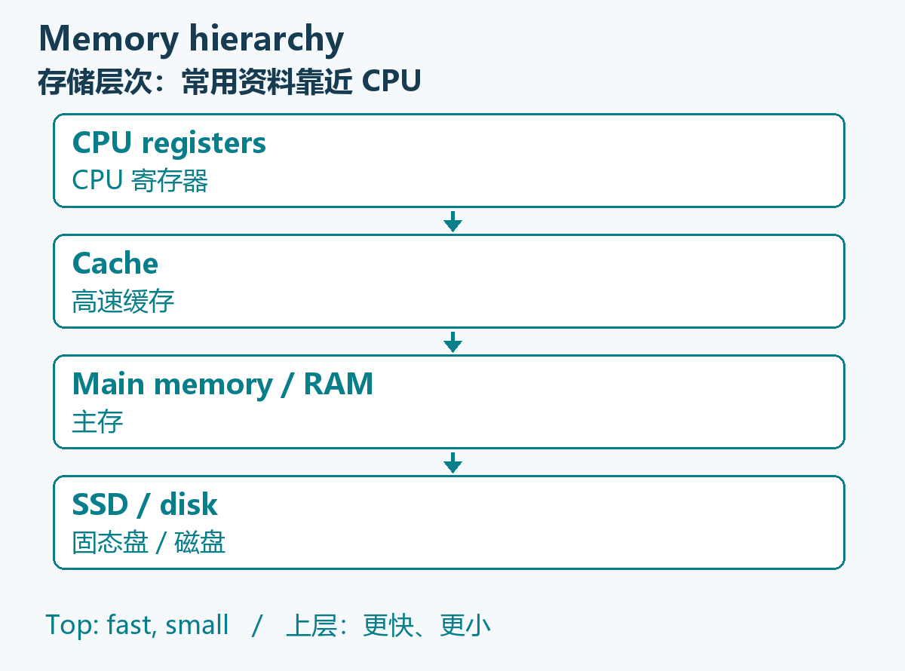
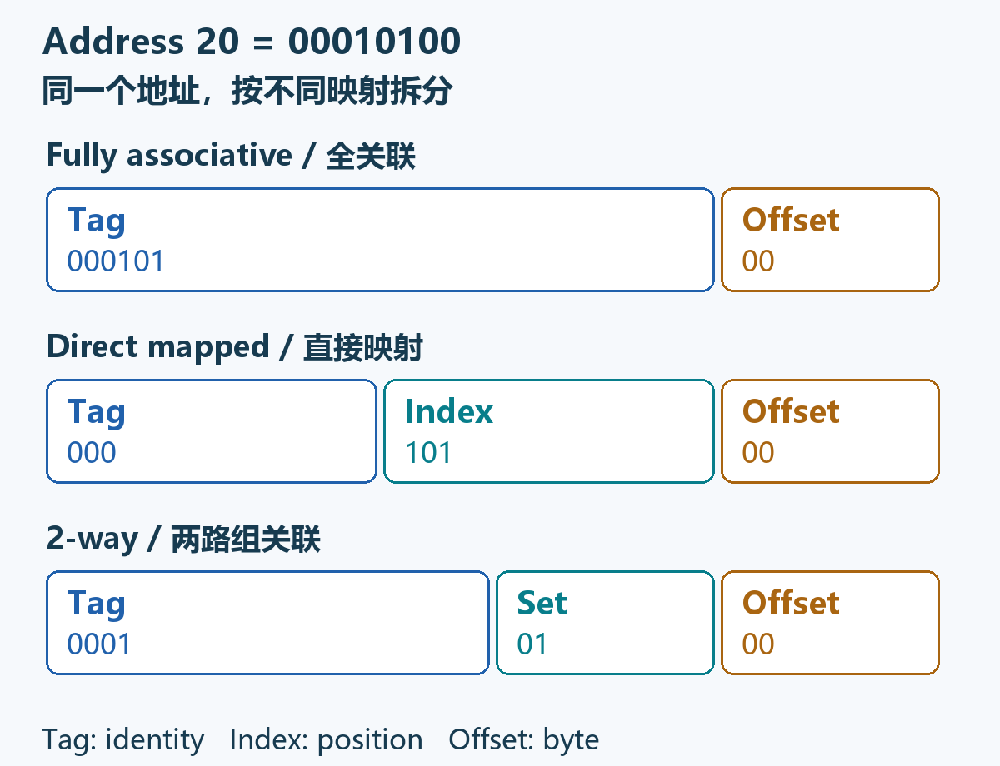
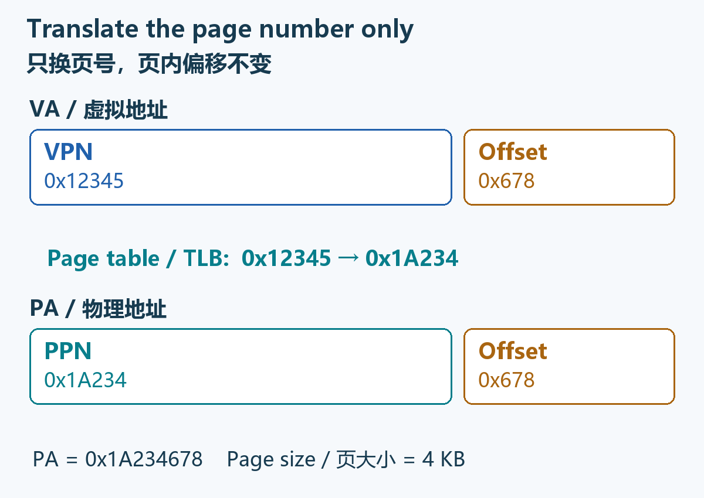

ESSENTIAL 01 · Q1–Q3
Foundations and locality基础概念与局部性
Know where data is, and why recently used or nearby data may be reused.
分清数据在哪，以及为什么刚用过或附近的数据还可能再用。
Choose one week at a time. Follow a picture, a worked example and a short self-check; then practise the lecturer’s ten questions.
一次只看一周。跟着图解、例题和自测学懂，再做老师的十道模拟题。
Why a cache works; AMAT and effective CPI.
缓存为什么有效；AMAT 与实际 CPI。
Split addresses; map blocks; update LRU.
拆地址、找组号、更新 LRU。
Miss trade-offs; writes; the L2 mockup question.
缺失率取舍、写策略与 L2 模拟题。
The six cards are study priorities, not a claim about the real quiz’s question distribution. Use the teacher mockup numbers to connect each idea to a concrete task.
六张卡表示复习优先级，不代表正式试卷的题数分配。通过老师模拟题题号，把知识点直接连到题目。
Know where data is, and why recently used or nearby data may be reused.
分清数据在哪，以及为什么刚用过或附近的数据还可能再用。
One measures average time per memory access; the other counts cycles per instruction.
一个算每次访存的平均时间，一个算每条指令花多少周期。
Find bytes per block, total lines and sets before taking logarithms.
先求每块字节数、总行数和组数，再取对数。
A block number is not a set number. Use the set count in the modulo.
块号不等于组号。映射时要对“组数”取余。
A hit refreshes LRU. A block’s first reference is cold even if replacement occurs.
命中也刷新 LRU；一个块首次访问，即使替换了别人，也先算 cold。
Separate when memory is updated from whether a write miss allocates a line.
把“何时更新主存”和“写缺失时是否装块”分开判断。
0–8 min: review Q1–Q5 concept rules and identify why the other options are wrong.
0–8 分钟：过一遍 Q1–Q5 概念，能说出其他选项为什么错。
8–25 min: solve Q6–Q9. Write the formula and units before looking at the answer.
8–25 分钟：做 Q6–Q9，先写公式和单位，再看答案。
25–35 min: learn Q10 once because it is present in the mockup; keep the scope caution.
25–35 分钟：因模拟卷中出现，完整学一次 Q10，并记住范围冲突。
35–45 min: retry every wrong question with the solution closed.
35–45 分钟：关掉解析，重做所有错题。
0–20 min: read the six illustrated essentials; explain each main rule aloud.
0–20 分钟：看六个图解主题，能用自己的话讲出主规则。
20–50 min: take the ten teacher questions in English mode, using the local 30-minute timer.
20–50 分钟：切纯英文，用本地 30 分钟计时完成老师十题。
50–75 min: check the worked steps and every distractor; practise Q8/Q9 with changed values.
50–75 分钟：对照步骤和各个干扰项；改参数重做 Q8/Q9。
75–90 min: click through T8.8 in three mapping modes; explain why empty lines in another set cannot help.
75–90 分钟：逐步演示 T8.8 的三种组织，解释其他组的空行为什么不能借来用。
0–40 min: work through the six essentials, including the diagrams and warning boxes.
0–40 分钟：完成六个必会主题，包括图示与易错提示。
40–70 min: complete the teacher mockup with explanations closed.
40–70 分钟：关着解析做完老师模拟题。
70–105 min: review mistakes and do the ten short transfer exercises.
70–105 分钟：复盘错因，并做十道简短举一反三。
105–145 min: use T7.3/T7.5, T8.4/T8.5/T8.7 and T9.4/T9.5 for deeper calculation practice.
105–145 分钟：用 T7.3/T7.5、T8.4/T8.5/T8.7、T9.4/T9.5 加深计算训练。
145–180 min: reproduce T8.8 on paper, then retake weak questions in English.
145–180 分钟：在纸上重做 T8.8，再用纯英文重做薄弱题。
Yes. On 26 October 2026, the linked NTULearn page was read as “Mockup Quiz 2”: 10 questions, 1 point each, no due date, unlimited attempts. The page was only read; no answers were selected or submitted.
有。2026 年 10 月 26 日已读取你给的 NTULearn 页面，标题为 Mockup Quiz 2：10 题、每题 1 分、无截止日期、可无限次尝试。此次只读取，没有代你选择或提交答案。
The English stems and options below are transcribed from that page. Chinese translations, worked solutions and transfer exercises are prepared for this guide. The answer key is independently derived; the page did not display official solutions.
下文英文题干与选项来自该页面；中文翻译、解题步骤和举一反三由本资料编写。答案为独立推导，页面未展示官方解析。
Scope conflict: the current mockup Q10 asks for recursive two-level AMAT, whereas W9-P078 said those L2 equations would not be tested. This guide explains Q10 and marks the conflict. Its presence in a mockup does not establish that it must appear in the real quiz. Virtual memory is still explicitly excluded in the supplied transcript and is absent from this mockup.
范围冲突：当前模拟题 Q10 确实考两级 AMAT 递推，但 W9-P078 曾说这组 L2 公式不考。本版完整讲 Q10，并保留冲突提示；模拟题中出现，不等于正式测验必出。虚拟内存仍是所给字幕中的明确排除项，本份模拟题也未出现。
Quiz timing in the later lecture announcement: Tuesday 27 October, 20:45–21:15, 30 minutes. The mockup page itself has no due date and does not independently confirm this schedule.
后续课堂公布的正式 Quiz 时间：10 月 27 日周二 20:45–21:15，共 30 分钟。模拟题页面本身无截止时间，不能用它再次确认正式考期。
Understand locality, distinguish miss time from penalty, then calculate cycles per instruction.
先懂局部性，分清总时间与额外罚时，再算每条指令的周期数。
A cache keeps copies of selected memory blocks close to the CPU. A hit means the requested block is present and valid; a miss means it is not. A register is inside the processor and is normally faster than cache.
缓存把一部分主存块的副本放到 CPU 附近。所需块有效且在缓存中就是 hit，否则是 miss。寄存器在处理器内部，通常比 cache 更快。
The loop repeatedly reads x. The important word is same, not merely loop.
循环不断读 x，关键是“同一个”，不只是看见 loop。
Consecutive elements are stored nearby. Fetching a whole block can make the next nearby access a hit.
连续元素通常存放在相邻位置。搬来一整块，下一次访问附近元素就可能命中。
“Repeatedly accesses the same variable” points to temporal locality. “Consecutive / adjacent / neighbouring addresses” points to spatial locality.
看到 repeatedly accesses the same variable，先想时间局部性；看到 consecutive／adjacent／neighbouring addresses，先想空间局部性。
Temporal locality means reusing the same item soon; spatial locality means accessing nearby addresses soon. A loop can exhibit both, so identify the particular access pattern.
时间局部性是同一项目很快再用，空间局部性是附近地址很快被访问。循环可能同时有两者，要看具体访问模式。
A cache retains recently used blocks and fetches nearby bytes together. Registers are normally faster than cache, followed by main memory and secondary storage.
缓存保留近期用过的块，并将附近字节一起取来。通常寄存器比缓存快，之后才是主存和辅助存储。
A program reads decimal byte addresses 40, 41 and 42 in order, then reads address 40 again shortly afterward. Which part illustrates spatial locality, and which part illustrates temporal locality?
程序依次读取十进制字节地址40、41、42，随后很快再读40。哪部分体现空间局部性，哪部分体现时间局部性？
Reading adjacent byte addresses 40, 41 and 42 illustrates spatial locality. Reusing byte address 40 soon afterward illustrates temporal locality.
依次读取相邻字节地址40、41、42体现空间局部性；随后很快重复读取字节地址40体现时间局部性。
AMAT is average time for one memory access. Every access pays the cache lookup time; only misses pay the extra miss penalty.
AMAT 是一次访存的平均时间。每次访问都先花缓存查询时间；只有 miss 才额外支付罚时。
Teacher Q6: 2 + 0.05 × 70 = 5.5 ns. The 72 ns is a complete miss, not an average over all accesses.
老师 Q6：2 + 0.05 × 70 = 5.5 ns。72 ns 是一次完整 miss 的时间，不是所有访问的平均值。
Use this common course case first: each instruction is fetched once, each load/store makes one data access, and other instructions make no data access. Let fLS be the fraction of instructions that are loads/stores.
先用本课常见情况：每条指令取指一次；每条 load/store 访问数据一次；其他指令不访问数据。用 fLS 表示 load/store 占全部指令的比例。
Subscripts I and D label the instruction cache and data cache; they are not extra numbers to substitute. MP means an additional miss penalty, in cycles.
下标 I、D 只是区分“指令缓存”和“数据缓存”，不是另外两个待代入的数。MP 表示额外未命中罚时，单位是周期。
| Symbol符号 | Meaning含义 | Teacher Q7 value老师 Q7 的值 |
|---|---|---|
| CPIbase | Normal cycles per instruction before extra miss stalls 未加额外 miss 停顿时，每条指令的基础周期数 | 1.3 |
| MRI | Instruction-cache misses per instruction fetch 每次取指的指令缓存未命中率 | 2% = 0.02 |
| MPI | Extra cycles per instruction-cache miss 每次指令缓存 miss 的额外周期 | 40 cycles / 周期 |
| fLS | Load/store instructions divided by all instructions load/store 指令数 ÷ 全部指令数 | 25% = 0.25 |
| MRD | Data-cache misses per data access 每次数据访问的数据缓存未命中率 | 6% = 0.06 |
| MPD | Extra cycles per data-cache miss 每次数据缓存 miss 的额外周期 | 40 cycles / 周期 |
The previous standalone I and D denoted average access counts per instruction: I=1 and D=0.25 in teacher Q7. They were not the total number of instructions, the total number of data items, or two missing parameters. The clearer formula above substitutes I=1 and writes D as fLS under the stated assumptions.
旧版单独相乘的 I、D 表示“每条指令的平均访问次数”：老师 Q7 中 I=1、D=0.25。它们不是指令总数或数据总量，也不是题目漏给的两个参数。上方新公式已代入 I=1，并在所述条件下把 D 改写为 fLS。
For teacher Q7, take 100 instructions: 100 fetches and 25 data accesses.
用老师 Q7 的 100 条指令来想：有 100 次取指、25 次数据访问。
Instruction misses: 100 × 2% = 2. Data misses: 25 × 6% = 1.5 on average.
平均取指 miss：100×2%=2 次；数据 miss：25×6%=1.5 次。
Extra cycles: (2 + 1.5) × 40 = 140; divide by 100 instructions to get 1.4 extra CPI.
额外周期为 (2+1.5)×40=140；除以 100 条指令，额外 CPI=1.4。
Add base CPI: 1.3 + 1.4 = 2.7. For different questions use their stated fetch/access counts.
加上基础 CPI：1.3+1.4=2.7。其他题要按其给定的取指／访存次数计算。
For any instruction mix, the average extra miss cycles per instruction equal average accesses per instruction × misses per access × extra cycles per miss. Apply that separately to instruction fetches and data references, then add base CPI.
不管指令混合怎样，每条指令的平均额外 miss 周期都等于：每条指令平均访问次数 × 每次访问的 miss 率 × 每次 miss 额外周期。对取指和数据分别计算，再加基础 CPI。
For example, if a question explicitly gives 1.2 instruction fetches per instruction, multiply the instruction term by 1.2. If one load/store makes more than one data reference, the data-access count does not simply equal the load/store fraction.
例如，题目若明确每条指令平均取指 1.2 次，取指项就要乘 1.2；若一条 load/store 访问数据不止一次，平均数据访问次数也不能简单等于 load/store 比例。
Do not apply the data-cache miss rate to every instruction. Do not add ordinary hit cycles again when base CPI already includes them. Penalties must use the same CPU-cycle unit; if a penalty is given in ns, divide it by the CPU cycle time before calculating CPI. Average accesses/instruction × misses/access × extra cycles/miss gives extra cycles/instruction.
数据缓存未命中率不能直接套到每条指令上；若 base CPI 已含普通命中开销，就不要再加一次。两类罚时必须统一成同一 CPU 的周期数；若题目给 ns，先除以 CPU 时钟周期。量纲是：平均访问次/指令 × miss次/访问 × 额外周期/miss＝额外周期/指令。
Every cache access pays hit time HT. Miss penalty MP is additional, so total miss time MT=HT+MP and AMAT=HT+MR×MP. Keep time units consistent.
每次访问缓存都支付HT；MP是额外罚时，因此完整MT=HT+MP，AMAT=HT+MR×MP。各项时间单位必须一致。
For CPI, weight each miss rate by the average access count per instruction. In the one-fetch, one-data-reference-per-load/store model, the data coefficient is the load/store fraction fLS.
算 CPI 时，未命中率要乘每条指令的平均访问次数。在每条指令取指一次、每条 load/store 访数据一次的模型中，数据项系数就是 load/store 比例 fLS。
A cache has HT=3 ns, miss rate MR=4%, and an additional miss penalty MP=50 ns after lookup. Find AMAT in ns.
缓存HT=3 ns、MR=4%，查询后额外罚时MP=50 ns。求AMAT，单位ns。
AMAT=3+0.04×50=5 ns. The complete miss time is 3+50=53 ns; 50 ns is the additional penalty, not the total miss time.
AMAT=3+0.04×50=5 ns。完整miss时间为3+50=53 ns；50 ns是额外罚时，不是完整miss时间。

ENImagine that the CPU is a person who solves problems quickly, while main memory is a large library some distance away. The person may finish a calculation immediately but still have to wait for the next book or piece of data to arrive. A fast processor therefore does not automatically make the whole computer fast.
中文把CPU想成做题很快的人，把主存想成远处的大书库。人可能很快算完一步，却还要等下一本书或下一份数据送过来。因此，处理器很快，并不等于整台计算机就很快。
ENThe central idea of the von Neumann architecture is the stored-program concept: instructions and data are stored together in the same main memory. The CPU contains a control unit (CU), an arithmetic logic unit (ALU), and other components. A system bus carries addresses, data, and control signals among the CPU, memory, and input/output devices. Source: Week 7, pp.12–14.
中文冯·诺依曼结构的核心是存储程序概念：程序指令和数据一起放在同一个主存里。CPU包含控制单元CU、算术逻辑单元ALU等部件。系统总线在CPU、内存和输入/输出设备之间传输地址、数据及控制信号。来源：Week 7，pp.12–14。
ENControl unit (CU): fetches instructions and coordinates their execution. It determines which instruction is needed next and controls the steps that carry it out.
中文控制单元CU：取出指令并协调执行，决定接下来需要哪条指令，以及执行这条指令需要哪些步骤。
ENArithmetic logic unit (ALU): performs arithmetic and logical operations, such as addition, subtraction, comparisons, and Boolean operations.
中文算术逻辑单元ALU：完成加减、比较、布尔逻辑等算术和逻辑运算。
ENMain memory / RAM: stores the instructions and data used by running programs.
中文主存/RAM：保存正在运行的程序所需的指令和数据。
ENSystem bus: provides the communication path connecting the CPU, memory, and input/output devices.
中文系统总线：是连接CPU、内存与输入/输出设备的通信通路。
ENAuxiliary storage: provides long-term, non-volatile storage for programs and data. Examples include solid-state drives and hard disks.
中文辅助存储：长期保存程序和数据，断电后通常仍保留内容，例如SSD和硬盘。
ENByte-addressable memory: each address identifies one byte, and one byte contains eight bits. An address does not automatically identify an entire integer of any size.
中文按字节编址：每个地址对应一个字节，1字节等于8位。不能默认一个地址就对应一个任意大小的完整整数。
ENThe von Neumann bottleneck concerns the limited shared path used to communicate instructions and data between the CPU and memory. The memory wall concerns the growing performance gap between processor speed and memory latency. Both can make the processor wait for data instead of doing useful work. Source: Week 7, pp.15–18.
中文冯·诺依曼瓶颈强调CPU与内存之间指令和数据共享通路，通路的传输能力可能受限；内存墙强调处理器速度和内存延迟之间的性能差距。二者都可能让CPU花时间等数据，而不是执行有用的运算。来源：Week 7，pp.15–18。
ENThe image on Week 7, p.17 illustrates Moore’s law: historically, the number of transistors on an integrated circuit approximately doubled every two years. It provides context for processor technology trends. The historical growth figures on p.15 should not be treated as a formula for predicting every future device.
中文Week 7 p.17的图片说明摩尔定律：历史上，集成电路中的晶体管数量大约每两年翻一倍。这里用它说明处理器技术发展的背景。p.15的历史增长数字不应当被当作预测所有未来器件的固定公式。
ENMethod 1 — Caching and a memory hierarchy: keep frequently accessed blocks close to the CPU so that fewer accesses need slow main memory. Source for these methods: Week 7, p.19.
中文方法1——缓存和内存层次：把经常访问的数据块放在靠近CPU的地方，减少访问慢速主存的次数。以下方法来源：Week 7，p.19。
ENMethod 2 — Harvard or hybrid architectures: separate instruction and data paths to increase the available memory bandwidth.
中文方法2——哈佛或混合结构：分开指令和数据通路，提高可用的内存带宽。
ENMethod 3 — Parallelism and specialization: use multiple CPU cores, GPUs, vector processors, or dedicated accelerators to increase the amount of useful work performed in parallel.
中文方法3——并行和专用化：使用多核CPU、GPU、向量处理器或专用加速器，增加同时完成的有用工作。
ENMethod 4 — Processing near or inside memory: reduce the movement of data between memory and the processor. Processing-in-memory is commonly abbreviated as PIM.
中文方法4——在内存附近或内部处理：减少数据在内存和处理器之间来回搬运。内存内处理通常缩写为PIM。
ENMethod 5 — Faster interconnects and memory technologies: increase the rate at which data can be delivered, for example through high-bandwidth memory (HBM) enabled by three-dimensional stacking.
中文方法5——更快的互连和内存技术：提高数据送达的速度，例如采用通过三维堆叠实现的高带宽内存HBM。
ENAt this stage, focus on explaining the cause and the purpose of each remedy: slow data movement and shared paths limit performance; the remedies reduce movement, increase bandwidth, or increase useful parallel work. Detailed device implementation is not needed to understand this lesson.
中文现阶段应重点说清问题和办法的对应关系：数据搬运慢、共享通路受限会影响性能；相应方法是减少搬运、提高带宽，或增加有效的并行工作。理解本课不需要深入器件内部实现。
ENVon Neumann versus Harvard: von Neumann architecture shares memory and communication paths for instructions and data. Harvard architecture separates their storage and access paths, allowing an instruction fetch and a data access to proceed at the same time when the hardware supports it. Source context: Week 7, pp.19–20.
中文冯·诺依曼结构与哈佛结构：前者让指令和数据共享存储及通信通路；哈佛结构将二者的存储和访问通路分开，在硬件支持时可以同时取指和访问数据。对应来源：Week 7，pp.19–20。
ENA hybrid or modified Harvard design can separate instruction and data paths at some levels while sharing memory at lower levels. For example, an instruction cache (I-cache) and a data cache (D-cache) may be separate while both ultimately use the same main memory. In the CPI questions below, I-cache handles instruction fetches and D-cache handles data accesses.
中文混合或改进型哈佛结构可以在某些层次分开指令与数据通路，同时在更低层共享内存。例如，指令缓存I-cache和数据缓存D-cache分开，但最终共用主存。后面的CPI题中，I-cache负责取指，D-cache负责访问数据。
ENA cache is a small, fast storage area close to the processor. It keeps copies of main-memory blocks that have recently been used or are likely to be used soon.
中文缓存Cache是靠近CPU的少量快速存储，保留近期用过或可能很快用到的主存数据块副本。
ENA typical hierarchy, moving away from the CPU, is: registers → cache → RAM → SSD or disk. Levels closer to the CPU are generally faster, smaller, and more expensive per bit. More distant levels are generally slower, larger, and cheaper per bit. The hierarchy aims to create the impression of a memory that is large, fast, and inexpensive. Source: Week 7, pp.22–23.
中文从靠近CPU到远离CPU，常见层次是：寄存器→缓存→RAM→SSD或磁盘。越靠近CPU，一般越快、容量越小、每位成本越高；越远则相反。层次结构的目标是让使用者感觉同时拥有大容量、快速度和低成本的存储。来源：Week 7，pp.22–23。
ENIn the course model, data move between adjacent hierarchy levels in blocks. A main-memory block occupies a cache line when it is placed in the cache. Strictly, a block is the transfer unit and a line is a position in the cache that holds a block. This course sometimes uses the two terms interchangeably for simplicity. Source: Week 7, p.23.
中文课程模型中，数据在相邻层次之间按块Block传输。一个主存块放入缓存后，占用一条缓存行Cache line。严格说，块是传输单位，行是缓存中存放这个块的位置；本课为简便会交替使用二者。来源：Week 7，p.23。
ENA miss normally brings in an entire block, rather than only the single byte requested by the CPU. This can make nearby data available before the program explicitly requests it.
中文一次未命中通常搬入一整块，而不是只搬CPU刚刚请求的一个字节。这样，相邻数据在程序明确请求之前就可能已经进入缓存。
ENThe principle of locality states that a program usually accesses only a relatively small part of its address space during a short period. Source: Week 7, p.24.
中文局部性原理指程序在一段短时间内通常只访问整个地址空间中的一小部分。来源：Week 7，p.24。
ENAn item that has just been accessed is likely to be accessed again soon. Examples include repeatedly executing the same loop instructions or repeatedly reading the same variable. A cache exploits this by keeping recently used blocks available.
中文刚访问过的东西，过一会儿可能又要访问。例如，循环反复执行同一段指令，或反复读取同一个变量。缓存通过保留近期用过的块来利用这种特点。
ENOnce one address is accessed, nearby addresses
are likely to be accessed soon. Sequential accesses to
a[0], a[1], and a[2] are an
example. A cache exploits this by bringing in a block of adjacent data
at one time.
中文访问一个地址之后，它附近的地址可能很快也会被访问。顺序访问a[0]、a[1]、a[2]就是例子。缓存通过一次搬入一块相邻数据来利用这种特点。
ENThe slide’s 90/10 rule illustrates program hot spots: roughly 10% of the code may account for 90% of execution. It is an intuition about typical concentration of activity, rather than an exact condition satisfied by every program.
中文课件的90/10规则用来说明程序热点：大约10%的代码可能占据90%的执行活动。它表达的是活动集中在少量代码上的直觉，并不是每个程序都精确满足的条件。
ENEvery instruction must itself be fetched from memory, either from a cache or from main memory. Some instructions then make an additional data access. Source: Week 7, pp.25, 27, 41–42.
中文每条指令本身都要先从缓存或主存中取出来。部分指令随后还要额外访问数据。来源：Week 7，pp.25、27、41–42。
ENRegister-to-register arithmetic: normally one instruction fetch, with no additional data-memory access when all operands and the result remain in registers.
中文寄存器之间的运算：当操作数和结果都在寄存器中时，通常只有一次取指，不额外访问数据内存。
ENLoad from an array into a register: one instruction fetch plus one data-memory read.
中文把数组元素读入寄存器：一次取指，再加一次数据内存读取。
ENStore from a register to memory: one instruction fetch plus one data-memory write.
中文把寄存器内容写入内存：一次取指，再加一次数据内存写入。
ENIf 30% of the instructions are loads or stores, and only these instructions access data memory once each, the average is 1.30 memory references per instruction:
中文如果30%的指令是load/store，且只有它们各访问一次数据内存，则每条指令平均有1.30次存储访问：
Memory references per instruction = 1 + 0.30 = 1.30ENAn average of 1.30 means that 100 instructions generate 100 instruction fetches and 30 data accesses, making 130 references in total. It does not mean that an individual instruction performs a fractional operation.
中文1.30表示100条指令一共带来100次取指和30次数据访问，共130次；不是说某条指令真的完成了小数次操作。
ENSome simplified loop questions explicitly count
only array references and keep variables such as sum and
i in registers. In those questions, count array references
as instructed and do not add instruction fetches. Always identify the
counting model before calculating.
中文有些简化循环题明确只统计数组引用，并把sum、i放在寄存器中。这时应按要求数数组访问，不额外加取指。计算之前先确认题目采用哪一种计数模型。
ENA hit occurs when the requested block is already in the cache. A miss occurs when the block is absent and must be fetched from a lower memory level.
中文命中Hit表示请求的块已在缓存中；未命中Miss表示块不在缓存中，需要从更低的存储层次取来。
ENh is the hit rate.
Enter percentages as fractions: for example, a hit rate of 90% means
h = 0.90. m is the miss rate,
and m = 1 − h.
中文h是命中率。百分比要代入小数，例如90%代入h = 0.90。m是未命中率，满足m = 1 − h。
ENC is the cache access
time, also called the hit time. M
is the main-memory access time. P is the
miss penalty, meaning the additional waiting time
caused by a miss after the cache access.
中文C是缓存访问时间，也叫命中时间；M是主存访问时间；P是未命中罚时，表示访问缓存之后，因未命中而额外增加的等待时间。
ENUnless stated otherwise, the course uses a
two-level hierarchy consisting of cache and main memory and assumes
P = M. Source: Week 7, pp.29–31.
中文除非题目另有规定，课程采用“缓存＋主存”的两层模型，并假设P = M。来源：Week
7，pp.29–31。
Hit time = C
Miss time = C + P
AMAT = h*C + m*(C + P) = C + m*PENAMAT means average memory access time: the expected time required for one memory reference. Use a common unit throughout, such as nanoseconds, milliseconds, or cycles. The average must include both hits and misses.
中文AMAT是平均内存访问时间，表示一次存储访问平均需要多久。等式各项必须统一单位，例如都用纳秒、毫秒或周期。平均值必须同时考虑命中和未命中。
ENWorked example: with a hit time of 1 cycle, a miss penalty of 50 cycles, and a hit rate of 80%, the complete miss time is 51 cycles and AMAT is 11 cycles. Source: Week 7, p.31.
中文例题：命中时间1周期、未命中罚时50周期、命中率80%，则完整未命中时间为51周期，AMAT为11周期。来源：Week 7，p.31。
Miss rate = 1 − 0.80 = 0.20
Miss time = 1 + 50 = 51 cycles
AMAT = 1 + 0.20*50 = 11 cyclesENCommon mistake: the miss penalty is not the same as the complete miss time. If the question explicitly gives a total miss time of 100 ns, use 100 ns in the weighted average; do not automatically add the cache access time again.
中文常见错误：未命中罚时不等于完整未命中时间。如果题目明确说未命中总共需要100 ns，做加权平均时直接用100 ns，不应无条件再加一次缓存访问时间。
ENIf the number of references is unchanged, each
reference without a cache takes M, whereas each reference
with a cache takes AMAT on average. Define S as the time
without cache divided by the time with cache:
中文当访问次数不变时，无缓存每次访问用时M，有缓存每次平均用时AMAT。令S为无缓存耗时除以有缓存耗时：
S = T_without_cache / T_with_cache = M / (C + m*P)ENSaying that a cache is k times as
fast as main memory means C = M/k, rather than
C = k*M. Under the course assumption P = M,
the speedup becomes:
中文说缓存比主存快k倍，意思是C = M/k，不是C = k*M。在课程假设P = M下，加速比可改写为：
S = 1 / (1/k + m)ENThis is the speedup of the memory-access part. If memory accesses account for only 20% of the program’s original execution time, the whole program time cannot simply be divided by this speedup.
中文这是访存部分的加速比。如果访存只占程序原执行时间的20%，不能把整个程序时间直接除以这个加速比。
ENCPI means cycles per
instruction. CPI_0, the ideal
CPI, is the average number of cycles per instruction under the
assumed ideal conditions. The slides assume cache hits, no pipeline
hazards or stalls, no branch penalties, and no waiting for slow
input/output devices. The actual or effective CPI includes additional
memory-stall cycles. Source: Week 7, pp.28–29, 40–42.
中文CPI表示每条指令的平均时钟周期数。CPI_0是理想CPI，表示所设理想条件下每条指令的平均周期数。课件的理想条件包括缓存全命中、没有流水线冒险和停顿、没有分支罚时，也不等待慢速输入/输出设备。实际或有效CPI要把额外的内存停顿周期加回来。来源：Week
7，pp.28–29、40–42。
ENI is the average number of
instruction fetches per instruction; normally
I = 1 in this course. D is the average number
of data accesses per instruction. If each load/store
makes exactly one data access and all other instructions make none,
D equals the load/store fraction.
中文I是每条指令平均取指次数，本课通常I = 1。D是每条指令平均数据访问次数。若每条load/store恰好访问一次数据，其他指令不访问数据，则D等于load/store所占比例。
ENm_I and m_D are the
instruction-cache and data-cache miss rates. P_I and
P_D are their miss penalties in cycles per miss.
s is the average memory-stall cost in cycles per
instruction.
中文m_I、m_D分别是指令缓存和数据缓存的未命中率；P_I、P_D分别是两者的未命中罚时，单位是每次未命中所需的周期数。s是平均每条指令因内存停顿多用的周期数。
s = I*m_I*P_I + D*m_D*P_D
CPI_actual = CPI_0 + sENIf both types of access have the same miss rate
m and miss penalty P, and I = 1,
the expression simplifies to:
中文如果取指和数据访问采用相同未命中率m、相同罚时P，并且I = 1，公式可简化为：
s = (1 + D)*m*PENThe reasoning is: references per instruction × probability of a miss per reference × extra cycles per miss. This produces an average number of extra cycles per instruction.
中文直觉是：每条指令有几次访问×每次访问未命中的概率×每次未命中多等的周期，得到每条指令平均多用的周期数。
ENThe denominator of m_D is normally
the number of data accesses, not the total instruction count. This is
why the data term must be multiplied by D. The
instruction-fetch term normally does not need the load/store fraction
because every instruction must be fetched.
中文m_D的分母通常是数据访问次数，不是总指令数，所以数据项必须先乘D。取指项通常不乘load/store比例，因为每条指令都要先取出来。
ENLet IC be the instruction count,
f_clk the clock frequency in hertz, and T_clk
the clock-cycle duration. P_time is a penalty given as time
and P_cycles is the same penalty expressed in cycles.
Divide time by the duration of one cycle to convert a time penalty to a
cycle penalty.
中文令IC为指令条数，f_clk为时钟频率（单位Hz），T_clk为一个时钟周期的时长。P_time是以时间表示的罚时，P_cycles是换成周期数之后的同一罚时。时间罚时除以每周期的时间，就得到罚时周期数。
T_clk = 1/f_clk
P_cycles = P_time/T_clk
Total stall cycles = IC*s
Total CPU cycles = IC*(CPI_0 + s)
CPU execution time = IC*CPI_actual*T_clk
Stall fraction = s/(CPI_0 + s) = s/CPI_actualENFor the percentage of total execution time spent stalled, divide the stall cost by the actual CPI and multiply by 100%. Dividing by ideal CPI gives a different quantity and does not answer this question.
中文求停顿占总执行时间的百分比时，应把停顿成本除以实际CPI，再乘100%。除以理想CPI得到的是另一个量，不能回答这道问题。
ENUseful conversions are
1 ns = 10-9 s and 1 MHz = 106 Hz. A clock
frequency of 500 MHz therefore gives a cycle time of 2 ns.
中文常用换算是1 ns = 10-9 s、1 MHz = 106 Hz。因此，500
MHz对应每周期2 ns。
ENFor the same program, instruction count, and clock frequency, execution time is proportional to CPI. The speedup from an old design to a new design is the old execution time divided by the new execution time:
中文同一程序、指令数和时钟频率相同时，执行时间与CPI成正比。从旧方案换到新方案的加速比，等于旧执行时间除以新执行时间：
Speedup = T_old/T_new = CPI_old/CPI_newENIf the actual machine takes 1.35 times as long
as the ideal machine, its execution time increases by 35%. Its speed is
1/1.35, or approximately 74.1% of the ideal speed. Saying
“speed decreases by 35%” would be incorrect.
中文如果实际机器耗时为理想机器的1.35倍，表示耗时增加35%；其速度是理想速度的1/1.35，约74.1%。不能把它说成“速度下降35%”。
ENLet the original total time be T,
and let memory accesses account for fraction q of that
time. Suppose the number of references stays unchanged, all other work
takes the same time, and the average access time changes from
A_old to A_new. Only the memory portion should
be scaled:
中文原程序总时间为T，其中访存占比为q。假设访问次数不变、其他工作时间不变，而平均访问时间从A_old变为A_new，则只应缩放访存部分：
T_new = T*(1 − q) + T*q*A_new/A_oldENFirst separate computation and other work from memory-access time. Keep the first part fixed and scale only the second part. This is the central idea in Tutorial Question 7.6.
中文先把计算及其他工作与访存时间分开。前一部分保持不变，只按比例调整后一部分。这是Tutorial 7.6的解题关键。
ENInstructions and data share the same memory and communication path. Limited memory bandwidth and memory latency can force the CPU to wait, reducing overall performance.
中文指令和数据共享同一存储及通信通路。有限的内存带宽和内存延迟会让CPU等待，降低整体性能。
ENIt exploits temporal and spatial locality. A small, fast cache keeps recently used blocks and nearby data close to the processor, reducing average memory access time.
中文它利用时间局部性和空间局部性。少量快速缓存让近期使用的块和附近数据靠近CPU，从而降低平均访问时间。
ENTemporal locality means that recently accessed items are likely to be accessed again soon. Spatial locality means that nearby addresses are likely to be accessed soon.
中文时间局部性指近期访问过的项目可能很快再次被访问；空间局部性指相邻地址可能很快被访问。
ENThe miss penalty is the additional delay after a cache miss. The miss access time includes both the cache access time and the miss penalty.
中文未命中罚时是缓存未命中后额外增加的延迟；完整未命中时间包含缓存访问时间和这段额外罚时。
ENEvery instruction requires an instruction fetch, but only load/store instructions access data memory under the given assumptions. Therefore, the data miss cost must be weighted by the load/store fraction.
中文每条指令都需要取指，但在本题假设下，只有load/store指令访问数据内存。因此，数据未命中成本必须用load/store占比加权。
ENA cache keeps frequently accessed blocks close to the CPU, so most accesses can be served without waiting for main memory.
中文缓存把经常访问的块放在CPU附近，因此多数访问无需等待主存即可完成。
ENIt separates instruction and data paths, allowing instruction fetches and data accesses to proceed in parallel when supported by the hardware.
中文它把指令和数据通路分开，在硬件支持时允许取指与数据访问同时进行。
ENQuestion. A processor has ideal CPI 1.1. Its instruction mix is 50% arithmetic/logic, 30% load/store, and 20% control. The data miss rate is 10%, and each instruction or data miss costs 50 additional cycles. Find actual CPI first with no instruction misses, and then with an instruction miss rate of 1%. Sources: W7-P038–P042; Week 7 PDF pp.32–33.
中文题目。处理器理想CPI为1.1，算术/逻辑指令占50%，load/store占30%，控制指令占20%。数据未命中率10%，每次取指或数据未命中额外增加50周期。先求指令无未命中时的实际CPI，再求指令未命中率为1%时的实际CPI。来源：W7-P038至P042；Week 7 PDF pp.32–33。
ENStep 1 — data cost. For 100 instructions, expect 30 data accesses. Of those 30 accesses, 10% miss, giving three data misses. Three misses cost 150 cycles in total, or 1.5 extra cycles per instruction.
中文第1步——数据成本。100条指令平均带来30次数据访问，其中10%未命中，也就是3次数据未命中。3次共花150周期，摊到每条指令就是额外1.5周期。
Data stall CPI = 0.30*0.10*50 = 1.5ENStep 2 — no instruction misses. The instruction-stall term is zero. Add only the data cost to ideal CPI. Actual CPI is 2.6, and the stalled fraction is approximately 57.69%, rounded to 58% on the slide.
中文第2步——取指全命中。指令停顿项为零，只把数据成本加到理想CPI上。实际CPI为2.6，停顿占比约57.69%，课件取整约写58%。
CPI_actual = 1.1 + 1.5 = 2.6
Stall fraction = 1.5/2.6 ≈ 57.69%ENStep 3 — add 1% instruction
misses. Every instruction is fetched, so this contribution is
0.01*50 = 0.5 cycles per instruction. Actual CPI becomes
3.1, and the stalled fraction becomes approximately
64.52%.
中文第3步——再加入1%的取指未命中。每条指令都要取指，所以新增成本是0.01*50 = 0.5周期/指令。实际CPI变为3.1，停顿占比约64.52%。
Instruction stall CPI = 0.01*50 = 0.5
CPI_actual = 1.1 + 1.5 + 0.5 = 3.1
Stall fraction = (1.5 + 0.5)/3.1 ≈ 64.52%ENExam-ready explanation: “The data miss rate is conditional on a data access, so it is multiplied by the load/store fraction. Every instruction is fetched, so the instruction miss term does not need that fraction.”
中文可直接用于考试的解释：“数据未命中率以一次数据访问发生为前提，所以要乘load/store比例；每条指令都需要取指，因此取指未命中项不需要再乘该比例。”
ENQuestion. A processor has ideal CPI=1.5. Each instruction requires an average of 1.2 instruction fetches and 0.3 data accesses. Instruction miss rate is 2%, with a 50-cycle penalty. Data miss rate is 5%, with an 80-cycle penalty. Find the memory-stall cycles per instruction and actual CPI. This is an additional classroom example, not the printed Tutorial 7.6 program-time question. Sources: W8-P022–024.
中文题目。处理器理想 CPI=1.5，每条指令平均需要 1.2 次取指和 0.3 次数据访问；指令 MR=2%、罚时 50 cycles，数据 MR=5%、罚时 80 cycles。求每条指令的 memory-stall cycles 和 actual CPI。这是课堂补充变式，不是印刷 Tutorial 7.6 的程序时间题。来源：W8-P022–024。
ENStep 1: instruction stalls. Use the explicitly supplied 1.2 fetches. Do not replace it with the usual default of one fetch per instruction.
中文第 1 步：取指停顿。使用题目明确给出的 1.2 次，不能机械套默认的一次取指。
Instruction stall CPI = 1.2 × 0.02 × 50 = 1.2
ENStep 2: data stalls. The average data-reference count is already 0.3 per instruction. Multiply by the data miss rate and its own penalty.
中文第 2 步：数据停顿。每条指令的数据访问次数已经是 0.3，乘数据 MR 和数据自己的罚时。
Data stall CPI = 0.3 × 0.05 × 80 = 1.2
ENStep 3: add only the extra stalls to ideal CPI. Total stall CPI is 2.4, and actual CPI is 3.9. The data penalty is 80 cycles: using 8 would not reproduce the teacher’s intermediate result of 1.2.
中文第 3 步：只将额外停顿加到理想 CPI。总 stall CPI 为 2.4，actual CPI 为 3.9。数据罚时是 80 cycles；若误用 8，无法得到老师的数据项 1.2。
Total stall CPI = 1.2 + 1.2 = 2.4
Actual CPI = 1.5 + 2.4 = 3.9
ENGeneral rule. Let I be instruction fetches per instruction and D be data accesses per instruction. Their units are counts per instruction, not clock-cycle durations. When no other fetch count is specified, the course normally assumes I=1. Normal hit costs are already part of the all-hit base CPI; do not add the full AMAT again. Sources: W8-P009–010, P022–029.
中文通用规则。I 表示每条指令的平均取指次数，D 表示平均数据访问次数，单位是“次/指令”，不是每次花几个 cycles。题目未另给时，本课通常设 I=1。正常 hit 成本已包含在全命中的基础 CPI 中，不能再把完整 AMAT 加一次。来源：W8-P009–010、P022–029。
Stall CPI = I × MR_I × MP_I + D × MR_D × MP_D
Use byte address → block → set → tag. Trace one reference at a time.
按“字节地址→块→组→Tag”来算；访问序列一次只处理一步。
Offset chooses a byte inside a block. Index chooses a set. Tag checks which memory block is in that set.
Offset 选块里的字节；Index 选组；Tag 判断这个组里存的是哪一个主存块。
The coloured 32-bit bar is teacher Q8: 256 KB, 64-byte blocks, 4 ways. Use 1 KB = 1024 bytes, the course convention.
上方 32 位彩条对应老师 Q8：256 KB、每块 64 字节、4 路。按课程约定使用 1 KB=1024 字节。
Lines L = C/B = 256×1024/64 = 4096.
总行数 L=C/B=256×1024/64=4096。
Sets S = L/k = 4096/4 = 1024.
组数 S=L/k=4096/4=1024。
Offset = log₂64 = 6 bits; index = log₂1024 = 10 bits.
Offset=log₂64=6 位；Index=log₂1024=10 位。
Tag = 32 − 10 − 6 = 16 bits. Check: 16+10+6=32.
Tag=32−10−6=16 位。检查：16+10+6=32。
k-way means k lines per set. Index bits come from the number of sets, not from all lines. A 64-byte block needs 6 offset bits, not 64 bits. Convert word-sized blocks to bytes when addresses are byte-addressable.
k 路表示每组 k 行；Index 位数来自组数，不是总行数。64 字节块需要 6 位 offset，不是 64 位。按字节编址时，若题目用 word 给块大小，应先换成字节。
Convert block size and data capacity to bytes. Lines=C/B; sets=lines/ways. Offset width comes from bytes per block, while index width comes from the number of sets.
先将块大小和数据容量换成bytes。行数=C/B，组数=行数/路数；offset位数来自每块字节数，index位数来自组数。
Tag bits=address bits−index bits−offset bits. For a byte address A, first find q=floor(A/B), then set=q mod sets; the block number is not automatically the set number.
Tag位数=地址位数−index位数−offset位数。对字节地址A，先求q=floor(A/B)，再求set=q mod组数；块号不自动等于组号。
A 20-bit byte-addressable system has an 8 KiB data cache, 64-byte blocks and 2-way set associativity. Use 1 KiB=1024 bytes. Find the Tag, Set-index and Offset widths, in that order, in bits.
20-bit字节地址系统，缓存数据容量8 KiB、每块64 bytes、2-way组相联，1 KiB=1024 bytes。按Tag、Set-index、Offset顺序求位数，单位bits。
There are 8192/64=128 lines and 128/2=64 sets. Offset=log2(64)=6 bits, index=log2(64)=6 bits and tag=20−6−6=8 bits. Requested order: 8/6/6 bits.
行数8192/64=128，组数128/2=64。Offset=log2(64)=6 bits，index=log2(64)=6 bits，tag=20−6−6=8 bits。所问顺序为8/6/6 bits。
An address first identifies a memory block. The cache organization then restricts where that block may be placed.
先由地址找主存块，再由缓存组织决定这个块允许放到哪里。
There are 256×1024/(16×8) = 2048 sets. This is an 8-way cache, not the 4-way cache in Q8.
组数为 256×1024/(16×8)=2048。本题是 8 路，不沿用 Q8 的 4 路。
0xA5C8 = 42440 in decimal. Divide by 16 bytes: q = 2652, offset = 8.
0xA5C8=十进制 42440。除以每块 16 字节：块号 q=2652，offset=8。
The required set is 2652 mod 2048 = 604, not 2652.
所求组号是 2652 mod 2048=604，不是 2652。
604 is not listed. Choose D, None of the above choices.
选项里没有 604，因此选 D：以上均不是。
A quick safety check: with 2048 sets, a valid set number is 0–2047. Option 2652 is already outside that range. “In decimal” asks for a decimal value, not the number of index bits.
快速检查：2048 组的合法组号是 0–2047；选项 2652 已经越界。“in decimal” 要十进制的组号，不是 Index 位数。
Direct mapping gives each memory block one permitted line. Set associativity gives it one designated set with several ways. Full associativity permits any line in the cache.
直接映射让每个主存块只有一条允许行；组相联指定唯一一组，但组内有若干路可选；全相联允许放任意缓存行。
A k-way cache has k lines per set, not k sets. An unused line in a different set cannot hold a block that maps elsewhere.
k-way指每组k行，不是共有k组。其他组即使有空行，也不能随意存放不映射到该组的块。
A cache has 8 lines in total, 8 bytes per block and 2-way set associativity. For decimal byte address 104, find the set number and state which lines inside that set are permitted.
缓存共8行、每块8 bytes、2-way组相联。对十进制字节地址104，求组号，并说明允许放在该组的哪些行。
There are 8/2=4 sets. The memory-block number is floor(104/8)=13, so set=13 mod 4=1. The block may occupy either of the two ways in set 1; it cannot use an arbitrary line in another set.
共8/2=4组；主存块号floor(104/8)=13，组号13 mod 4=1。该块可放在组1的任意一路，不能任意使用其他组的行。
LRU removes the block whose most recent access is oldest, within the selected set. Refresh the order on hits as well as misses.
LRU 在目标组内淘汰“最后一次访问最久远”的块。命中和未命中都更新最近使用次序。
For block references 0,2,0,4 in one two-way set, the third reference makes block 0 recent. The fourth reference evicts block 2. FIFO would still treat block 0 as the oldest arrival.
同一两路组依次访问块 0、2、0、4，第三次使块 0 变新，第四次应淘汰块 2。FIFO 只看进入先后，此时仍会认为块 0 最早进入。
For a non-first miss, compare with a fully associative LRU cache with the same number of lines and the same reference history. If that cache would hit, placement caused a conflict miss; if it would miss too, capacity is insufficient under that reference model.
非首次 miss 可与“同总行数、相同访问历史、全关联 LRU”缓存对照：若对照缓存能命中，是映射限制引起 conflict；若也 miss，则在这个参照模型下属于 capacity。
Do not label every replacement a conflict miss. A newly encountered block is cold even if it displaces another block. The lecturer explicitly corrected this in W9-P049–P052.
不能一看发生替换就标 conflict。一个新块首次出现，即使挤掉别人，也优先 cold。老师在 W9-P049–P052 特别纠正过。
LRU chooses the eligible block whose last access is oldest. Every hit refreshes recency too; replacement in a set-associative cache stays inside the selected set.
LRU选择允许范围内最久未访问的块。每次hit也刷新最近使用次序；组相联只能在选中组内替换。
For miss classification, ask first whether this block has ever been referenced. Its first reference is cold even if it evicts another block; eviction alone does not define a conflict miss.
分类miss先问该块是否访问过。首次访问即使淘汰别人也归cold；发生替换本身并不能定义conflict miss。
A 2-way set starts empty. Blocks P=5, Q=7 and R=9 all map to this set. Access P, Q, P, R in order, updating LRU on every access. Which block number is evicted by R, and is R's miss cold or conflict?
一个2-way组起初为空，块P=5、Q=7、R=9都映射到此组。依次访问P、Q、P、R，每次都更新LRU。R会淘汰哪个块号？R的miss是cold还是conflict？
Evict Q, block 7. The hit on the third access makes P most recent, leaving Q least recent. R is being referenced for the first time, so R's miss is cold despite evicting Q.
淘汰Q，即块7。第三次命中P使P成为最近使用，Q最久未用。R首次被访问，所以R的miss仍是cold，即使它淘汰了Q。
This is the supplied Tutorial 8.8, not a new question invented to replace the teacher mockup. Main memory: 256 bytes. Cache: 8 lines, 4 bytes per block, initially empty. Use LRU where there is a replacement choice.
这里是你提供的 Tutorial 8.8，并非替代老师模拟题的自编题。主存 256 字节；Cache 共 8 行，每块 4 字节；初始为空；有替换选择时使用 LRU。
The boxes show memory-block numbers, not byte addresses. Green marks MRU. The cache capacity is eight blocks in every mode, but the permitted locations differ.
方框中写的是主存块号，不是字节地址。绿色表示 MRU。三种组织的总容量都为 8 块，区别在于每块允许放的位置。
| Organization / 组织 | H / M | Cold / Conflict | Hit rate / 命中率 |
|---|---|---|---|
| Fully associative / 全关联 | 2 / 4 | 4 / 0 | 33.3% |
| Direct mapped / 直接映射 | 0 / 6 | 4 / 2 | 0% |
| 2-way / 两路组关联 | 0 / 6 | 4 / 2 | 0% |
All four distinct blocks fit in a fully associative cache. In the two-way organization all four target set 1, which has only two ways; free space in other sets cannot be borrowed. Here greater associativity does not improve the hit count until the placement restriction is sufficiently relaxed.
四个不同块可以全部放进全关联缓存。两路组织中它们却都挤在组 1，组内只有两路，其他组的空位不能借。因此提高关联度并不保证这条特定序列的命中数立刻变多。
For each reference, find the aligned memory block first, then the permitted line or set, then check its resident tag. A new byte address can hit an already cached block.
每次先找对齐的主存块，再找允许行或组，最后检查驻留tag。新出现的字节地址也可能命中已有块。
Write the state after every access and refresh LRU on hits. Compute hit rate as hits divided by total accesses; compare organizations only with the same sequence, capacity and block size.
每次访问后都记状态，hit也更新LRU。命中率=命中次数/总访问次数；比较组织时保持序列、容量和块大小一致。
Mini transfer exercise inspired by Tutorial 8.8: an initially empty fully associative cache has 4 lines and 8-byte blocks. It reads decimal byte addresses 8, 11, 24, 8, 40, 25. Find the number of hits, misses and the hit rate in percent.
受Tutorial 8.8启发的迁移小题：全相联缓存初始为空，共4行、每块8 bytes。依次读十进制字节地址8、11、24、8、40、25，求hits、misses和百分比命中率。
The block numbers are 1,1,3,1,5,3, so the outcomes are M,H,M,H,M,H. All three distinct blocks fit. There are 3 hits and 3 cold misses; hit rate=3/6=50%.
块号依次为1、1、3、1、5、3，结果M、H、M、H、M、H；三个不同块都放得下。共3 hits、3 cold misses，命中率3/6=50%。
ENImagine the CPU as a person solving problems. Frequently used notes on the desk are the cache, while complete textbooks on a bookshelf are main memory. The desk has little space, but access is quick. The bookshelf holds more, but retrieving a book takes longer. A memory hierarchy aims to combine low cost and large capacity with an average access time close to that of the fastest level. It works because programs exhibit locality. (W8 pp.2–5, 13–14)
中文把 CPU 想成正在做题的人：桌面上常用的资料相当于 cache（缓存），书架上完整的教材相当于 main memory（主存）。桌面小，但拿东西快；书架大，但取书慢。存储层次的目标是在低成本、大容量的基础上，让平均访问时间接近最快的存储层。它依靠程序的 locality（局部性）。（W8 pp.2–5、13–14）
ENTemporal locality means that an item accessed recently is likely to be accessed again soon. Examples include instructions repeatedly executed inside a loop and frequently queried data.
中文时间局部性指刚访问过的内容很快可能再次被访问，例如循环中反复执行的指令，以及频繁查询的数据。
ENSpatial locality means that addresses near a recently accessed address are likely to be accessed soon. Reading a[0], a[1] and a[2] in order is a typical example.
中文空间局部性指刚访问某个地址后，附近地址很快可能被访问。例如依次读取数组 a[0]、a[1]、a[2]。
ENProcessor caches usually use SRAM; main memory usually uses DRAM. Cache is small and fast, with a high cost per bit. SSDs and disks offer much larger capacity and lower cost per bit, but access is slower. (W8 pp.5, 7)
中文处理器缓存通常使用 SRAM，主存通常使用 DRAM。缓存容量小、速度快、每 bit 成本高。SSD 和磁盘容量大、每 bit 成本低，但访问较慢。（W8 pp.5、7）
ENFetching a whole block exploits spatial locality. If the CPU requests byte address 37 and the block size is 4 bytes, the cache fetches addresses 36–39 together. A subsequent access to 38 may therefore hit. Blocks are aligned to multiples of the block size; the block does not arbitrarily start at the requested address. (W8 pp.14, 16)
中文一次搬整块是在利用空间局部性。访问字节地址 37 时，若块大小为 4 bytes，缓存会把 36–39 一起拿来，接着访问 38 就可能命中。块边界按块大小的整数倍对齐，并非从请求地址随意开始。（W8 pp.14、16）
ENA byte is a capacity unit. The size of a word must be taken from the question. A block is the unit of data transferred, and a cache line is a cache location that holds a block; the course sometimes uses the two terms interchangeably. A set contains one or more cache lines. Tutorial 8.2 explicitly states 1 word = 4 bytes: an 8-word block is therefore not an 8-byte block. (W8 pp.16, 20; T8 p.3)
中文byte（字节）是容量单位；word（字）的大小必须看题目。block（块）是传输的数据单位，cache line（缓存行）是缓存中容纳块的位置，本课程有时交替使用两者。set（组）由一条或多条缓存行组成。Tutorial 8.2 明确规定 1 word = 4 bytes，因此 8-word block 不能当作 8-byte block。（W8 pp.16、20；T8 p.3）
ENA hit occurs when the required block is already in the cache, so the requested data can be read there. A miss occurs when the block is absent and must be fetched from the next memory level. (W8 pp.10–12)
中文hit（命中）表示所需块已在缓存，可直接从缓存读取。miss（未命中）表示所需块不在缓存，需要从下一级存储取入。（W8 pp.10–12）
ENHT, hit time, is the time required to check the cache and complete the reference when it hits. The cache lookup cost is incurred on every reference in this model.
中文HT（hit time，命中时间）是在命中情况下，检查缓存并完成访问所需的时间。本模型每次访问都要先支付缓存查询时间。
ENMP, miss penalty, is the additional time after the cache lookup to fetch the block from the next level and deliver the requested data.
中文MP（miss penalty，未命中额外开销）是缓存查询之后，从下一级取回数据并交给 CPU 所需的额外时间。
ENMT, miss time, is the complete time for a reference that misses. It includes both the initial cache access and the additional miss penalty.
中文MT（miss time，未命中总时间）是一次 miss 从头到尾的完整时间，包含最初访问缓存的时间和额外罚时。
ENHR, hit rate, is the number of hits divided by the total number of references. MR, miss rate, is the number of misses divided by the same total. Convert percentages to decimals before substitution.
中文HR（hit rate，命中率）等于命中次数除以总访问次数；MR（miss rate，未命中率）等于未命中次数除以同一个总访问次数。代入公式前要将百分数换成小数。
ENThe three essential relationships below use consistent time units, such as ns or cycles. AMAT stands for average memory access time. (W8 pp.10–12)
中文以下三条关系中的时间必须统一单位，例如全部用 ns 或全部用 cycles。AMAT 全称为 average memory access time（平均存储访问时间）。（W8 pp.10–12）
HR + MR = 1
MT = HT + MP
AMAT = HT + MR × MP = HR × HT + MR × MT
ENIn plain language, every access pays HT, and only the fraction MR pays the additional MP. Do not substitute the total miss time MT in place of the additional penalty MP. (W8 pp.10–11)
中文大白话就是：每次都先花 HT，只有 MR 那部分访问再多花 MP。不能把完整 miss 时间 MT 直接当成额外罚时 MP。（W8 pp.10–11）
ENSuppose HT is 1 cycle, MP is 100 cycles and HR is 97%. Find AMAT. The miss rate is 3%, or 0.03. Although misses are rare, their large penalty raises the average access time to 4 cycles. (W8 p.12)
中文假设 HT=1 cycle、MP=100 cycles、HR=97%，求 AMAT。未命中率为 3%，即 0.03。虽然 miss 很少，但每次罚时很大，使平均访问时间升到 4 cycles。（W8 p.12）
AMAT = 1 + 0.03 × 100 = 4 cycles
EN1. Reduce HT: make cache access itself faster.
中文1. 降低 HT：让缓存本身访问更快。
EN2. Reduce MR: make a larger fraction of references hit.
中文2. 降低 MR：让更多访问命中。
EN3. Reduce MP: obtain data from the next level more quickly after a miss.
中文3. 降低 MP：未命中后更快地从下一级取得数据。
ENDo not choose a design on hit rate alone. Increasing associativity may reduce misses but increase HT. Substitute all changed quantities into AMAT. A direct-mapped cache has simpler hardware and is usually faster to access; a fully associative cache avoids mapping conflicts but requires more comparison hardware. (W8 pp.48–49, 56)
中文不能只凭命中率挑设计。提高相联度可能减少 miss，也可能让 HT 变长，必须把改变的量全部代入 AMAT。直接映射硬件简单，通常访问较快；全相联避免映射冲突，但需要更多比较硬件。（W8 pp.48–49、56）
ENEach main-memory block maps to one fixed cache line. There is no choice of replacement victim: if another block occupies that line, it must be replaced. Only one tag is checked on each lookup. (W8 pp.15, 17–18, 39, 45–48)
中文每个主存块只能映射到固定的一条缓存行，没有替换对象可供选择：如果该行装着其他块，就必须替换它。每次查询只比较 1 个 tag。（W8 pp.15、17–18、39、45–48）
ENA main-memory block can occupy any cache line. When the cache is full, a replacement policy such as LRU selects a victim. A parallel lookup checks the tags of all cache lines. (W8 pp.19, 21, 38, 48)
中文一个主存块可放在任意缓存行。缓存满时，由 LRU 等替换策略选一个块淘汰。并行查询时需要比较全部缓存行的 tags。（W8 pp.19、21、38、48）
ENEach block maps to one fixed set, but can occupy any of its k lines. A replacement policy is needed when that selected set is full. A lookup compares k tags in the selected set, not all tags in the cache. (W8 pp.20, 56–60, 66)
中文每个块映射到固定的一组，但可放该组内 k 条行中的任意一条。所选组满时需要替换策略。每次比较所选组中的 k 个 tags，并不比较整个缓存的所有 tags。（W8 pp.20、56–60、66）
ENThink of parking spaces. DM assigns each car one specific space; FA allows any space in the car park; SA assigns a zone but offers k spaces within that zone. The boundary cases are k=1 → DM and k=total number of lines → FA, where FA has just one set. (W8 pp.56, 59–60)
中文用停车场理解：DM 是每辆车只能停固定车位；FA 是全场任选；SA 是只能进指定区域，但区域内有 k 个位置可选。边界关系是 k=1 即 DM；k=全部缓存行数即 FA，此时整个缓存只有一组。（W8 pp.56、59–60）
ENFrom the most significant bits to the least significant bits, the address is divided into Tag | Index (set index) | Offset.
中文地址从高位到低位依次划分为 Tag（标记）| Index（行号或组号）| Offset（块内偏移）。
ENThe offset selects the required byte within a block.
中文Offset 选中块内需要的那个字节。
ENThe index selects the designated cache line or set before tag comparison.
中文Index 在比较 tag 前，先找到规定的缓存行或组。
ENThe tag identifies which of the possible main-memory blocks currently occupies that location. Equal indices do not imply equal blocks.
中文Tag 用来确认该位置目前装的是哪一个主存块。Index 相同不代表主存块相同。
ENA fully associative cache has no index field because its single set is the whole cache. Its format is Tag | Offset. (W8 pp.17, 19–22, 39–42, 60, 66)
中文FA 只有一组，整个缓存都要查，因此不需要 index 字段，地址格式只剩 Tag | Offset。（W8 pp.17、19–22、39–42、60、66）
ENTo detect a hit, hardware selects the candidate line or set and compares tags. A matching tag must also belong to a valid line. An initially empty cache cannot hit merely because an uninitialized tag happens to have the requested value; treat the line as empty until it is filled. (W8 pp.15, 46, 66; T8 p.10)
中文硬件先找到候选行或组，再比较 tags，还要确认该行 valid（有效）。初始为空时，即使未初始化的 tag 恰好等于所需数值，也不能算 hit；载入数据之前，该行都应按空位处理。（W8 pp.15、46、66；T8 p.10）

ENThis section assumes byte-addressable memory. Follow the course’s binary capacity convention unless a question explicitly states otherwise: 1 KB=210 bytes, 1 MB=220 bytes and 1 GB=230 bytes. The formulae below normally assume that block size, line count and set count are powers of two. (T8 pp.3, 5–6; W8 pp.16–22, 41, 56, 59–63)
中文本节默认按字节编址。除非题目明确另有规定，否则采用课程的二进制容量习惯：1 KB=210 bytes、1 MB=220 bytes、1 GB=230 bytes。下列位数公式通常要求块大小、行数和组数为 2 的整数次幂。（T8 pp.3、5–6；W8 pp.16–22、41、56、59–63）
ENn is the number of address bits. If main memory contains 2ⁿ byte locations, n=log2(main-memory size in bytes). If the address width is explicitly given, use it directly.
中文n 是地址总位数。若主存有 2ⁿ 个字节位置，则 n=log2(主存字节数)；若题目已明确地址位数，直接采用。
ENC is the cache’s data capacity in bytes. It normally excludes tags and other metadata unless the question states otherwise.
中文C 是缓存的数据容量，单位为 bytes。除非题目另说，否则一般不包含 tags 等管理信息。
ENB is the block size in bytes. For a block specified in words, multiply words per block by bytes per word before using any address formula.
中文B 是每块的字节数。若块大小以 words 给出，必须先用“每块 word 数 × 每个 word 的 bytes 数”换成 bytes，再使用地址公式。
ENL is the total number of cache lines. k is the number of ways per set: k=1 for DM and k=L for FA. S is the number of sets.
中文L 是缓存总行数；k 是每组路数，DM 中 k=1，FA 中 k=L；S 是组数。
L = C / B
S = L / k
ENb, s and t are the numbers of offset, index and tag bits, respectively. Determine the offset from the block size and the index from the set count; the remaining high bits form the tag.
中文b、s、t 分别是 offset、index、tag 的位数。先由块大小求 offset，再由组数求 index，剩下的高位就是 tag。
b = log2 B
s = log2 S
t = n − s − b
ENStep 1. Convert every capacity to bytes, especially a block size given in words.
中文第 1 步：全部容量先换成 bytes，尤其注意以 words 给出的块大小。
ENStep 2. Divide data capacity C by block size B to obtain the total line count L.
中文第 2 步：数据容量 C 除以块大小 B，得到总行数 L。
ENStep 3. Divide L by the associativity k to obtain the number of sets S.
中文第 3 步：总行数 L 除以相联度 k，得到组数 S。
ENStep 4. Calculate offset bits first, index bits second and tag bits last using the relationships above.
中文第 4 步：按前面的关系先算 offset 位数，再算 index，最后算 tag。
ENStep 5. Verify that tag bits + index bits + offset bits equals n.
中文第 5 步：检查 tag、index、offset 位数之和是否等于 n。
ENFor a byte address A, let q denote its main-memory block number. “floor” means round down and “mod” means remainder. These expressions are the arithmetic equivalent of the address fields. (W8 pp.17–22, 41–42, 62–63)
中文对字节地址 A，用 q 表示它的主存块号。floor 表示向下取整，mod 表示求余数。下列算式与地址字段拆分等价。（W8 pp.17–22、41–42、62–63）
q = floor(A / B)
offset = A mod B
set index = q mod S
tag value = floor(q / S)
block address range: q × B through q × B + B − 1
ENFor DM, S=L and the set index is the fixed line number. For FA, S=1, the index has zero bits and the tag equals q.
中文DM 中 S=L，求出的组号就是固定缓存行号。FA 中 S=1，index 占 0 位，tag 数值就是 q。
ENConsider 64 bytes of main memory and a 16-byte, 2-way set-associative cache with 4-byte blocks. Split byte address 46 into its fields and identify its block and possible placement. Here n=6, L=4 and S=2, so b=2, s=1 and t=3. (Recalculated from the parameters in W8 pp.16, 20, 60, 62–63)
中文主存为 64 bytes；缓存数据容量 16 bytes，采用 2-way SA，每块 4 bytes。将字节地址 46 拆分，求其主存块及可放位置。此时 n=6、L=4、S=2，因此 b=2、s=1、t=3。（按 W8 pp.16、20、60、62–63 的参数重算）
46 = 1011102 = 101 | 1 | 10
tag = 1012 = 5; set = 1; offset = 2
q = floor(46 / 4) = 11; block range = 44–47
ENThe block may occupy either way in set 1, but it cannot be placed in set 0.
中文这个块可放在 set 1 的任意一个 way，但不能放在 set 0。
ENA line’s physical position already determines its index or set. The tag must be stored to distinguish different main-memory blocks that map to the same location. (W8 pp.17–20, 43, 46, 66)
中文行或组的物理位置已经表达了 index；tag 则必须存下来，用来区分映射到同一位置的不同主存块。（W8 pp.17–20、43、46、66）
ENMultiply the tag width t by the total number of lines L, not the number of sets. Every line needs its own tag. If only tag storage is requested, exclude data, valid bits, dirty bits and LRU state. (T8 pp.3, 6)
中文用 tag 位数 t 乘总行数 L，不能乘组数。每条缓存行都需要自己的 tag。只问 tag storage 时，不要加入 data、valid、dirty 或 LRU 信息。（T8 pp.3、6）
Total tag storage = L × t bits
ENDM: one t-bit comparator performs t parallel bit comparisons.
中文DM：1 个 t-bit 比较器，同时完成 t 次单 bit 比较。
ENk-way SA: k t-bit comparators perform k×t parallel bit comparisons in the selected set.
中文k-way SA：所选组内 k 个 t-bit 比较器，同时完成 k×t 次单 bit 比较。
ENFA: L t-bit comparators perform L×t parallel bit comparisons across the cache. These are the parallel lookup counts used in the course. (W8 pp.38, 47–49, 66; T8 pp.3, 6, 9)
中文FA：全缓存 L 个 t-bit 比较器，同时完成 L×t 次单 bit 比较。这些数量对应课程采用的并行查询模型。（W8 pp.38、47–49、66；T8 pp.3、6、9）
ENOne t-bit comparator compares two complete t-bit tags. With one XOR gate per corresponding bit pair, t XOR gates detect bit mismatches; reduction logic then checks whether all pairs match. Therefore, the XOR count in this guide means the number needed for one parallel tag lookup: comparator count×t. It excludes the subsequent AND/OR/NOR logic and valid checks. It is not the number of all tag bits stored in the cache. (W8 pp.38, 47–49; T8 p.3)
中文一个 t-bit comparator（比较器）比较两个完整的 t-bit tags。若每对对应位用 1 个 XOR 检测差异，则需要 t 个 XOR，再用归约逻辑检查是否全部相同。因此本资料的 XOR 数指一次并行 tag 查询需要的数量，即“比较器数 × t”；不包含后续 AND/OR/NOR 逻辑与 valid 检查，也不是缓存中全部已存 tags 的位数。（W8 pp.38、47–49；T8 p.3）
ENDM uses few comparators, has simple and inexpensive hardware and usually a short HT. Its fixed locations make it vulnerable to conflict misses.
中文DM 比较器少、硬件简单、成本低，通常 HT 较小；但位置固定，容易发生 conflict miss。
ENFA permits any placement and eliminates conflict misses. Comparing all tags and selecting the matching line costs area, power and additional logic.
中文FA 可任意放置，消除 conflict miss；但要比较全部 tags 并选择命中行，面积、功耗和逻辑开销较大。
ENSA permits free placement within one designated set and usually provides a compromise between hit rate and hardware complexity.
中文SA 在指定组内自由放置，通常在命中率和硬件复杂度之间折中。
ENThese comparisons assume the same data capacity. Increasing associativity by one step does not guarantee an extra hit for every particular reference sequence. In Tutorial 8.8, DM and 2-way SA have the same hit rate. (W8 pp.48–49, 56; T8 pp.10–11)
中文这些规律针对相同数据容量；某段特定地址序列不保证提高一档相联度就一定增加 hit。Tutorial 8.8 中，DM 和 2-way SA 的命中率相同。（W8 pp.48–49、56；T8 pp.10–11）
ENLeast Recently Used, LRU, evicts the block whose last reference occurred furthest in the past when all candidate locations are occupied. FA considers the entire cache; SA considers only the selected set. DM has no choice of victim and therefore does not need LRU. (W8 pp.21, 28–32, 45, 56, 61–65)
中文LRU（Least Recently Used，最近最少使用）是在候选位置全满时，换掉距离上一次访问最久的块。FA 的候选范围是整个缓存；SA 只在当前选中的组内选择；DM 没有可选对象，因此不需要 LRU。（W8 pp.21、28–32、45、56、61–65）
ENFor manual simulation, keep an MRU→LRU order in each set: most recently used at the front and least recently used at the end.
中文手算时，可为每组维护 MRU→LRU 顺序：最近访问的放前面，最久未访问的放后面。
ENStep 1. Search the permitted candidate locations for the required block.
中文第 1 步：在允许的候选位置中查找目标块。
ENStep 2: hit. Move the block to the MRU end. Do not fetch it again from main memory.
中文第 2 步：命中。把该块移到 MRU 端，不必从主存再搬一次。
ENStep 3: miss with an empty candidate line. Fill the empty line and make the inserted block MRU.
中文第 3 步：miss 且有空位。放入空位，并把新块设为 MRU。
ENStep 4: miss with all candidate lines full. Evict the LRU block and insert the requested block as MRU.
中文第 4 步：miss 且候选位置已满。淘汰 LRU 端的块，插入新块并设为 MRU。
ENThe slides express recency using TSLR, time since last referenced. Set the accessed block’s counter to zero and increase the ages of other resident blocks as references occur. The largest TSLR within the candidate set identifies the least recently used block. A hit also updates LRU; ignoring hits would resemble FIFO rather than LRU. (W8 pp.30–32, 64–65)
中文课件用 TSLR（time since last referenced，距上次访问的次数）表达同一件事。本次访问的块设为 0，其他驻留块随访问推进而增加；候选范围中 TSLR 最大的块最久没用。Hit 也要更新 LRU，否则就更像 FIFO，而不是 LRU。（W8 pp.30–32、64–65）
ENExample: a full 2-way set has order A→B, so A is newest and B is oldest. Accessing B hits and changes the order to B→A. If the next access to C misses, replace A, not B.
中文例如，两路组已满，旧顺序为 A→B，A 最新、B 最旧。访问 B 命中后，顺序变 B→A。若下次访问 C 未命中，应换掉 A，不能换 B。
ENA compulsory miss is the first access to a main-memory block. The block has not previously been fetched. Prefetching can reduce demand misses; a larger block can help some spatial access patterns. (W8 pp.24–27)
中文Compulsory/cold miss 是某个主存块第一次被访问，此前从未取入。预取可减少需求访问时的 miss；较大的块也能帮助某些具有空间局部性的访问模式。（W8 pp.24–27）
ENA conflict miss results from multiple blocks competing for the same line or set. Removing the placement restriction with a fully associative cache of the same capacity would avoid such a miss. Increasing associativity is the main remedy. (W8 pp.24–27)
中文Conflict miss 来自多个块争抢同一条行或同一组的映射冲突。若改成同容量 FA，去掉位置限制，就可避免这类 miss。主要改善方法是增加相联度。（W8 pp.24–27）
ENA capacity miss occurs because the cache is too small for the working set. It can still occur with a fully associative cache of the same capacity. Increasing total cache capacity addresses this cause. (W8 pp.25–27)
中文Capacity miss 是缓存总容量无法容纳工作集；同容量 FA 仍可能发生。改善这个原因需要增加总缓存容量。（W8 pp.25–27）
EN“First access” refers to a block, not to an individual byte address. With 4-byte blocks, addresses 37 and 38 both belong to block 36–39. If the block remains cached, the first access to byte 38 may hit. Conversely, a replacement does not automatically make a miss a conflict miss: under standard 3C classification, a block’s first access is still cold. (W8 pp.14, 24–27; T8 pp.10–11)
中文“首次访问”针对的是块，不是某个字节地址第一次出现。块大小为 4 bytes 时，37 和 38 都属于 36–39；只要该块还在缓存，首次读取 byte 38 也可能 hit。反过来，发生替换并不自动意味着 conflict：按标准 3C 分类，块首次访问仍先归 cold。（W8 pp.14、24–27；T8 pp.10–11）
ENSlide inconsistency: W8 pp.24–27 define first accesses as compulsory and make the three categories mutually exclusive. Some examples on pp.30–32, 43 and 64 instead label first accesses that cause replacement by the replacement cause, as capacity or conflict. This guide follows the standard first-access definition; the supplied Tutorial 8.8 solution also uses cold for first accesses. Understand both questions: “Is this the first access?” and “Why must the old block be evicted?”
中文课件口径提示：W8 pp.24–27 定义首次访问为 compulsory，且三类互斥；但 pp.30–32、43、64 的部分例题将首次访问且触发替换的 miss 按替换原因标作 capacity/conflict。本资料按首次访问优先归 cold 的标准定义；用户提供的 8.8 解答也采用该口径。要同时理解“是否首次访问”和“为什么必须换掉旧块”。
ENCold-first clarification (20261025): students challenge the labels, and the lecturer confirms that the first access to a block is compulsory/cold even if another block is evicted. He explicitly gives compulsory classification precedence. This is now direct classroom support, rather than merely our choice between conflicting printed examples. Evidence: W9-P049–P052.
中文Cold 优先澄清（20261025）：学生质疑分类后，老师确认首次访问块即为 compulsory／cold，即使替换别人也如此，并明确说 compulsory 优先。这现在有直接课堂依据，不只是我们对冲突课件标注作出的选择。依据：W9-P049–P052。
ENFirst find the memory-block number by dividing the byte address by the block size and rounding down. Then divide that block number by the number of sets. The remainder is the set index; the quotient is the tag value. In a direct-mapped cache, each line is a set, so the set count equals the line count. For set associativity, use the number of sets, not the total number of lines. Sources: W8-P070–071, P082–084; W8-P059–061.
中文先用字节地址除以块大小并向下取整，得到主存块号；再用块号除以组数，余数是组号，商是 tag 数值。DM 每行一组，组数等于行数；SA 则必须用组数，不能继续用总行数。来源：W8-P070–071、P082–084；W8-P059–061。
q = floor(A / B)
Set = q mod S
Tag = floor(q / S)
Offset = A mod B
ENHere A is a byte address, B is bytes per block, q is a memory-block number and S is set count. “floor” is the greatest integer less than or equal to its argument. An integer such as 20/4=5 stays 5; it does not become 4.
中文A 是字节地址，B 是每块字节数，q 是主存块号，S 是组数。floor 是不大于原数的最大整数；例如 20/4 本来等于整数 5，向下取整仍是 5，不能再减成 4。
ENUse the teacher’s example with 64-byte main memory, a four-line direct-mapped cache and 4-byte blocks. The address has 6 bits; tag, index and offset each have 2 bits. Address 20 belongs to block 20–23, maps to line 1, and has tag value 1. Sources: W8-P081–084.
中文采用老师的配置：主存 64 bytes、缓存四行直接映射、每块 4 bytes。地址共 6 bits，tag、index、offset 各 2 bits。地址 20 属于块 20–23，映射到行 1，tag 数值为 1。来源：W8-P081–084。
q = 20 / 4 = 5
Index value = 5 mod 4 = 1 = 012
Tag value = floor(5 / 4) = 1 = 012
20 = 0101002 = 01 | 01 | 00
ENUnder the same configuration, address 44 belongs to block 44–47, maps to line 3, and has tag value 2.
中文相同配置下，44 属于块 44–47，映射到行 3，tag 数值为 2。
q = 44 / 4 = 11
Index value = 11 mod 4 = 3 = 112
Tag value = floor(11 / 4) = 2 = 102
44 = 1011002 = 10 | 11 | 00
ENValue is different from width. “Index value 1” means binary 01 in this two-bit index field. It does not mean that the field has only one bit. The field width comes from the number of possible sets; its value selects one particular set.
中文数值不等于位数。本例“index 数值为 1”应写成两位的二进制 01，并不表示 index 只占 1 bit。位数取决于共有多少组，数值负责选具体哪组。
Connect hit time, miss rate and miss penalty; keep write policies separate from allocation.
联系命中时间、未命中率和罚时；写策略与分配策略分开判断。
A write policy answers when main memory receives changed data. Allocation answers what to do when a store misses. These are separate decisions.
写策略回答“改过的数据什么时候到主存”；分配策略回答“store miss 时要不要装入缓存”。这是两个不同问题。
Write-through: each store updates cache and main memory. Write-back: a write hit changes cache, sets dirty=1, and may leave memory unchanged until the dirty block is written back. Dirty marks a block as modified and potentially different from memory; it does not mean invalid.
Write-through：每次 store 都更新缓存和主存。Write-back：写命中先改缓存，置 dirty=1，主存可以保持旧值，直到脏块写回。Dirty 表示该块已被修改、可能与主存不同，不代表无效。
Write allocate brings a missed block into the cache before modifying it; no-write allocate sends the write onward without installing that block. Follow the policy named in the question. Do not assume every write-back cache or write-through cache must use one allocation policy.
Write allocate 在写 miss 后先装块再修改；no-write allocate 把写送往下层，不把该块装进 cache。按题干指定策略做，不要把某种分配策略当成所有直写或回写系统的必然规定。
On a write hit, write-through also initiates an update to the next level. Write-back changes the cache first and writes a dirty block back when required, such as on eviction.
写命中时，write-through同时向下一级发起更新；write-back先改缓存，需要时（例如淘汰dirty块时）再写回。
Dirty=1 means the cached block has been modified and may differ from memory. Valid and dirty answer different questions; write-allocate is a separate decision about what to do on a write miss.
Dirty=1表示缓存块已修改，可能与主存不同。Valid与dirty作用不同；write-allocate另回答写miss时是否先把块装入。
A write-back cache initially holds a clean 4-byte block for byte addresses 80–83 containing [1,2,3,4]. Main memory has the same values. Stores 81←9 and 83←6 both hit. Before any eviction or explicit write-back, what are main-memory contents and the dirty bit?
回写缓存起初存有字节地址80–83的clean四字节块，内容[1,2,3,4]，主存相同。81←9和83←6都写命中。在任何淘汰或显式回写之前，主存内容与dirty位是什么？
Main memory remains [1,2,3,4], and dirty=1. The cache has changed to [1,9,3,6], but these write hits do not yet write the modified block back to memory.
主存仍是[1,2,3,4]，dirty=1。缓存变成[1,9,3,6]，但这些写命中尚未把修改块写回主存。
A bigger block can bring useful neighbours, but a fixed-size cache then holds fewer blocks. Longer transfers may also increase the miss penalty. Use AMAT to compare the net result.
块变大可以一次带回更多有用的邻居；但总容量不变时，能存的块数会变少，传输时间也可能增加。应比较最终 AMAT，而不是只看某一个参数。
| Change / 改动 | Potential benefit / 可能收益 | Cost to check / 需要检查的代价 |
|---|---|---|
| Larger block / 更大块 | Spatial locality / 空间局部性 | Fewer lines; transfer cost / 行数减少、传输成本 |
| More ways / 更多路 | Fewer placement conflicts / 减少放置冲突 | More comparisons; possible longer hit time / 更多比较、命中时间可能更长 |
| Larger cache / 更大缓存 | May reduce capacity misses / 可能减少容量缺失 | Area and access-time cost / 面积与访问时间代价 |
CPU time = instruction count × effective CPI × clock-cycle time. A lower CPI alone does not prove that the whole processor is faster when clock periods differ.
CPU 时间＝指令数×实际 CPI×时钟周期。若时钟周期不同，只看 CPI 较低不能证明整台处理器更快。
Scope conflict: the current teacher mockup Q10 contains this calculation; W9-P078 previously excluded L2 equations. We explain the mockup as it stands without claiming a guaranteed real-quiz topic.
范围冲突：当前老师模拟题 Q10 含此算法；W9-P078 曾口头排除 L2 公式。这里按实际模拟题讲解，不把它说成正式测验必考。
For Q10, all accesses pay L1’s 1 cycle; 2% reach L2 and pay 10 cycles; only 2% × 4% reach memory and pay 100 more cycles.
Q10 中所有访问都花 L1 的 1 周期；2% 进入 L2，支付 10 周期；只有 2%×4% 继续到主存，再花 100 周期。
“Local L2 miss rate” is conditional on reaching L2, not on every original CPU reference.
L2 的 local miss rate 以“已经进入 L2”为条件，分母不是所有 CPU 原始访问。
Current teacher mock Q10 contains L2 recursion, conflicting with the earlier W9-P078 exclusion. Keep and understand the actual mock problem; neither its appearance nor the earlier exclusion alone resolves formal exam coverage.
当前教师mock Q10含L2递推，与较早W9-P078排除说明冲突。保留并理解实际mock题；不能仅凭出现或先前排除，就认定正式范围矛盾已经解决。
Compute the average cost after reaching L2 first, then multiply that entire cost by the L1 miss rate. An L2 local miss rate is conditional on an access having reached L2.
先算已到L2之后的平均成本，再将整项乘L1未命中率。L2 local miss rate的条件是该访问已经到达L2。
Practice variation for the mock-Q10 method, not another official question: L1 hit time is 2 cycles with miss rate 4%; L2 hit time is 8 cycles with local miss rate 5%; an L2 miss adds 60 cycles. Assuming sequential lookup and a common CPU-cycle unit, find overall AMAT in cycles.
练习mock Q10方法的自编变式，并非另一道官方题：L1命中2 cycles、MR=4%；L2命中8 cycles、local MR=5%；L2 miss额外增加60 cycles。假设逐级查询、均用同一CPU周期，求整体AMAT，单位cycles。
L2's average cost is 8+0.05×60=11 cycles. Overall AMAT=2+0.04×11=2.44 cycles. Equivalently, 2+0.04×8+0.04×0.05×60=2.44 cycles.
L2平均成本8+0.05×60=11 cycles；整体AMAT=2+0.04×11=2.44 cycles。展开为2+0.04×8+0.04×0.05×60，同样得2.44 cycles。
The latest mockup includes recursive two-level AMAT in Q10. Read the scope caveat and solution above; older transcript-based exclusions alone no longer describe all questions on the mockup.
最新版已核验模拟题的 Q10 含两级 AMAT 递推。请结合上方范围提示与解析；仅按旧字幕排除项，已不能覆盖模拟卷中的全部题目。
ENThink of the CPU as a person solving problems, main memory as a distant bookshelf, and the cache as the person’s desk. A miss usually brings an entire block to the desk, rather than just one byte. A cache line is one place on the desk that can hold a block. This lesson asks how the desk is divided into sets and ways, how a block is found, which block is removed, when modified data are copied back, and how these decisions affect access time and CPU performance. The printed slides also contain virtual memory, but the lecturer explicitly excludes that part; it is retained only in this guide’s reference appendix. (W9 pp.8–10, 24–28, 43–57)
中文把 CPU 想成做题的人，主存想成较远的书架，cache 想成桌面。发生 miss 后，通常搬来一整块 block，而不只取一个字节；桌上能放这一块的位置叫 cache line。本周研究桌面如何分组、每组有几格，如何找资料、满了换掉谁、修改后何时同步，以及这些选择如何影响平均访问时间和 CPU 速度。课件末尾还印有虚拟内存，但老师已明确排除；本版只在参考附录保留相关知识。（W9 pp.8–10、24–28、43–57）
ENTemporal locality means that recently used information is likely to be used again soon. Spatial locality means that an access is likely to be followed by accesses to nearby addresses. A byte that has never been requested before can still produce a hit if it arrived with a neighbouring byte in the same block. (W9 pp.5, 28, 57)
中文时间局部性 temporal locality 是“刚用过，可能很快再用”；空间局部性 spatial locality 是“用了某地址，很可能接着用附近地址”。一个从没访问过的字节也可能 hit，因为它可能早已随着同一块里的邻居一起进入 cache。（W9 pp.5、28、57）
ENA compulsory miss occurs when a block is accessed for the first time and has not yet been loaded. Example: the first reference to block A. The first demand for a new block is normally unavoidable. Prefetching, or a suitable larger block when spatial locality exists, can reduce demand misses for a reference sequence, but data still have to be transferred. (W9 p.2; T9 p.11)
中文第一次需要某个 block，而它还没被载入，就发生 compulsory miss，例如第一次访问 A。第一次需求通常难以避免；预取，或在有空间局部性时适当增大块，可以减少某段访问序列里的需求缺失，但搬运数据的成本不会凭空消失。（W9 p.2；T9 p.11）
ENA conflict miss occurs because placement restrictions force blocks to compete for the same line or set. B and C may repeatedly evict each other even while other cache locations remain unused. Increasing associativity, or increasing cache capacity, can reduce these conflicts. (W9 p.2; T9 p.11)
中文某些块被规定只能放同一行或同一组，就会争位置，产生 conflict miss。即使其他地方空着，B 和 C 也可能反复互相赶走。可通过增加关联度 associativity 或增大 cache 容量减少这种冲突。（W9 p.2；T9 p.11）
ENA capacity miss occurs because the cache cannot hold the program’s active working set. A repeatedly accessed 2 MB working set is too large for a 64 KB cache. Increase cache capacity or reduce the active working set. Increasing associativity alone cannot make 64 KB store 2 MB. A fully associative cache still has compulsory and capacity misses. (W9 p.2; T9 p.11)
中文经常使用的资料整体太多，cache 真装不下，就会产生 capacity miss。例如反复访问 2 MB 的 working set，而 cache 只有 64 KB。可增大容量或缩小工作集；只增加关联度，不能让 64 KB 装下 2 MB。全关联虽然去掉了固定位置引起的冲突，仍然有冷启动和容量缺失。（W9 p.2；T9 p.11）
ENIn these memory exercises, use 1 KB = 1024 B unless stated otherwise. Byte-addressable means that each address identifies one byte. Let C be the cache’s data capacity in bytes, B the block size in bytes, A the associativity or blocks per set, S the number of sets, and m the total address width in bits. Data capacity normally excludes tag, valid, dirty, and replacement-state storage. (W9 pp.8–10, 14–15; T9 pp.6–7)
中文这类内存题通常按 1 KB＝1024 B，题目另有说明时以题目为准。Byte-addressable 表示一个地址对应一个字节。C 是 cache 数据容量，B 是每块字节数，A 是关联度，即每组几块，S 是组数，m 是地址总位数。数据容量通常不包含 tag、valid、dirty 和替换状态等额外存储。（W9 pp.8–10、14–15；T9 pp.6–7）
blocks = C / B
S = C / (A × B)
C = S × A × B
ENSplit an address from its most significant bits to its least significant bits as Tag | Index | Offset. The index chooses a set, the tag identifies which memory block occupies a line in that set, and the offset selects a byte inside the block. If b, s, and t are their widths, respectively for offset, index, and tag, use the formulas below. The usual exercises assume power-of-two sizes. (W9 pp.8–10)
中文地址从高位到低位分成 Tag | Index | Offset。Index 选择哪一组，好比桌上第几排；tag 判断这一格存的是谁，好比资料身份标签；offset 选择块内哪个字节。令 b、s、t 分别表示 offset、index、tag 的位数，按下面公式计算；通常题目给的是 2 的幂大小。（W9 pp.8–10）
b = log2B
s = log2S
t = m − s − b
ENUse the number of sets, not the total number of cache blocks, when calculating index bits. These numbers are equal only for a direct-mapped cache. (W9 pp.9, 14–15)
中文Index 位数要对“组数”取 log2，不能总对“cache 总块数”取 log2。只有直接映射时，每组一块，两者才相同。（W9 pp.9、14–15）
ENFor a numerical byte address x, first calculate the memory block number q, then its set, tag, and offset. Here floor means round down and mod means remainder. q is a main-memory block number, not a cache set number. A block starts at qB and ends at qB + B − 1. With B = 8, address 20 belongs to bytes 16–23; the block does not begin at 20. (Derived from W9 pp.5, 8–10)
中文对一个数值字节地址 x，先求主存块号 q，再求组号、tag 和 offset。Floor 是向下取整，mod 是取余数。q 是主存块号，不是 cache 组号。块起始地址是 qB，终点是 qB＋B−1。B＝8 时，地址 20 属于 16–23，不能从 20 开始任意划块。（依据 W9 pp.5、8–10 推导）
q = floor(x / B)
set = q mod S
tag = floor(q / S)
offset = x mod B
ENDirect-mapped: A = 1, S = C/B, and one tag is compared during a lookup. Each memory block has exactly one possible cache line. The design is simple and often has a short hit path, but placement conflicts can be frequent. (W9 pp.25, 34–35)
中文直接映射： A＝1，S＝C/B，一次查找只比较一个 tag。每个主存块只能放一个规定的 cache 行。设计简单，命中路径通常较快，但可能经常争位置。（W9 pp.25、34–35）
ENA-way set-associative: each set contains A blocks, S = C/(AB), and A tags are compared in parallel. A memory block maps to one particular set but may occupy any way within that set. (W9 pp.25, 34–35)
中文A 路组关联： 每组有 A 块，S＝C/(AB)，一次并行比较组里的 A 个 tag。主存块先被地址固定到某一组，但能放进该组任意一路。（W9 pp.25、34–35）
ENFully associative: A = C/B, S = 1, and all C/B tags are compared in parallel. A block may occupy any cache line. There are zero index bits, but the tag is still required and is longer than in the other organizations with the same C and B. Hardware is more complex. (W9 pp.25, 34–35)
中文全关联： A＝C/B，S＝1，一次并行比较全部 C/B 个 tag。块可以放任意 cache 行。Index 是 0 位，但并非不需要 tag；同 C、B 下，它的 tag 反而更长，硬件也更复杂。（W9 pp.25、34–35）
ENComparator counts here refer to a typical parallel tag lookup. With C and B fixed, increasing A reduces the number of sets and index bits, increases tag bits, and leaves offset bits unchanged. A hit requires valid = 1 and a matching tag. An all-zero bitwise XOR means that the tags match, but valid must still be checked. In the slide example, 10011000 XOR 00110101 = 10101101, so the tags differ. (W9 pp.16–17, 25)
中文这里的比较器数量指典型并行查找。同 C、B 下，A 增大后，组数与 index 位数减少，tag 位数增加，offset 不变。Hit 必须同时满足 valid＝1 且 tag 相等。逐位 XOR 全为 0 只能说明 tag 相同，仍要看 valid。课件例子 10011000 XOR 00110101＝10101101，不全为 0，所以 tag 不同。（W9 pp.16–17、25）
ENQuestion: A cache has a data capacity of 32 KB, a block size of 256 bytes, and 32-bit memory addresses. Determine the tag, index, and block-offset widths for a direct-mapped cache, a four-way set-associative cache, and a fully associative cache. (W9 p.11)
中文题目： 数据容量 32 KB，块大小 256 B，地址 32 位。分别求直接映射、4 路组关联和全关联的 tag、index、offset 位数。（W9 p.11）
ENThere are 32768/256 = 128 blocks, and b = log2256 = 8 offset bits. Direct-mapped: 128 sets, 17 tag bits, 7 index bits, and 8 offset bits. Four-way: 32 sets, 19 tag bits, 5 index bits, and 8 offset bits. Fully associative: one set, 24 tag bits, zero index bits, and 8 offset bits. Check that each address split sums to 32 and that sets × ways × block bytes = 32768.
中文共有 32768/256＝128 块，offset＝log2256＝8 位。直接映射：128 组，tag/index/offset＝17/7/8。4 路：32 组，19/5/8。全关联：1 组，24/0/8。检查每种地址字段之和都等于 32，且组数×路数×块字节数＝32768。
ENThe two other slide examples use 32-bit addresses, a 64 KB cache, and 32-byte blocks. Direct-mapped gives tag/index/offset = 16/11/5; two-way gives 17/10/5. One LRU bit per two-way set is sufficient to identify which of its two ways was used less recently. (W9 pp.14–15)
中文课件另外两个例子都是 32 位地址、64 KB cache、每块 32 B。直接映射为 tag/index/offset＝16/11/5；2 路为 17/10/5。2 路每组只需 1 个 LRU bit，就能指出两路中谁更久没被使用。（W9 pp.14–15）
ENA larger B brings more neighbouring data into the cache and can exploit spatial locality. At fixed data capacity, fewer blocks also mean fewer tags. However, unused neighbours can waste space; the number of resident blocks C/B decreases, potentially increasing conflict and capacity misses; transferring a larger block can increase the miss penalty. (W9 pp.4–7)
中文B 增大，一次可带回更多邻居，利用空间局部性；同数据容量时块数减少，tag 数量通常也减少。代价是用不到的邻居占空间，可驻留块数 C/B 减少，冲突和容量问题可能加重；搬运更大块也可能让 miss penalty 增加。（W9 pp.4–7）
ENMiss penalty ≈ latency to the first byte + transfer time for the remaining data.
中文缺失代价 ≈ 首字节到达延迟 + 剩余数据传输时间。
ENAs block size grows, miss rate may initially decrease and then increase. Choose a block size by comparing AMAT, rather than miss rate alone. The slides describe 64–128 B as a common compromise. This observation, and the square-root rule of thumb on p.6, are empirical guidance rather than universal calculation rules. (W9 pp.4, 6–7)
中文随着块变大，miss rate 可能先降后升。因此应比较 AMAT，不能只看 miss rate。课件的 64–128 B 常见折中，以及 p.6 的平方根经验法则，都是经验提示，不能代替题目参数与实际计算。（W9 pp.4、6–7）
ENIncreasing associativity generally reduces conflicts but requires more tag comparisons and more complex selection multiplexers. Hit time or clock cycle time may increase. The slide observation that a four-way cache can have a miss rate similar to a direct-mapped cache of twice the capacity depends on the workload; it is not an equation to apply to every problem. (W9 pp.3, 35; T9 p.3)
中文增加关联度通常减少冲突，但需要更多 tag 比较与更复杂的选择 multiplexer，可能增加 hit time 或 clock cycle。课件中“4 路 miss rate 约相当于双倍容量直接映射”等观察依赖具体 workload，并非每题都能套用的等式。（W9 pp.3、35；T9 p.3）
ENThe four cache-design questions are: Where may a block be placed? How is it found? Which block is replaced? How are writes handled? A direct-mapped cache has only one possible victim at the mapped location. A set-associative cache chooses a victim only within the selected set. A fully associative cache may choose from the entire cache. (W9 pp.24–26)
中文Cache 设计的四个问题是：放哪？怎么找？换谁？怎么写？ 直接映射只有一个目标位置，没有另挑 victim 的余地；组关联只能在选中组内挑；全关联可以在整个 cache 中挑。（W9 pp.24–26）
ENLRU, Least Recently Used, evicts the block that has gone the longest without an access. A hit also updates recency. LRU is different from FIFO, which removes the block that entered first. Tracking exact LRU becomes more expensive at high associativity. Random replacement chooses a victim randomly and has simpler hardware. The slide’s observation that random replacement has about 1.1 times the LRU miss rate for a two-way cache is empirical, not a fixed rule for individual exercises. (W9 p.26)
中文LRU＝Least Recently Used，淘汰最久没有被访问的块；hit 后也要更新新旧顺序。它不同于 FIFO：FIFO 淘汰最早进入的块。高关联度下维护真 LRU 比较复杂。Random 随机选 victim，硬件简单。课件“2 路随机替换的 miss rate 约为 LRU 的 1.1 倍”是经验观察，不是每题必然满足的计算关系。（W9 p.26）
ENSelf-made example: An initially empty two-way set receives blocks A, B, A, C, A; all three blocks map to that set. The third access hits A. LRU makes A most recent, whereas FIFO leaves its insertion order unchanged. When C arrives, LRU removes B and FIFO removes A. The final A is therefore an LRU hit but a FIFO miss. The sequences are M M H M H for LRU and M M H M M for FIFO. This is a learning example derived from the policy, not a known examination question. (Based on W9 p.26)
中文自编例子： 初始为空的 2 路组依次收到 A、B、A、C、A，三块都映射到该组。第三次访问 A 虽然 hit，LRU 仍把 A 更新为最近使用；FIFO 不因 hit 改进入顺序。C 进来时，LRU 换掉 B，FIFO 换掉 A。因此最后的 A 在 LRU 中 hit，在 FIFO 中 miss。序列分别为 M M H M H 和 M M H M M。这是理解题，不是已知考试题。（依据 W9 p.26）
ENDo not equate FIFO and LRU (20261025). One loose phrase in W9-P069 sounds like an equivalence, but the replacement definitions and the worked A,B,A,C,A example distinguish them: a hit refreshes LRU recency, while FIFO retains insertion order. Use the explicit definitions when answering a question.
中文不要把 FIFO 与 LRU 等同（20261025）。W9-P069 有一句口头概括听起来像等同，但应按明确替换定义及 A,B,A,C,A 的例子区分：hit 会刷新 LRU 的最近使用次序，FIFO 仍看进入次序。答题依定义。
ENWrite-through: update the cache and issue a main-memory update on every store. It generates more memory traffic but is simple to control and commonly uses a write buffer. (W9 pp.19–22, 27)
中文Write-through，直写： 每次 store 都更新 cache，并发起主存更新。主存流量较大，但控制简单，常配合 write buffer。（W9 pp.19–22、27）
ENWrite-back, or copy-back: update only the cache on a store and set the block’s dirty bit to 1. Copy a dirty block back to memory when it is evicted. Repeated stores to the same block can be combined into one block write-back, reducing main-memory traffic. (W9 pp.19–22, 27)
中文Write-back，也叫 copy-back，回写： store 时先只改 cache，并把该块 dirty bit 置 1；脏块被淘汰时再写回主存。同一块多次 store 可合并成一次整块回写，减少主存流量。（W9 pp.19–22、27）
ENDirty = 1 means that a block has been modified and memory may be stale. Dirty = 0 does not mean invalid. The valid bit indicates whether a cache entry contains a usable block. A read hit does not make a clean block dirty. A clean victim may be discarded; a dirty victim must be written back before its storage is reused. (W9 pp.18–22, 27)
中文Dirty＝1 表示块被修改过，主存可能还不是最新。Dirty＝0 不代表无效；valid 才表示该项是否能作为有效块使用。只读 hit 不会把 clean 块变 dirty。Clean victim 可以直接丢弃；dirty victim 必须先回写，才能覆盖它的位置。（W9 pp.18–22、27）
ENA write buffer holds pending memory writes so that the CPU can continue; a full buffer may still cause stalls. Thus, write-through does not necessarily make the CPU wait for a complete main-memory write on every store. Cache coherence and MESI appear as background on the slides and are explicitly beyond the course scope; detailed protocol study is not required by these materials. (W9 pp.18, 20, 27)
中文Write buffer 暂存待写主存的数据，让 CPU 继续工作；buffer 满了仍可能 stall。因此不能把直写一概理解为“每次 store 都必须等主存完整写完”。课件把 cache coherence 和 MESI 作为背景，并明确标为课程范围之外，不需要自行扩展成协议细节考点。（W9 pp.18、20、27）
ENWrite allocate, or fetch-on-write: first fetch the missed block into the cache, then perform the store as an ordinary write hit. It is commonly paired with write-back. No-write allocate, or write-around: update the lower level without loading the block into the cache. It is commonly paired with write-through. (W9 p.23)
中文Write allocate / fetch-on-write，写分配： 先把缺失块载入 cache，再按正常写命中处理，常与回写搭配。No-write allocate / write-around，不写分配： 直接写下一级，不把块装进 cache，常与直写搭配。（W9 p.23）
ENThrough versus back answers when modified cached data are propagated. Allocate versus no-allocate answers whether a block is brought into the cache on a write miss. These are separate decisions. Use the combination stated in the question; common pairings are not mandatory rules. (W9 p.23)
中文Through/back 主要回答“已有块改了后，何时同步”；allocate/no-allocate 回答“写缺失时，要不要先装入这个块”。这是两类独立决策。题目给什么组合就按什么组合，常见搭配并非强制绑定。（W9 p.23）
AMAT = HT + MR × MP
ENAMAT is average memory access time; HT is hit time, the lookup time paid for each access; MR is miss rate as a decimal, such as 0.02 for 2%; MP is the additional time following a miss. If H and M instead denote the total hit and miss access times, use the weighted formula below. (W9 pp.28–31; T9 pp.2–3)
中文AMAT 是平均访存时间；HT 是 hit time，每次访问先付的查询时间；MR 是小数形式的 miss rate，例如 2% 写 0.02；MP 是 miss 后额外增加的时间。如果题目给的是 hit 总时间 H 和 miss 总时间 M，则用下面的加权公式。（W9 pp.28–31；T9 pp.2–3）
AMAT = (1 − MR) × H + MR × M = H + MR × (M − H)
ENDo not treat total miss time as an additional penalty and add HT again. Keep units consistent: either ns or cycles throughout. To convert a penalty, divide its time in ns by the clock cycle time in ns. (W9 pp.28–31; T9 pp.2–3)
中文不要把 miss 总时间当作额外 penalty，再加一次 HT。各项统一用 ns 或统一用 cycles。时间换成周期数时，用 penalty 的 ns 除以一个 clock cycle 的 ns。（W9 pp.28–31；T9 pp.2–3）
MP_cycles = MP_ns / clock_cycle_ns
CPI_actual = CPI_ideal + CPI_stall
CPU time = IC × CPI_actual × t_clock
ENCPI is the average cycles per instruction. CPI_ideal is the perfect-cache base CPI; CPI_stall is the extra miss-related stall cycles per instruction; IC is instruction count; t_clock is clock cycle time. If there are r memory references per instruction with a common miss rate and penalty, use the following stall formula. (W9 pp.29–31)
中文CPI 是平均每条指令的周期数。CPI_ideal 是 perfect-cache 的基准 CPI；CPI_stall 是每条指令因为 miss 额外等待的周期；IC 是指令数；t_clock 是时钟周期时间。若每条指令平均 r 次访存，共用同一 miss rate 和 penalty，可用下面的 stall 公式。（W9 pp.29–31）
CPI_stall = r × MR × MP_cycles
ENWith separate instruction and data caches, normally every instruction is fetched once, a fraction f of instructions are loads/stores, and each such instruction accesses data once. The subscripts I and D below refer to instruction and data accesses. (W9 pp.29–31)
中文指令 cache 与数据 cache 分开时，通常每条指令取指一次，load/store 占指令比例 f，每条 load/store 访问数据一次。下面 I 和 D 分别代表取指和数据访问。（W9 pp.29–31）
CPI_stall = MR_I × MP_I + f × MR_D × MP_D
ENIf r = 1.3 references per instruction is already given, use 1.3 directly; do not add another instruction fetch. If only the data cache is being analysed and 25% of instructions are loads/stores, use f = 0.25 for data stalls. Perfect-cache base CPI normally already includes hit costs, so adding the whole AMAT again double-counts them. (W9 pp.29–31; T9 pp.3–4)
中文题目已给 r＝1.3 references/instruction 时直接用 1.3，不要再额外加一次取指。若只研究 data cache，且 25% 是 load/store，就用 f＝0.25 算数据 stall。Perfect-cache base CPI 通常已经包含命中成本，不能把整项 AMAT 再加进去重复记账。（W9 pp.29–31；T9 pp.3–4）
ENOriginal example: CPI_ideal = 2, MP = 100 cycles, f = 0.36, MR_I = 0.02, and MR_D = 0.04. Instruction stalls are 0.02 × 100 = 2; data stalls are 0.36 × 0.04 × 100 = 1.44. Total stalls are 3.44, actual CPI is 5.44, and the stalled fraction is 3.44/5.44 ≈ 63.2%. (W9 p.31)
中文原例： CPI_ideal＝2，MP＝100 cycles，f＝0.36，MR_I＝0.02，MR_D＝0.04。取指 stall＝2，数据 stall＝1.44，共 3.44；actual CPI＝5.44，等待比例 3.44/5.44≈63.2%。（W9 p.31）
ENIndependent variation A: reduce CPI_ideal to 1 while keeping the original 100-cycle miss penalty and access behaviour unchanged. Total CPI becomes 1 + 3.44 = 4.44. Faster useful execution makes the same stalls a larger fraction of the total. This variation does not also double the clock rate. (W9 p.32)
中文独立变式 A： 将 CPI_ideal 降至 1，其他访问行为和原来的 100-cycle penalty 不变。总 CPI＝1＋3.44＝4.44。正常计算越快，同样的等待在总时间里占比越大。这道变式没有同时把 clock 加倍。（W9 p.32）
ENIndependent variation B: start again from the original CPI_ideal = 2. Double the processor clock rate while keeping main-memory latency in ns unchanged. Each memory miss now costs 200 rather than 100 processor cycles. Stalls become 0.02 × 200 + 0.36 × 0.04 × 200 = 6.88, so actual CPI is 2 + 6.88 = 8.88. A larger CPI does not by itself prove a longer execution time, because the clock cycle has also become shorter. (W9 p.33)
中文独立变式 B： 重新从原来的 CPI_ideal＝2 出发。处理器 clock rate 加倍，主存延迟的 ns 不变，因此一次 miss 从 100 变成 200 个处理器周期。Stall＝0.02×200＋0.36×0.04×200＝6.88，总 CPI＝2＋6.88＝8.88。CPI 变大不代表总执行时间一定变长，因为一个周期也缩短了。（W9 p.33）
ENThis example is kept because the lecturer actually explains it in W9-P075–P077. He then excludes the following recursive L2 equations in W9-P078. The spoken 5.44 and 3.54 are reversed at one point; use W9 pp.36–38 and the arithmetic below. This is an explained example, not an explicit promise of a Quiz 2 question.
中文W9-P075–P077 确实讲了这个案例，因此保留；随后 W9-P078 排除的是后面的 L2 递推方程。口头曾反述 5.44 与 3.54，按 W9 第 36–38 页及以下算术核对。这是已讲案例，不等于承诺 Quiz 2 必出。
ENGiven base CPI 2, load/store fraction 0.36, instruction miss rate 0.02, data miss rate 0.04 and main-memory penalty 100 cycles, a single-level cache gives instruction stalls 2 and data stalls 1.44, hence total CPI 5.44.
中文base CPI=2，load/store=0.36，指令 MR=0.02，数据 MR=0.04，主存罚时 100 cycles。单级时取指停顿 2、数据停顿 1.44，总 CPI=5.44。
Single-level CPI = 2 + 0.02*100 + 0.36*0.04*100
= 5.44ENWith the illustrated L2 access cost of 25 cycles, the L1-miss terms become 0.02×25=0.50 and 0.36×0.04×25=0.36. The slide gives 0.5% as a rate relative to the original references for the requests still reaching main memory, contributing 0.005×100+0.36×0.005×100=0.68. The total becomes 3.54. Do not multiply that already-global rate by the L1 rate again. The general local/global recursion is in the appendix; the current teacher mockup Q10 above also works through it.
中文图示 L2 访问成本 25 cycles，L1 miss 对应项变为 0.50 和 0.36；课件把仍到主存的 0.5% 按原始请求比例给出，贡献 0.005×100+0.36×0.005×100=0.68。总计 3.54；该比例已是 global，不能再乘一次 L1 MR。一般的 local／global 递推保留在附录；当前老师模拟题 Q10 也在上方完整讲解。
Illustrated two-level CPI = 2 + 0.50 + 0.36 + 0.68
= 3.54
Same-clock speedup = 5.44/3.54 ≈ 1.54ENThe useful intuition is that an L1 miss need not immediately pay the full main-memory delay: an L2 hit can supply the block sooner. Focus first on the single-level AMAT/CPI and mapping skills explicitly identified for the quiz.
中文要理解的思想是：L1 miss 不必马上付出完整主存延迟，L2 hit 可更快供块。备考仍先掌握老师直接点名的单级 AMAT／CPI 与映射技能。
Choose a question, open its full bilingual reasoning, then close it and try again.
选一题展开完整双语过程；看懂后关掉解析再独立做一次。
ENSources: Tutorial 8 pp.10–11 and the 11 supplied PNG solution images, whose printed slide numbers are 166–176. The address fields, replacement sequence and final statistics below have been checked against those images. The subquestion numbering differs slightly between the question PDF and images; the tasks are the same.
中文来源为 Tutorial 8 第 10–11 页，以及你提供的 11 张 PNG 解答（图片内页码 166–176）。下文的地址字段、替换过程和最终统计已对照图片核查。题目 PDF 和图片的小问编号略有不同，但任务一致。
ENA computer has 256 bytes of byte-addressable main memory, a cache with 8 lines, and a block size of 4 bytes. The cache is initially empty. Use least recently used replacement where a choice is possible. The decimal byte-address sequence is 20, 37, 54, 20, 70, 38. Repeat the analysis for fully associative, direct-mapped and 2-way set-associative organizations.
中文一台计算机有 256 字节、按字节编址的主存；Cache 共 8 行，每块 4 字节，初始为空；有替换选择时使用 LRU。十进制字节地址序列为 20、37、54、20、70、38。分别分析全关联、直接映射和两路组关联。
ENDetermine the address width and the Tag, Index and Offset widths. For each access, identify the memory block and cache location, classify the result as hit or miss, classify misses as cold or conflict, and show the cache state and LRU order after the access. Finally count hits and misses, calculate the hit rate, and explain the effect of associativity.
中文求地址及 Tag、Index、Offset 的位数；逐次求内存块和 Cache 位置、判断命中或缺失、区分 cold/conflict，并列出访问后的 Cache 内容和 LRU 次序。最后统计命中与缺失、计算命中率，并解释关联度的作用。
ENThe cache holds 8 × 4 = 32 bytes, or eight blocks. For byte address A, use q=floor(A/4) for the block number and A mod 4 for the offset. The entire block covers addresses 4q through 4q+3. Addresses 37 and 38 belong to the same block; accessing a different byte does not necessarily mean accessing a new block.
中文Cache 能放 8×4=32 字节，即 8 个块。地址 A 的块号是 q=floor(A/4)，块内偏移为 A mod 4；该块的范围是 4q 到 4q+3。37 和 38 属于同一块，换了一个字节地址并不一定换了块。
ENAccess 1: A=20=00010100 in binary; q=5; block range 20–23; offset=0.
中文第 1 次：A=20，二进制 00010100；q=5；块范围 20–23；offset=0。
ENAccess 2: A=37=00100101; q=9; block range 36–39; offset=1.
中文第 2 次：A=37，二进制 00100101；q=9；块范围 36–39；offset=1。
ENAccess 3: A=54=00110110; q=13; block range 52–55; offset=2.
中文第 3 次：A=54，二进制 00110110；q=13；块范围 52–55；offset=2。
ENAccess 4 repeats A=20: q=5; block range 20–23; offset=0.
中文第 4 次重复访问 20：q=5；块范围 20–23；offset=0。
ENAccess 5: A=70=01000110; q=17; block range 68–71; offset=2.
中文第 5 次：A=70，二进制 01000110；q=17；块范围 68–71；offset=2。
ENAccess 6: A=38=00100110; q=9; block range 36–39; offset=2. This block was already referenced at Access 2.
中文第 6 次：A=38，二进制 00100110；q=9；块范围 36–39；offset=2。该块在第 2 次已经访问过。
ENAll organizations use log2(256)=8 address bits and log2(4)=2 offset bits. The remaining six bits are divided differently. A vertical bar below only separates fields; it is not a binary digit.
中文三种组织的地址均为 log2(256)=8 位，offset 均为 log2(4)=2 位，余下 6 位的分配不同。下面的竖线只是字段分隔符，不是二进制位。
ENFully associative: one set containing eight ways; Tag=6 bits, Index=0, Offset=2. Address 20 becomes 000101 | 00, meaning Tag | Offset.
中文全关联：1 组、8 路；Tag=6 位，Index=0 位，Offset=2 位。20 拆为 000101｜00，即 Tag｜Offset。
ENDirect mapped: eight sets with one line each; Tag=3, Index=3, Offset=2. Address 20 becomes 000 | 101 | 00, meaning Tag | Index | Offset.
中文直接映射：8 组、每组 1 行；Tag=3 位，Index=3 位，Offset=2 位。20 拆为 000｜101｜00，即 Tag｜Index｜Offset。
EN2-way set associative: four sets with two lines each; Tag=4, Index=2, Offset=2. Address 20 becomes 0001 | 01 | 00. Two ways means two lines per set, not two sets.
中文两路组关联：4 组、每组 2 行；Tag=4 位，Index=2 位，Offset=2 位。20 拆为 0001｜01｜00。“两路”表示每组两行，不是只有两组。
ENA block may occupy any empty line. The Tag identifies the full memory-block number. Only four distinct blocks appear, so all four remain in the eight-line cache. In the following records, brackets list block numbers from most recently used (MRU) to least recently used (LRU). This is a usage order, not a requirement to physically move the stored blocks. Unlisted lines remain invalid.
中文一个块可以放进任意空行，Tag 标识完整块号。本题只有 4 个不同块，8 行可以全部保留。以下方括号按“最近使用 MRU→最久未用 LRU”列块号，这是使用顺序，不要求块真的在硬件中移动。未列出的行仍无效。
ENStep 1, block 5: cold miss. Load 20–23 into an empty line. State: [5].
中文第 1 步访问块 5：cold miss；把 20–23 放入空行。状态：[5]。
ENStep 2, block 9: cold miss. Load 36–39 into another empty line. State: [9, 5].
中文第 2 步访问块 9：cold miss；把 36–39 放入另一空行。状态：[9, 5]。
ENStep 3, block 13: cold miss. Load 52–55. State: [13, 9, 5].
中文第 3 步访问块 13：cold miss；装入 52–55。状态：[13, 9, 5]。
ENStep 4, block 5: hit. The block 20–23 is still present. Update its recency even though no block is fetched. State: [5, 13, 9].
中文第 4 步访问块 5：hit；20–23 仍在。即使命中、不从主存搬块，也要更新最近使用次序。状态：[5, 13, 9]。
ENStep 5, block 17: cold miss. There is an empty line, so load 68–71 without evicting anything. State: [17, 5, 13, 9].
中文第 5 步访问块 17：cold miss；仍有空行，装入 68–71，不淘汰任何块。状态：[17, 5, 13, 9]。
ENStep 6, block 9: hit. Address 38 lies in the resident block 36–39. Final recency order: [9, 17, 5, 13].
中文第 6 步访问块 9：hit；38 在已缓存的 36–39 内。最终次序：[9, 17, 5, 13]。
ENIf physical lines were filled in the order 5, 9, 13, 17, their final block ranges are 20–23, 36–39, 52–55 and 68–71. The solution images give TSLR values 2, 0, 3, 1 in that physical order: a larger value means an older last reference. Final result: 2 hits, 4 misses, all four cold, no conflict, hit rate 2/6=33.3%.
中文若物理行按块 5、9、13、17 的进入顺序填入，最终分别存 20–23、36–39、52–55、68–71。图片中按此物理顺序的 TSLR 是 2、0、3、1，数值越大表示越久没用。最终 2 hits、4 misses，4 个均为 cold，0 conflict，命中率 2/6=33.3%。
ENUse Index=q mod 8 and Tag=floor(q/8). Apply the modulo to the block number q, not directly to the byte address. Every block has exactly one permitted cache line; there is no LRU choice.
中文使用 Index=q mod 8，Tag=floor(q/8)。取余的是块号 q，不能直接拿字节地址取余。每块只有唯一允许行，因此没有 LRU 的选择。
ENStep 1: A=20, q=5, Index=5 (101), Tag=000. Cold miss; no victim. State: line 5 holds block 5.
中文第 1 步：A=20，q=5，Index=5（101），Tag=000。Cold miss，无淘汰。状态：行 5 存块 5。
ENStep 2: A=37, q=9, Index=1 (001), Tag=001. Cold miss; no victim. State: line 1 holds block 9; line 5 holds block 5.
中文第 2 步：A=37，q=9，Index=1（001），Tag=001。Cold miss，无淘汰。状态：行 1=块 9；行 5=块 5。
ENStep 3: A=54, q=13, Index=5 (101), Tag=001. Cold miss; evict block 5. State: line 1=block 9; line 5=block 13. Although replacement occurs, this is the first reference to block 13, so classify it as cold.
中文第 3 步：A=54，q=13，Index=5（101），Tag=001。Cold miss，淘汰块 5。状态：行 1=块 9；行 5=块 13。虽然发生替换，但块 13 首次访问，仍归 cold。
ENStep 4: A=20, q=5, Index=5 (101), Tag=000. Conflict miss; block 5 was previously loaded but evicted. Evict block 13. State: line 1=block 9; line 5=block 5.
中文第 4 步：A=20，q=5，Index=5（101），Tag=000。Conflict miss，因为块 5 来过但被挤掉。淘汰块 13。状态：行 1=块 9；行 5=块 5。
ENStep 5: A=70, q=17, Index=1 (001), Tag=010. Cold miss; evict block 9. State: line 1=block 17; line 5=block 5.
中文第 5 步：A=70，q=17，Index=1（001），Tag=010。Cold miss，淘汰块 9。状态：行 1=块 17；行 5=块 5。
ENStep 6: A=38, q=9, Index=1 (001), Tag=001. Conflict miss; evict block 17. Final state: line 1=block 9 (36–39); line 5=block 5 (20–23). Lines 0, 2, 3, 4, 6 and 7 remain invalid.
中文第 6 步：A=38，q=9，Index=1（001），Tag=001。Conflict miss，淘汰块 17。最终行 1=块 9（36–39），行 5=块 5（20–23）；行 0、2、3、4、6、7 始终无效。
ENFinal result: no hits, 6 misses, 4 cold and 2 conflict; hit rate=0%. Repeated references do not guarantee hits when the required block has been evicted.
中文最终 0 hits、6 misses，其中 4 cold、2 conflict，命中率 0%。重复访问不保证命中，因为需要的块可能已经被替换。
ENEight lines form four sets of two ways. Use Set=q mod 4 and Tag=floor(q/4). Blocks 5, 9, 13 and 17 all map to Set 1 (binary 01), with Tags 0001, 0010, 0011 and 0100 respectively. Sets 0, 2 and 3 remain empty. Replacement must stay inside Set 1; their unused lines cannot help.
中文8 行组成 4 组，每组 2 路。Set=q mod 4，Tag=floor(q/4)。块 5、9、13、17 都映射到组 1（二进制 01），Tag 分别为 0001、0010、0011、0100。组 0、2、3 一直空着；替换只能发生在组 1，其他组的空位帮不上忙。
ENStep 1, block 5, Tag 0001: cold miss; fill an empty way. Set 1 after access, MRU→LRU: [5].
中文第 1 步：块 5、Tag 0001，cold miss，填入空路。组 1 的 MRU→LRU：[5]。
ENStep 2, block 9, Tag 0010: cold miss; fill the second way. State: [9, 5].
中文第 2 步：块 9、Tag 0010，cold miss，填入第二路。状态：[9, 5]。
ENStep 3, block 13, Tag 0011: cold miss; both ways are occupied, so evict LRU block 5. State: [13, 9].
中文第 3 步：块 13、Tag 0011，cold miss；两路都满，淘汰 LRU 块 5。状态：[13, 9]。
ENStep 4, block 5, Tag 0001: conflict miss; block 9 is older than block 13, so evict 9. State: [5, 13].
中文第 4 步：块 5、Tag 0001，conflict miss；9 比 13 更久没用，所以淘汰 9。状态：[5, 13]。
ENStep 5, block 17, Tag 0100: cold miss; evict LRU block 13. State: [17, 5].
中文第 5 步：块 17、Tag 0100，cold miss；淘汰 LRU 块 13。状态：[17, 5]。
ENStep 6, block 9, Tag 0010: conflict miss; evict LRU block 5. Final recency order: [9, 17]. The two valid blocks in Set 1 are 36–39 (Tag 0010, MRU) and 68–71 (Tag 0100, LRU).
中文第 6 步：块 9、Tag 0010，conflict miss；淘汰 LRU 块 5。最终顺序：[9, 17]。组 1 的有效块是 36–39（Tag 0010，MRU）和 68–71（Tag 0100，LRU）。
ENFinal result: no hits, 6 misses, 4 cold and 2 conflict; hit rate=0%. A two-way cache is more flexible within a set, but all four blocks competing for the same two places still causes conflicts.
中文最终 0 hits、6 misses，其中 4 cold、2 conflict，命中率 0%。两路只提高了组内的灵活性，四个块争抢同组的两个位置，仍会冲突。
ENFor this reference sequence, the fully associative cache achieves two hits and a hit rate of 33.3%, because all four distinct blocks can remain in the cache. The direct-mapped and 2-way caches both have zero hits. All four referenced blocks map to the same set in the 2-way cache, so two ways are insufficient to retain them.
中文对本序列，全关联能同时保留 4 个不同块，因此有 2 次命中，命中率 33.3%。直接映射和两路组关联均为 0 次命中。两路组织中四块全到同一组，两路不足以保留它们。
ENHigher associativity can reduce conflict misses, but its benefit depends on the reference pattern and may come with longer hit time and higher hardware cost. This example has enough total capacity for all four blocks; its extra misses arise from restricted placement, not a shortage of eight-line capacity.
中文提高关联度有助于减少冲突，但效果依赖访问序列，也可能增加命中时间和硬件成本。本题总容量足够装下四块，额外缺失来自位置限制，不是八行总容量不足。
ENCheck yourself: do not call address 38 a new block; do not classify every replacement as a conflict miss; do not interpret two-way as two sets; and never perform LRU replacement across different sets.
中文自查：不要把 38 当成新块；不要把所有替换都叫 conflict；不要把两路当成两组；不要跨组做 LRU。
ENQuestion. A cache is ten times as fast as main memory and has a hit rate of 90%. Find the speedup in memory accesses obtained by using the cache. Use the course assumption that the miss penalty equals the main-memory access time. Source: Tutorial 7, p.2.
中文题目。缓存速度为主存的10倍，命中率为90%。求使用缓存后的访存加速比。采用课程默认假设：未命中罚时等于主存访问时间。来源：Tutorial 7，p.2。
ENStep 1. Let the main-memory
access time be M. A cache ten times as fast takes
C = M/10 = 0.1*M per access.
中文第1步。设主存访问时间为M。缓存快10倍，所以一次缓存访问需要C = M/10 = 0.1*M。
ENStep 2. The miss rate is
m = 1 − 0.90 = 0.10, and the assumed miss penalty is
P = M.
中文第2步。未命中率为m = 1 − 0.90 = 0.10，默认未命中罚时P = M。
ENStep 3. Include the cache
lookup on every reference and the main-memory cost on misses. The
resulting AMAT is one fifth of M.
中文第3步。每次访问都有一次缓存查询，未命中时再加主存成本。因此平均访问时间为M的五分之一。
AMAT = C + m*P = 0.1*M + 0.1*M = 0.2*MENStep 4 and conclusion. The memory-access speedup is 5 times. It is less than ten because the misses still require slow main-memory service.
中文第4步与结论。访存加速比为5倍。它低于10倍，因为未命中时仍要使用较慢的主存。
S = M/(0.2*M) = 5ENQuestion. A cache has a hit
rate of 85%. How many times as fast as main memory must the cache be to
achieve a memory-access speedup of 5? Use the course assumption
P = M. Source: Tutorial 7, p.3.
中文题目。缓存命中率为85%。要使访存加速5倍，缓存需要是主存速度的多少倍？采用课程假设P = M。来源：Tutorial
7，p.3。
ENStep 1. The miss rate is 0.15.
Let the required cache speed factor be k, so the cache
access time is M/k.
中文第1步。未命中率为0.15。设缓存快k倍，则缓存访问时间是M/k。
ENStep 2. Express the average
access time as a fraction of M.
中文第2步。把平均访问时间写成M的倍数。
AMAT = M/k + 0.15*MENStep 3. A speedup of 5 means that the new average access time must be one fifth of the original main-memory time. Solve for the cache contribution.
中文第3步。加速5倍，意味着平均访问时间必须是原主存访问时间的五分之一。由此反求缓存部分允许占多少时间。
M/AMAT = 5
1/k + 0.15 = 1/5 = 0.20
1/k = 0.05ENStep 4 and conclusion.
k = 20: the cache must be 20 times as fast
to obtain exactly a speedup of 5, or at least 20 times as fast for a
speedup of at least 5. Do not omit the cache lookup that also occurs on
a miss.
中文第4步与结论。k = 20：恰好加速5倍需要缓存快20倍；要至少加速5倍，则需至少快20倍。未命中之前也要先查询缓存，不能漏掉这段时间。
ENQuestion. A processor has an ideal CPI of 2.0. Loads and stores make up 40% of the instructions. Every instruction fetch and data access has a miss rate of 2%, and a miss costs 25 additional cycles. (a) How much longer does execution take than with an ideal all-hit cache? (b) Find the stall cost and actual CPI without a cache if every memory reference incurs the same 25-cycle penalty. (c) If ideal CPI falls to 1.0, what miss penalty preserves the execution-time ratio found in (a), with the same miss rate? Source: Tutorial 7, p.4; related lecture example: Week 7, pp.43–44.
中文题目。处理器理想CPI为2.0，load/store占40%。每次取指和数据访问的未命中率都是2%，每次未命中额外增加25周期。(a)相对缓存全命中的理想情况，执行耗时变成几倍？(b)如果完全没有缓存，每次访问均增加25周期，求每条指令停顿成本和实际CPI。(c)理想CPI降为1.0、未命中率不变时，需要怎样的未命中罚时，才能保持(a)的耗时比？来源：Tutorial 7，p.4；同类课堂例题：Week 7，pp.43–44。
ENStep 1. Each instruction needs one instruction fetch, and the average data-access count is 0.40. The total is 1.4 references per instruction.
中文第1步。每条指令需要一次取指，平均再有0.40次数据访问，因此合计为每条指令1.4次访问。
ENStep 2. Multiply references per instruction by miss rate and miss penalty to obtain the stall cost. Add it to ideal CPI.
中文第2步。每条指令的访问数乘未命中率、再乘未命中罚时，得到停顿成本；然后加到理想CPI上。
s = 1.4*0.02*25 = 0.7 cycles/instruction
CPI_actual = 2.0 + 0.7 = 2.7ENStep 3 and conclusion. With the same instruction count and clock, execution takes 1.35 times as long, or 35% longer than the ideal all-hit case.
中文第3步与结论。指令数和时钟相同时，实际耗时为理想全命中情况的1.35倍，即多用35%时间。
Time ratio = 2.7/2.0 = 1.35ENUnder the question’s explicit model, all 1.4 references per instruction now incur the 25-cycle additional penalty. The miss-rate factor becomes 1.
中文按本题明确规定，每条指令的1.4次访问现在都要增加25周期，因此未命中率这一项变成1。
s = 1.4*25 = 35 cycles/instruction
CPI_actual = 2.0 + 35 = 37ENConclusion. The actual CPI is
37. If compared with the ideal CPI of 2, execution
takes 37/2 = 18.5 times as long. Use the stated
additional-penalty model; no unspecified cache-hit latency needs to be
invented.
中文结论。实际CPI为37。若继续与理想CPI为2的情况比较，耗时变为37/2 = 18.5倍。这里沿用题目明确给出的额外罚时模型，不需要自行猜测题目未给的缓存命中延迟。
ENStep 1. To keep the time ratio at 1.35 with ideal CPI 1.0, the new actual CPI must be 1.35. The allowed memory-stall cost is therefore 0.35 cycles per instruction.
中文第1步。理想CPI为1.0时，要保持1.35的耗时比，新实际CPI必须是1.35，所以允许的内存停顿只有每条指令0.35周期。
CPI_actual,new = 1.0*1.35 = 1.35
s_new = 1.35 − 1.0 = 0.35 cycles/instructionENStep 2 and conclusion. Keep the
same reference count and miss rate, solve for P, and obtain
12.5 cycles.
中文第2步与结论。访问次数和未命中率不变，设罚时为P，解得12.5周期。
1.4*0.02*P = 0.35
P = 12.5 cyclesENHalving ideal CPI makes the CPU’s ideal work twice as fast. If memory delays stayed unchanged, they would become a larger relative burden. To preserve the same relative slowdown here, the miss penalty must also be halved.
中文理想CPI减半表示理想计算部分快了一倍。如果内存延迟不变，它就会成为更大的相对负担。本题要保持相同相对损失，未命中罚时也要减半。
ENQuestion. The program starts
with sum = 0 and i = 0. Execute the following
loop for the array [3, 4, 2, 6, 5, 1, 7, 2]. Find the final
sum, number of memory accesses, total memory-access time without and
with a cache, and the cache speedup. Source: Tutorial 7, p.5, checked
against the PDF image.
中文题目。程序初始为sum = 0、i = 0，数组为[3, 4, 2, 6, 5, 1, 7, 2]，执行下面的循环。求最终sum、内存访问次数、无缓存和有缓存的总访存时间，以及缓存加速比。来源：Tutorial
7，p.5，已核对PDF图像。
sum = 0;
i = 0;
while (sum < 15 && i < 8) {
sum += a[i];
i++;
}ENIteration 1: read
a[0] = 3; after the iteration, sum = 3 and
i = 1.
中文第1轮：读取a[0] = 3，本轮结束后sum = 3、i = 1。
ENIteration 2: read
a[1] = 4; after the iteration, sum = 7 and
i = 2.
中文第2轮：读取a[1] = 4，本轮结束后sum = 7、i = 2。
ENIteration 3: read
a[2] = 2; after the iteration, sum = 9 and
i = 3.
中文第3轮：读取a[2] = 2，本轮结束后sum = 9、i = 3。
ENIteration 4: read
a[3] = 6; after the iteration, sum = 15 and
i = 4.
中文第4轮：读取a[3] = 6，本轮结束后sum = 15、i = 4。
ENThe next condition check finds
15 < 15 false, so the loop stops. The program does not
read a[4].
中文下一次判断时15 < 15为假，循环结束，不会继续读取a[4]。
ENConclusion on the program: the
final result is sum = 15,
i = 4. Under the lecture’s simplified counting
convention that only array reads count and sum and
i are held in registers, there are 4 data-memory
accesses.
中文程序结果：最终为sum = 15、i = 4。沿用课堂简化计数口径，只统计数组读取、将sum和i放在寄存器时，共有4次数据内存访问。
ENThe printed T7.4 page alone omits the timing and placement assumptions. The lecture now supplies a specific version: cache time C=2 ms, RAM time M=20 ms, the first array reference misses, and the next three hit; only the four array reads are counted. Source: W8-P015–P017.
中文T7.4 的 PDF 本页缺少时间及放置条件；字幕补充了课堂版本：C=2 ms、M=20 ms，首次数组访问 miss，随后三次 hit，只计四次数组读取。依据：W8-P015–P017。
T_without = 4*20 = 80 ms
T_with = (2+20) + 3*2 = 28 ms
Speedup = 80/28 ≈ 2.86ENThe general one-miss formula is T_without=4M and T_with=4C+M. The earlier 40 ms/14 ms example used C=1 ms and M=10 ms, so it has the same ratio but is not the classroom timing. Use the numerical conditions printed in the actual examination question.
中文一次 miss 的通式仍是 T_without=4M、T_with=4C+M。上版 40 ms／14 ms 用 C=1 ms、M=10 ms，比例相同，但不是这次课堂数值。考试按实际题干给定条件计算。
ENQuestion. A 500 MHz processor has a main-memory access time of 60 ns and an ideal CPI of 2 with a perfect cache. Loads and stores are 25% of the instructions. The instruction-cache miss rate is 2%, and the data-cache miss rate is 5%. Find the effective CPI using the course assumption that main-memory access time is the miss penalty. Source: Tutorial 7, p.6.
中文题目。处理器频率500 MHz，主存访问时间60 ns；完美缓存下理想CPI为2。load/store占25%，指令缓存未命中率2%，数据缓存未命中率5%。采用课程“主存访问时间等于未命中罚时”的假设，求有效CPI。来源：Tutorial 7，p.6。
ENStep 1. Convert the clock frequency to cycle duration. At 500 MHz, one cycle takes 2 ns.
中文第1步。把时钟频率换成周期时长。500 MHz对应每周期2 ns。
T_clk = 1/(500*106) s = 2 nsENStep 2. Divide the memory penalty by the time per cycle. The 60 ns penalty equals 30 cycles.
中文第2步。罚时除以每周期的时间。60 ns相当于30周期。
P = 60 ns/(2 ns/cycle) = 30 cyclesENStep 3. Every instruction is
fetched, so the instruction-stall term is 0.02*30 = 0.60
cycles per instruction.
中文第3步。每条指令都要取指，所以取指停顿项是0.02*30 = 0.60周期/指令。
ENStep 4. Only 25% of the
instructions access data. Their contribution is
0.25*0.05*30 = 0.375 cycles per instruction.
中文第4步。只有25%的指令访问数据，因此数据项贡献为0.25*0.05*30 = 0.375周期/指令。
ENStep 5 and conclusion. Add both stall terms to ideal CPI. The effective CPI is 2.975.
中文第5步与结论。把两项停顿都加到理想CPI上，得到有效CPI为2.975。
CPI_effective = 2 + 0.60 + 0.375 = 2.975ENDo not add 60 ns directly to CPI 2: the units differ. Convert all penalties to cycles before using the CPI formula.
中文不能直接把60 ns加到CPI为2上，两者单位不同。使用CPI公式前，应先把罚时统一为周期数。
ENTranscript model A (20261025): the classroom solution uses C=10 ns, M=50 ns and MP=M, hence total miss time=60 ns. AMAT=10+0.1×50=15 ns. With 48 minutes of unchanged work and 12 minutes originally spent on memory, T_new=48+12×50/15=88 minutes: 28 minutes lost. Evidence: W8-P020–P021.
中文课堂模型 A（20261025）：老师用 C=10 ns、M=50 ns、MP=M，所以完整 miss time=60 ns。AMAT=15 ns；48 分钟其他工作不变，原访存 12 分钟，T_new=48+12×50/15=88 分钟，即多 28 分钟。依据：W8-P020–P021。
ENPDF-reading model B below: the supplied question explicitly states a miss takes 100 ns. If that is total miss time, AMAT=19 ns and the extra time is about 19 min 34.7 s. The difference is the assumed miss time, not the method of scaling only the memory portion. In an examination, follow the explicitly supplied times and distinguish total time from additional penalty.
中文下文的 PDF 字面模型 B：题干明写一次 miss 需 100 ns；若指完整时间，AMAT=19 ns，多约 19 分 34.7 秒。两者差别是 miss 时间条件，而不是只缩放访存部分的方法。考试遵守明确给出的时间，并分清总时间与额外 penalty。
ENQuestion. A cache is five times as fast as main memory. The hit time is 10 ns, and a cache miss requires 100 ns. A program takes one hour with this cache, and 20% of its execution time is spent on memory and cache accesses. The miss rate is 0.1. How much execution time would be saved or lost without the cache? Source: Tutorial 7, p.7, checked against the PDF image.
中文题目。缓存是主存速度的5倍，命中时间10 ns，一次未命中需要100 ns。使用该缓存时，程序运行1小时，其中20%用于内存和缓存访问；未命中率0.1。不使用缓存会节省或损失多少执行时间？来源：Tutorial 7，p.7，已核对PDF图像。
ENInterpretation used: take “a cache miss requires 100 ns” as the total miss access time. Keep the number of references and the time for all other work unchanged.
中文采用的口径：把“一次未命中需要100 ns”解释为完整未命中访问时间。假设访问次数和其他工作时间均保持不变。
ENStep 1. A cache five times as fast as main memory has one fifth of its access time, so the main-memory access time is 50 ns.
中文第1步。缓存快5倍，即其访问时间为主存的五分之一，所以主存访问时间为50 ns。
M = 5*10 = 50 nsENStep 2. Weight the explicit hit and total miss times. The original average access time is 19 ns.
中文第2步。用明确给出的命中时间和完整未命中时间加权，原平均访问时间为19 ns。
AMAT_old = 0.9*10 + 0.1*100 = 19 nsENStep 3. Separate the original hour into 48 minutes of other work and 12 minutes of memory/cache access.
中文第3步。把原来1小时拆成48分钟其他工作和12分钟访存。
Other time = 60*0.80 = 48 min
Original memory time = 60*0.20 = 12 minENStep 4. Removing the cache
changes each reference from an average of 19 ns to 50 ns. Scale only the
original 12-minute memory portion by 50/19.
中文第4步。去掉缓存后，每次访问从平均19 ns变成50
ns。只把原来12分钟的访存部分乘以50/19。
New memory time = 12*(50/19) = 31.57895 minENStep 5. Add the unchanged 48 minutes of other work. The new execution time is 79.57895 minutes.
中文第5步。加上保持不变的48分钟其他工作，新执行时间为79.57895分钟。
T_new = 48 + 31.57895 = 79.57895 minENConclusion. Removing the cache loses 19.57895 minutes, approximately 19 minutes 34.7 seconds, compared with the original 60-minute execution time.
中文结论。相对原来的60分钟，移除缓存会多花19.57895分钟，约19分34.7秒。
ENThese given times differ from the course’s
default simplified model P = M. With C = 10 ns
and M = 50 ns, that default would give a total miss time of
60 ns, while this question explicitly gives 100 ns. An actual miss can
also include transfer and block-fill costs, so these values are not by
themselves proof of an impossible physical system. Use the explicit
total miss time for this question rather than replacing it with 60
ns.
中文这些给定时间不同于课程默认的P = M简化模型。若C = 10 ns、M = 50 ns，默认模型会给出60
ns的完整未命中时间，而本题明确给100
ns。实际未命中还可能包含传输和块填充等成本，因此不能仅凭这些数值就说实际系统不可能如此。解本题应优先使用明确给出的完整未命中时间，不擅自改成60
ns。
ENIf 100 ns were instead defined as the additional miss penalty, the total miss time would be 110 ns, AMAT would be 20 ns, and removing the cache would lose 18 minutes. This is a different interpretation and must be stated explicitly. A clear examination opening is: “Taking 100 ns as the total miss access time, …”
中文若另行把100 ns定义为额外未命中罚时，则完整未命中时间为110 ns、AMAT为20 ns，取消缓存会多花18分钟。这是另一种口径，需要明确说明。考试可以用这句话开头：“Taking 100 ns as the total miss access time, …”，意思是“把100 ns视为完整未命中访问时间时……”。
ENQuestion. A processor has ideal CPI 1.5 and measured actual CPI 2.7. Loads and stores account for 40% of instructions. The instruction-cache miss penalty is 30 cycles and the data-cache miss penalty is 60 cycles. The data miss rate is 3.3 times the instruction miss rate. Find both miss rates and the total memory-stall cycles per instruction. Source: Tutorial 7, p.8.
中文题目。处理器理想CPI为1.5，实测实际CPI为2.7；load/store占40%。指令缓存未命中罚时30周期，数据缓存未命中罚时60周期。数据未命中率是指令未命中率的3.3倍。求两种未命中率和每条指令的总内存停顿周期。来源：Tutorial 7，p.8。
ENStep 1. Subtract ideal CPI from actual CPI. This gives the entire observed memory-stall cost.
中文第1步。实际CPI减去理想CPI，就得到观察到的总内存停顿成本。
s = 2.7 − 1.5 = 1.2 cycles/instructionENStep 2. Let the instruction
miss rate be x. The data miss rate is then
3.3*x.
中文第2步。设指令未命中率为x，则数据未命中率为3.3*x。
ENStep 3. Add the instruction contribution and the load/store-weighted data contribution, and set their sum equal to the measured stall cost.
中文第3步。取指停顿加上按load/store比例加权的数据停顿，二者之和应等于实测停顿成本。
1.2 = x*30 + 0.40*(3.3*x)*60
1.2 = (30 + 79.2)*x = 109.2*xENStep 4. Solve for the instruction miss rate, then multiply by 3.3 for the data miss rate.
中文第4步。先解出指令未命中率，再乘3.3得到数据未命中率。
m_I = x = 1.2/109.2 = 0.010989 ≈ 1.10%
m_D = 3.3*x = 0.036264 ≈ 3.63%ENConclusion. Instruction miss rate ≈ 1.10%; data miss rate ≈ 3.63%; total memory-stall cost = 1.2 cycles per instruction. “3.3 times” means multiplication by 3.3, not the addition of 3.3 percentage points.
中文结论。指令未命中率约1.10%，数据未命中率约3.63%，总内存停顿为每条指令1.2周期。“3.3倍”表示乘3.3，不是加3.3个百分点。
ENQuestion. A processor has ideal CPI 1.8. The instruction mix is 60% arithmetic/logic, 25% load/store, and 15% branch instructions. Each instruction requires one fetch, and only load/store instructions access data memory. The combined miss rate over instruction fetches and data accesses is 3%, and the miss penalty is 40 cycles. Find references per instruction, stall cycles per instruction, actual CPI, and the percentage of execution time spent on memory stalls. Source: Tutorial 7, p.9.
中文题目。处理器理想CPI为1.8；算术/逻辑指令占60%，load/store占25%，分支占15%。每条指令取指一次，只有load/store访问数据内存。取指与数据访问合计的未命中率为3%，罚时40周期。求每条指令的平均访问数、停顿周期、实际CPI和停顿占总执行时间的百分比。来源：Tutorial 7，p.9。
ENStep 1. One instruction fetch plus 0.25 data accesses gives 1.25 references per instruction.
中文第1步。一次取指加平均0.25次数据访问，得到每条指令1.25次访问。
ENStep 2. Apply the combined miss rate to all 1.25 references and multiply by the common miss penalty.
中文第2步。将合计未命中率应用于全部1.25次访问，再乘共同罚时。
s = 1.25*0.03*40 = 1.5 cycles/instructionENStep 3. Add the stall cost to ideal CPI. Divide the stall cost by actual CPI to obtain the stalled fraction.
中文第3步。停顿成本加到理想CPI上得到实际CPI，再用停顿成本除以实际CPI，求停顿比例。
CPI_actual = 1.8 + 1.5 = 3.3
Stall percentage = (1.5/3.3)*100% = 45.45%ENConclusion. References per instruction = 1.25; stall cost = 1.5 cycles per instruction; actual CPI = 3.3; stalled time = 45.45%. The combined miss rate uses all memory references as its denominator, so there is no need to invent two separate miss rates.
中文结论。每条指令平均访问数为1.25；停顿为每条指令1.5周期；实际CPI为3.3；停顿时间占45.45%。合计未命中率的分母是全部存储访问，不需要凭空拆出两种不同的未命中率。
ENQuestion. Ideal CPI is 1.2. The ratio of arithmetic/logic, load/store, and control instructions is 4:3:1. The instruction miss rate is 2%, the data miss rate is 15%, and both miss penalties are 40 cycles. Find the total average miss penalty per instruction, actual CPI, and percentage of execution time spent stalled on memory. Source: Week 7, p.34.
中文题目。理想CPI为1.2；算术/逻辑、load/store、控制指令比例为4:3:1。指令未命中率2%，数据未命中率15%，两种罚时均为40周期。求每条指令的平均总未命中成本、实际CPI和停顿时间百分比。来源：Week 7，p.34。
ENStep 1. Convert the ratio into the load/store fraction. The denominator is the sum of all three parts, rather than 4 or 3 alone.
中文第1步。先把比例换成load/store占比。分母是三项之和，不是单独的4或3。
D = 3/(4 + 3 + 1) = 3/8 = 0.375ENStep 2. Calculate instruction and data stall contributions separately.
中文第2步。分别计算取指和数据的停顿贡献。
Instruction stall = 0.02*40 = 0.8 cycles/instruction
Data stall = 0.375*0.15*40 = 2.25 cycles/instructionENStep 3. Add the two contributions, then add the result to ideal CPI. Finally, divide by actual CPI to find the stalled fraction.
中文第3步。先加总两项停顿，再加到理想CPI上；最后以实际CPI为分母求停顿占比。
Total average miss cost = s = 0.8 + 2.25 = 3.05 cycles/instruction
CPI_actual = 1.2 + 3.05 = 4.25
Stall percentage = (3.05/4.25)*100% = 71.76%ENConclusion. Average memory-stall cost = 3.05 cycles per instruction; actual CPI = 4.25; memory stalls account for 71.76% of execution time.
中文结论。平均内存停顿为每条指令3.05周期，实际CPI为4.25，内存停顿占总执行时间的71.76%。
ENClassroom counting comparison (20261025): W7-P047–P048 informally counts one array value per iteration, giving 5 reads, 50 ms without cache and 15 ms with cache (about 3.33×). The written slide p.38 explicitly counts every high-level a[i] occurrence: the test and the selected update read a[i] twice per iteration, so the worked answer below uses 10 reads, 100 ms and 20 ms (5×). These are different counting assumptions. Do not confuse this Exercise 7.2 with Tutorial 7.4.
中文课堂计数对照（20261025）：W7-P047–P048 口头每轮只计一个数组值，得 5 次、50 ms／15 ms，约 3.33 倍；但课件 p.38 明确每个高层 a[i] 引用都计数，判断与分支更新每轮各读一次，所以下文按 10 次、100 ms／20 ms、5 倍。差别是计数模型，不能混用；这道课堂 Exercise 7.2 也不是 Tutorial 7.4。
ENQuestion. Start with
sum = 0 and i = 0. For the array
[4, −2, 7, −5, 3], run the loop below. Each high-level
reference to a[i] counts as one memory access;
sum and i remain in registers. Cache access
takes 1 ms, main-memory access takes 10 ms, only the first array
reference misses, and all later references hit. Find the final sum,
number of accesses, access time without cache, access time with cache,
and speedup. Source: Week 7, pp.37–38.
中文题目。初始sum = 0、i = 0，数组为[4, −2, 7, −5, 3]，运行下面的循环。每次高层代码中的a[i]引用都计一次内存访问；sum和i放在寄存器中。缓存访问1
ms，主存访问10
ms，仅首次数组引用未命中，其余均命中。求最终sum、访问次数、无缓存时间、有缓存时间和加速比。来源：Week
7，pp.37–38。
sum = 0;
i = 0;
while (i < 5) {
if (a[i] > 0)
sum += a[i];
else
sum -= a[i];
i++;
}ENStep 1. Positive values are added, and negative values are subtracted. Subtracting a negative value increases the sum, so the final result is 21.
中文第1步。正数加到sum上，负数从sum中减去；减去负数实际上增加sum，因此最终结果是21。
Final sum = 4 − (−2) + 7 − (−5) + 3 = 21ENStep 2. Every iteration reads
a[i] once in the condition and once in whichever update
branch is executed. Five iterations therefore generate ten accesses. Do
not assume that a compiler reuses the first value: the question
explicitly defines each high-level reference as an access.
中文第2步。每轮判断a[i] > 0时读取一次，随后实际执行的加法或减法分支又读取一次。因此5轮共10次访问。题目明确每次高层引用都算一次访问，不能自行假设编译器会复用第一次读到的值。
Number of accesses = 5*2 = 10ENStep 3. Without a cache, all ten accesses use main memory. With a cache, all ten lookups use the cache, while only the first adds the 10 ms miss penalty.
中文第3步。无缓存时10次都访问主存；有缓存时10次都要查询缓存，但只有第1次增加10 ms的未命中罚时。
T_without = 10*10 = 100 ms
T_with = 10*1 + 10 = 20 msENStep 4 and conclusion. The speedup is 5 times. The complete answer is: final sum 21, 10 accesses, 100 ms without cache, and 20 ms with cache.
中文第4步与结论。加速比为5倍。完整答案为：最终sum是21，共10次访问，无缓存100 ms，有缓存20 ms。
Speedup = 100/20 = 5ENQuestion. A processor has ideal
CPI 1.5 and executes 2*106 instructions. Loads/stores are
30% of instructions. Instruction and data accesses both have miss rate
4% and miss penalty 20 cycles. Each instruction is fetched once, and
only load/store instructions access data memory. Find references per
instruction, stall cycles per instruction, total stall cycles, actual
CPI, and total CPU cycles. Source: Week 7, p.45.
中文题目。处理器理想CPI为1.5，执行2*106条指令；load/store占30%。取指和数据访问的未命中率均为4%，罚时均为20周期。每条指令取指一次，只有load/store访问数据内存。求每条指令的平均访问数、停顿周期、总停顿周期、实际CPI和总CPU周期。来源：Week
7，p.45。
ENStep 1. Count one fetch plus 0.30 data accesses per instruction, then apply the common miss rate and penalty.
中文第1步。每条指令一次取指，加平均0.30次数据访问，再应用共同的未命中率和罚时。
References per instruction = 1 + 0.30 = 1.3
s = 1.3*0.04*20 = 1.04 cycles/instructionENStep 2. Multiply the per-instruction stall cost by the instruction count for total stall cycles. Add the per-instruction cost to ideal CPI for actual CPI.
中文第2步。每条指令停顿成本乘指令总数，得到总停顿周期；每条指令停顿成本加到理想CPI上，得到实际CPI。
Total stall cycles = (2*106)*1.04 = 2.08*106 cycles
CPI_actual = 1.5 + 1.04 = 2.54ENStep 3 and conclusion. Multiply
actual CPI by instruction count. The total CPU cost is
5.08*106 cycles. The remaining answers
are 1.3 references per instruction, 1.04 stall
cycles per instruction, 2.08*106 total
stall cycles, and actual CPI 2.54.
中文第3步与结论。实际CPI乘指令总数，得到5.08*106总CPU周期。其余答案依次为：每条指令1.3次访问、每条指令停顿1.04周期、总停顿2.08*106周期、实际CPI为2.54。
Total CPU cycles = (2*106)*2.54 = 5.08*106 cyclesENQuestion. Ideal CPI is 1.5. The instruction mix is 50% arithmetic/logic, 30% load/store, and 20% branch/control. The instruction-cache miss rate is 1% with a 30-cycle penalty. The data-cache miss rate is 4% with a 50-cycle penalty. Find instruction-stall CPI, data-stall CPI, total memory-stall CPI, actual CPI, and the percentage of execution time spent stalled on memory. Source: Week 7, p.47.
中文题目。理想CPI为1.5；算术/逻辑指令占50%，load/store占30%，分支/控制占20%。指令缓存未命中率1%、罚时30周期；数据缓存未命中率4%、罚时50周期。求取指停顿CPI、数据停顿CPI、总内存停顿CPI、实际CPI及内存停顿时间百分比。来源：Week 7，p.47。
ENStep 1. Calculate the two contributions independently. The data term must include the 30% load/store fraction.
中文第1步。分别计算两项停顿；数据项必须乘30%的load/store比例。
Instruction stall = 0.01*30 = 0.30 cycles/instruction
Data stall = 0.30*0.04*50 = 0.60 cycles/instructionENStep 2. Add the stall terms, then add ideal CPI and calculate the stalled fraction.
中文第2步。先合并停顿项，再加上理想CPI，并求停顿比例。
Total stall = 0.30 + 0.60 = 0.90 cycles/instruction
CPI_actual = 1.5 + 0.90 = 2.4
Stall percentage = (0.90/2.4)*100% = 37.5%ENConclusion. Instruction stall = 0.30, data stall = 0.60, total stall = 0.90 cycles per instruction, actual CPI = 2.4, and memory stalls account for 37.5% of execution time.
中文结论。取指停顿0.30、数据停顿0.60、总停顿每条指令0.90周期，实际CPI为2.4，停顿占总执行时间的37.5%。
ENQuestion. A cache has a hit time of 2 cycles, a miss rate of 4% and a miss penalty of 80 cycles. Determine the miss time and the average memory access time. (T8 p.2)
中文题目。缓存命中时间为 2 cycles、未命中率为 4%、额外罚时为 80 cycles。求 miss time 和 AMAT。（T8 p.2）
ENStep 1. A miss includes the initial hit-time cost plus the additional penalty, so its total time is 82 cycles.
中文第 1 步。完整 miss 包含最初访问缓存的时间与额外罚时，合计 82 cycles。
MT = HT + MP = 2 + 80 = 82 cycles
ENStep 2. Convert 4% to 0.04 and calculate the average. The answer is 5.2 cycles.
中文第 2 步。把 4% 换成 0.04 计算平均值，答案为 5.2 cycles。
AMAT = HT + MR × MP = 2 + 0.04 × 80 = 5.2 cycles
ENCheck. Weight the complete hit and miss times separately. The same answer confirms that MP and MT were not confused.
中文核对。将完整 hit 与 miss 时间分别加权，应得到同一结果，确认没有混淆 MP 和 MT。
AMAT = 0.96 × 2 + 0.04 × 82 = 1.92 + 3.28 = 5.2 cycles
ENCommon error: 80 cycles is the additional penalty; 82 cycles is the complete miss time. A 4% miss rate is 0.04, not 4.
中文易错点：80 cycles 是额外罚时，82 cycles 才是完整 miss 时间；4% 应代入 0.04，不能代入 4。
ENQuestion. A computer has 4 GB of byte-addressable main memory and a 32-bit address bus; 1 word is 4 bytes. For each organization below, determine (a) the number of cache lines, (b) the number of sets, (c) the offset, index and tag widths, (d) the total bits for all tags and (e) the XOR gates required for tag comparison. The two organizations are: (i) a 512 KB direct-mapped data cache with 8-word blocks; (ii) a 256 KB 2-way set-associative data cache with 2-word blocks. Count XOR gates for a parallel lookup as explained in Section 5. (T8 p.3)
中文题目。计算机有 4 GB 按字节编址的主存、32-bit 地址总线，且 1 word=4 bytes。对以下两种组织分别求：(a) 缓存行数；(b) 组数；(c) offset、index、tag 位数；(d) 全部 tags 的总位数；(e) tag 比较所需 XOR 门数。两种组织为：(i) 数据容量 512 KB、直接映射、8-word blocks；(ii) 数据容量 256 KB、2-way SA、2-word blocks。XOR 数按第 5 节的一次并行查询模型计算。（T8 p.3）
ENStep 1. Convert the cache capacity and block size to bytes. Each block holds 32 bytes.
中文第 1 步。先将缓存容量与块大小换成 bytes，每块为 32 bytes。
C = 512 × 1024 = 219 bytes
B = 8 × 4 = 32 = 25 bytes
ENStep 2. Divide capacity by block size. The cache has 16,384 lines. DM has one line per set, so it also has 16,384 sets.
中文第 2 步。容量除以块大小，得到 16,384 lines。DM 每组只有一行，因此也是 16,384 sets。
L = C / B = 214 = 16,384; S = L
ENStep 3. The block size requires 5 offset bits, the set count requires 14 index bits, and the remaining 13 bits form the tag.
中文第 3 步。块大小对应 5 位 offset，组数对应 14 位 index，剩下 13 位 tag。
b = 5; s = 14; t = 32 − 5 − 14 = 13
Address format: Tag 13 | Index 14 | Offset 5
ENStep 4. Multiply the tag width by all lines. Tag storage alone is 212,992 bits, equal to 26,624 bytes or 26 KB.
中文第 4 步。tag 位数乘总行数，仅 tags 共 212,992 bits，等于 26,624 bytes，即 26 KB。
Total tag bits = 16,384 × 13 = 212,992 bits
ENStep 5. DM checks one selected line. It needs one 13-bit comparator and hence 13 XOR gates under the one-XOR-per-bit assumption. Check that the field widths sum to 32.
中文第 5 步。DM 每次只查一条选定行，需要 1 个 13-bit 比较器；每 bit 用 1 个 XOR，则需 13 个 XOR 门。最后检查三字段之和为 32。
XOR gates = 1 × 13 = 13; 13 + 14 + 5 = 32
ENStep 1. Convert capacity and block size to bytes. The block size is 8 bytes, not 2 bytes.
中文第 1 步。先换成 bytes；每块是 8 bytes，不是 2 bytes。
C = 256 × 1024 = 218 bytes
B = 2 × 4 = 8 = 23 bytes
ENStep 2. The cache contains 32,768 lines. Divide by two ways to obtain 16,384 sets.
中文第 2 步。缓存共有 32,768 lines；再除以两路，得到 16,384 sets。
L = 218 / 23 = 215 = 32,768
S = L / 2 = 214 = 16,384
ENStep 3. Use 3 offset bits, 14 index bits and 15 tag bits.
中文第 3 步。offset 为 3 位、index 为 14 位、tag 为 15 位。
b = 3; s = 14; t = 32 − 3 − 14 = 15
Address format: Tag 15 | Set index 14 | Offset 3
ENStep 4. Store one tag per line. The tags occupy 491,520 bits, equal to 61,440 bytes or 60 KB.
中文第 4 步。每条行都存一个 tag，总共 491,520 bits，等于 61,440 bytes，即 60 KB。
Total tag bits = 32,768 × 15 = 491,520 bits
ENStep 5. Check both ways in the selected set using two 15-bit comparators. The XOR count is 30. The three field widths again sum to 32.
中文第 5 步。所选组的两路同时比较，需要 2 个 15-bit 比较器，XOR 数为 30。三字段之和仍为 32。
XOR gates = 2 × 15 = 30; 15 + 14 + 3 = 32
ENCommon errors: convert words to bytes before finding offset bits; multiply tag width by all lines for storage; use the searched ways for comparator count. These two designs happen to have the same set count, but different line counts, block sizes and tag widths.
中文易错点：先将 words 换成 bytes 再求 offset；tag 存储乘全部行数，比较器看本次搜索的 ways。两方案的组数碰巧相同，但行数、块大小、tag 位数不同。
ENQuestion. A program has 20% load/store instructions. The processor has a 500 MHz clock, main-memory access time of 50 ns, perfect-cache base CPI of 2.0, instruction-cache miss rate of 3% and data-cache miss rate of 10%. Every instruction requires one instruction fetch; only load/store instructions require a data-cache access. Assume the miss penalty equals main-memory access time. Find the effective CPI. (T8 p.4)
中文题目。程序中 20% 指令为 load/store。处理器时钟频率 500 MHz、主存访问时间 50 ns、perfect-cache base CPI=2.0、I-cache 未命中率 3%、D-cache 未命中率 10%。每条指令都取指一次，只有 load/store 需要数据访问；miss penalty 等于主存访问时间。求 effective CPI。（T8 p.4）
ENStep 1. Convert the memory penalty from ns to CPU cycles. One cycle lasts 2 ns, so a miss costs 25 additional cycles.
中文第 1 步。先将主存罚时从 ns 换成 CPU cycles。每周期 2 ns，一次 miss 额外花 25 cycles。
Clock cycle time = 1 / (500 × 106 Hz) = 2 ns
MP = 50 ns / (2 ns/cycle) = 25 cycles/miss
ENStep 2. Every instruction fetches an instruction. Instruction-cache misses therefore add 0.75 cycles per instruction.
中文第 2 步。每条指令都要取指，因此 I-cache miss 平均每条指令增加 0.75 cycles。
Instruction stall CPI = 1 × 0.03 × 25 = 0.75
ENStep 3. Only 20% of instructions access the data cache. The data miss contribution is 0.50 cycles per instruction.
中文第 3 步。只有 20% 指令访问数据缓存，因此数据 miss 平均每条指令增加 0.50 cycles。
Data stall CPI = 0.20 × 0.10 × 25 = 0.50
ENStep 4. Add both stall contributions to the base CPI. The effective CPI is 3.25.
中文第 4 步。在基础 CPI 上加两项停顿，实际 CPI 为 3.25。
Effective CPI = Base CPI + Instruction stall CPI + Data stall CPI
= 2.0 + 0.75 + 0.50 = 3.25
ENCheck using 100 instructions: the base execution uses 200 cycles. Of 100 instruction fetches, an expected 3 miss, adding 75 cycles. Of 20 data references, an expected 2 miss, adding 50 cycles. The total is 325 cycles for 100 instructions, or CPI=3.25.
中文按 100 条指令核对：基础执行用 200 cycles；100 次取指预期 miss 3 次，多花 75 cycles；20 次数据访问预期 miss 2 次，多花 50 cycles。合计 325 cycles/100 instructions，CPI=3.25。
ENCommon errors: do not apply the 10% data miss rate directly to all instructions; first weight it by the load/store fraction. Do not add ns to CPI; convert to cycles. Base CPI already represents execution with a perfect cache, so this model adds only the extra miss stalls.
中文易错点：数据 miss 的 10% 不能直接作用于所有指令，要先乘 load/store 比例；ns 不能直接加到 CPI，要先换成 cycles。Base CPI 已含理想缓存下的基础执行成本，本模型只额外加 miss stalls。
ENQuestion. Assume a 32-bit byte-addressable address space. (a) For a 1 MB, 8-way cache with 128-byte blocks, find tag, index and offset widths. (b) For a direct-mapped cache with 32 lines and a 21-bit tag, find block size and total data capacity. (c) For a 256-byte cache with 28-bit tags and 16-byte blocks, find index width and associativity. (T8 p.5)
中文题目。采用 32-bit 按字节编址的地址空间。(a) 缓存 1 MB、8-way、128-byte blocks，求 tag、index、offset 位数。(b) DM 有 32 lines、tag 为 21 bits，求块大小与总数据容量。(c) 缓存 256 bytes、tag 为 28 bits、每块 16 bytes，求 index 位数与相联度。（T8 p.5）
ENStep 1. Divide capacity by block size to obtain 8,192 lines. Divide by eight ways to obtain 1,024 sets.
中文第 1 步。容量除以块大小得 8,192 lines；再除以八路得 1,024 sets。
L = 220 / 27 = 213 = 8,192
S = 213 / 8 = 210 = 1,024
ENStep 2. The 128-byte block gives 7 offset bits and 1,024 sets give 10 index bits. The remaining 15 bits are the tag.
中文第 2 步。128-byte 块对应 7 位 offset，1,024 组对应 10 位 index；剩下 15 位 tag。
t = 32 − 7 − 10 = 15
Address format: Tag 15 | Index 10 | Offset 7
ENStep 1. DM has 32 sets, requiring 5 index bits. Subtract tag and index widths from the 32-bit address to find 6 offset bits.
中文第 1 步。DM 有 32 组，需要 5 位 index。32-bit 地址减去 tag 和 index，剩 6 位 offset。
s = log232 = 5; b = 32 − 21 − 5 = 6
ENStep 2. Six offset bits identify 64 bytes per block. With 32 lines, the cache data capacity is 2,048 bytes = 2 KB.
中文第 2 步。6 位 offset 表示每块 64 bytes；32 条行共 2,048 bytes，即 2 KB 数据容量。
B = 26 = 64 bytes
C = L × B = 32 × 64 = 2,048 bytes = 2 KB
ENStep 1. A 16-byte block requires 4 offset bits. Subtracting offset and tag widths leaves 0 index bits, which means one set, not zero sets.
中文第 1 步。16-byte 块需要 4 位 offset；减去 offset 和 tag 后，index 为 0 位，代表一组，不是零组。
b = log216 = 4; s = 32 − 28 − 4 = 0; S = 20 = 1
ENStep 2. The cache has 16 lines in its single set, so it is 16-way, equivalently fully associative.
中文第 2 步。缓存共有 16 条行，全部属于同一组，因此为 16-way，即全相联。
L = 256 / 16 = 16; k = L / S = 16
ENQuestion. A computer uses a 32-bit byte-addressable address space and a 256 KB, 4-way set-associative data cache with 64-byte blocks. Determine (a) cache line count, (b) set count, (c) offset width, (d) index width, (e) tag width, (f) total tag storage in bits and (g) the number of tag comparators. (T8 p.6)
中文题目。32-bit 按字节编址的计算机，采用数据容量 256 KB、4-way SA、64-byte blocks 的缓存。求：(a) 缓存行数；(b) 组数；(c) offset 位数；(d) index 位数；(e) tag 位数；(f) 全部 tags 的总位数；(g) tag 比较器数量。（T8 p.6）
EN(a) Lines: divide 218 bytes by 26 bytes per block. There are 4,096 lines.
中文(a) 行数：218 bytes 除以每块 26 bytes，得到 4,096 lines。
L = 218 / 26 = 4,096
EN(b) Sets: four lines form each set, giving 1,024 sets.
中文(b) 组数：每四条行组成一组，共 1,024 sets。
S = 4,096 / 4 = 1,024
EN(c) Offset: a 64-byte block requires 6 bits.
中文(c) Offset：64-byte 块需要 6 位。
b = log264 = 6
EN(d) Index: 1,024 sets require 10 bits.
中文(d) Index：1,024 组需要 10 位。
s = log21,024 = 10
EN(e) Tag: subtract index and offset widths from 32, leaving 16 bits.
中文(e) Tag：32 位减去 index 和 offset，剩 16 位。
t = 32 − 10 − 6 = 16
Address format: Tag 16 | Set index 10 | Offset 6
EN(f) Tag storage: one 16-bit tag per line requires 65,536 bits = 8,192 bytes = 8 KB in total.
中文(f) Tag 存储：每条行存 16-bit tag，合计 65,536 bits = 8,192 bytes = 8 KB。
Total tag bits = 4,096 × 16 = 65,536 bits
EN(g) Comparators: the lookup searches the four ways of one set, requiring four 16-bit comparators. If parallel bit comparisons or XOR gates are also requested, the answer is 64, not the total stored tag bit count.
中文(g) 比较器：一次搜索所选组的四路，需要 4 个 16-bit 比较器。若追问并行 bit comparisons 或 XOR 数，答案为 64，不能用全部已存 tag 位数。
Parallel bit comparisons = 4 × 16 = 64
ENQuestion. The original cache has HT=2 ns, MP=80 ns and HR=95%. (a) Find MR, MT and AMAT, verifying AMAT with both forms. (b) Find AMAT if HR rises to 98% with HT and MP unchanged. (c) Find AMAT if MP falls to 40 ns with the original HR. (d) Compare the improvements in (b) and (c). (e) A second design has HT=1 ns, MP=120 ns and HR=94%; find its AMAT and choose between the cache designs on that basis. (T8 pp.7–8)
中文题目。原设计 HT=2 ns、MP=80 ns、HR=95%。(a) 求 MR、MT、AMAT，并用两种形式核对 AMAT。(b) HT、MP 不变，HR 升到 98% 时求 AMAT。(c) HR 保持原值，MP 降到 40 ns 时求 AMAT。(d) 比较两种改善。(e) 第二种设计 HT=1 ns、MP=120 ns、HR=94%，求 AMAT，并据此选择缓存设计。（T8 pp.7–8）
ENThe original miss rate is 5%, the complete miss time is 82 ns, and both AMAT expressions give 6 ns.
中文原始未命中率为 5%，完整 miss 时间为 82 ns；两种 AMAT 形式均得到 6 ns。
MR = 1 − 0.95 = 0.05
MT = 2 + 80 = 82 ns
AMAT = 2 + 0.05 × 80 = 6 ns
AMAT = 0.95 × 2 + 0.05 × 82 = 1.9 + 4.1 = 6 ns
ENWith HR=98%, the miss rate becomes 2%. Keeping HT and MP unchanged gives AMAT=3.6 ns.
中文HR=98% 时，MR=2%；HT 和 MP 不变，得到 AMAT=3.6 ns。
AMAT = 2 + 0.02 × 80 = 3.6 ns
ENRetaining HR=95% but reducing MP to 40 ns gives AMAT=4 ns.
中文保持 HR=95%，将 MP 降到 40 ns，得到 AMAT=4 ns。
AMAT = 2 + 0.05 × 40 = 4 ns
ENPart (b) reduces the original 6 ns by 2.4 ns, or 40%. Part (c) reduces it by 2 ns, or about 33.3%. For these values, raising HR from 95% to 98% gives the larger reduction.
中文(b) 比原始 6 ns 少 2.4 ns，降低 40%；(c) 少 2 ns，降低约 33.3%。在这组数值下，把 HR 从 95% 提高到 98% 改善更大。
Reduction in (b) = 6 − 3.6 = 2.4 ns
Reduction in (c) = 6 − 4 = 2 ns
ENThe second design has a 6% miss rate and AMAT=8.2 ns. Choose the original first design because 6 ns < 8.2 ns. If the improved versions are also candidates, part (b), at 3.6 ns, is best. The second design has a faster hit, but misses more often and pays more per miss, so its average is worse.
中文第二种设计 MR=6%，AMAT=8.2 ns。比较原始两种设计，应选第一种，因为 6 ns < 8.2 ns。若将改进方案也纳入，(b) 的 3.6 ns 最优。第二种虽然 hit 更快，但 miss 更多、每次罚时也更高，平均访问反而较慢。
AMAT2 = 1 + 0.06 × 120 = 8.2 ns
ENQuestion. A cache has 6-bit tags and 16 lines. For a direct-mapped organization, determine the comparator count and total parallel bit comparisons. Repeat for a fully associative organization. (T8 p.9)
中文题目。缓存 tag 大小为 6 bits，共 16 lines。分别对 DM 和 FA 求比较器数量及总并行 bit comparisons 数。（T8 p.9）
ENDM: one selected line requires 1 comparator; its complete 6-bit tag requires 6 parallel bit comparisons.
中文DM：只查一条选定行，需要 1 个比较器；比较完整 6-bit tag，共 6 次并行单 bit 比较。
DM: 1 comparator; 6 × 1 = 6 bit comparisons
ENFA: all 16 lines are checked in parallel, requiring 16 comparators and 96 parallel bit comparisons. Each comparator compares one complete 6-bit tag. Since the question fixes the tag width, no address-width calculation is needed.
中文FA：全部 16 行同时比较，需要 16 个比较器和 96 次并行单 bit 比较。每个比较器比较一个完整的 6-bit tag；题目已经给定 tag 位数，不必另推地址总位数。
FA: 16 comparators; 6 × 16 = 96 bit comparisons
ENQuestion and location of the full answer. Main memory is 256 bytes; the cache has 8 lines with 4-byte blocks and is initially empty. Use LRU where applicable for byte references 20, 37, 54, 20, 70, 38. Compare FA, DM and 2-way SA: determine address-field widths, map each reference, show hits/misses and cache states with LRU, classify misses, and calculate hit rates. The full step-by-step answer is in the guide’s dedicated Tutorial 8.8 chapter, checked against the supplied Solution for Tutorial Question 8.8 images. (T8 pp.10–11)
中文题目与完整答案位置。主存 256 bytes；缓存有 8 lines，每块 4 bytes，初始为空；适用时采用 LRU。访问字节地址 20、37、54、20、70、38，比较 FA、DM、2-way SA：求字段位数，逐次映射、判断 hit/miss、展示含 LRU 的缓存状态、分类 miss 并计算命中率。完整过程见本资料的 Tutorial 8.8 专章，已核对用户提供的 Solution for Tutorial Question 8.8 图片。（T8 pp.10–11）
ENField check: all addresses have 8 bits and the offset has 2 bits. FA has tag/index widths 6/0; DM has 3/3; 2-way SA has 4/2. The block sequence is 5, 9, 13, 5, 17, 9.
中文字段核对：地址均为 8 bits，offset 为 2 bits；FA 的 tag/index 为 6/0，DM 为 3/3，2-way SA 为 4/2。主存块号依次为 5、9、13、5、17、9。
ENResult check: FA has 2 hits and 4 misses, HR=1/3. DM and 2-way SA each have 0 hits and 6 misses, HR=0. All organizations incur four cold misses; DM and 2-way SA each incur two additional conflict misses. Only four distinct blocks are used, so the eight-line total capacity is sufficient and there is no capacity miss.
中文结果核对：FA 为 2 hits、4 misses、HR=1/3；DM 和 2-way SA 都是 0 hits、6 misses、HR=0。三者均有四次 cold，DM 和 2-way SA 各另有两次 conflict。只访问四个不同块，八条行的总容量足够，因此没有 capacity miss。
ENMoving from DM to 2-way does not help this particular sequence: all four blocks compete for the same set in the 2-way cache, and two ways are still insufficient.
中文这段序列从 DM 改为 2-way 仍无改善：在两路缓存中，四个块全部竞争同一组，两个 ways 依然不够。
ENQuestion: A computer has a 12-bit byte-addressable address space and a direct-mapped cache containing 16 blocks, each holding 16 bytes. Starting with an empty cache, access the following hexadecimal addresses: 3FE, 4FE, 4FD, 4F2, 111, 111, 2F1, 4FE, 2F7, 448, 2F9, 2A2. (a) Find the tag width. (b) Draw the final cache with all fields indicated, filling in only the tag fields. (c) A cache hit takes 5 ns, a cache miss takes 100 ns, and an access without the cache takes 95 ns. Find the time saved for this sequence. (d) Give one example each of spatial and temporal locality. (T9 p.2)
中文题目： 12 位、按字节编址，直接映射 cache 有 16 块，每块 16 B，初始为空。依次访问上述十六进制地址。求：(a) tag 位数；(b) 画最终 cache，标出各字段，只填 tag；(c) hit 总耗时 5 ns、miss 总耗时 100 ns、无 cache 每次 95 ns，求节省时间；(d) 各举一个空间局部性和时间局部性的例子。（T9 p.2）
ENAddress split: offset = log216 = 4 bits; index = log216 = 4 bits; tag = 12 − 4 − 4 = 4 bits. One hexadecimal digit represents four bits, so 0x3FE splits directly into tag 3, index F, and offset E. H and M below mean hit and miss; all field values are hexadecimal.
中文地址划分： Offset＝4 位，index＝4 位，tag＝12−4−4＝4 位。一个十六进制数字正好是 4 位，所以 0x3FE 可直接拆为 tag 3、index F、offset E。下面 H 表示命中，M 表示缺失，各字段数值都用十六进制。
ENAccess 1 — 3FE: tag/index/offset = 3/F/E. Miss. Line F becomes tag 3.
中文第 1 次 — 3FE： tag/index/offset＝3/F/E，M；F 行存 tag 3。
ENAccess 2 — 4FE: 4/F/E. Miss. Line F changes to tag 4.
中文第 2 次 — 4FE： 4/F/E，M；F 行改成 tag 4。
ENAccess 3 — 4FD: 4/F/D. Hit. Line F remains tag 4.
中文第 3 次 — 4FD： 4/F/D，H；F 行仍为 tag 4。
ENAccess 4 — 4F2: 4/F/2. Hit. Line F remains tag 4.
中文第 4 次 — 4F2： 4/F/2，H；F 行仍为 tag 4。
ENAccess 5 — 111: 1/1/1. Miss. Line 1 becomes tag 1.
中文第 5 次 — 111： 1/1/1，M；1 行存 tag 1。
ENAccess 6 — 111: 1/1/1. Hit. Line 1 remains tag 1.
中文第 6 次 — 111： 1/1/1，H；1 行仍为 tag 1。
ENAccess 7 — 2F1: 2/F/1. Miss. Line F changes to tag 2.
中文第 7 次 — 2F1： 2/F/1，M；F 行改为 tag 2。
ENAccess 8 — 4FE: 4/F/E. Miss. Line F changes back to tag 4.
中文第 8 次 — 4FE： 4/F/E，M；F 行又改成 tag 4。
ENAccess 9 — 2F7: 2/F/7. Miss. Line F changes to tag 2.
中文第 9 次 — 2F7： 2/F/7，M；F 行改成 tag 2。
ENAccess 10 — 448: 4/4/8. Miss. Line 4 becomes tag 4.
中文第 10 次 — 448： 4/4/8，M；4 行存 tag 4。
ENAccess 11 — 2F9: 2/F/9. Hit. Line F remains tag 2.
中文第 11 次 — 2F9： 2/F/9，H；F 行仍为 tag 2。
ENAccess 12 — 2A2: 2/A/2. Miss. Line A becomes tag 2.
中文第 12 次 — 2A2： 2/A/2，M；A 行存 tag 2。
ENFinal answer: there are 4 hits and 8 misses, so the miss rate is 8/12 ≈ 66.7%. The valid tags are line 1 → 1, line 4 → 4, line A → 2, and line F → 2. Lines 0, 2, 3, 5, 6, 7, 8, 9, B, C, D, and E remain invalid. Show their tags as “—”, rather than a zero that could be mistaken for valid data.
中文最终结果：4 hit、8 miss，miss rate＝8/12≈66.7%。有效 tag 为 1 行→1，4 行→4，A 行→2，F 行→2。其余 0、2、3、5、6、7、8、9、B、C、D、E 行仍无效，tag 写“—”，别写 0 让人误以为里面有有效 tag。
ENTo draw the requested cache, draw 16 lines and label the index, valid, tag, and data fields. The question asks to fill only tags, so leave other field entries blank; the four valid tag bit patterns are 0001, 0100, 0010, and 0010 for lines 1, 4, A, and F, respectively. Validity has been stated above to make the final state unambiguous.
中文画 16 行，标出 index、valid、tag、data 字段。题目只要求填 tag，其他字段内容可留空；1、4、A、F 行的 tag 二进制依次是 0001、0100、0010、0010。上文已额外说明哪些行有效，方便理解最终状态。
T_cache = 4 × 5 + 8 × 100 = 820 ns
T_no_cache = 12 × 95 = 1140 ns
Time saved = 1140 − 820 = 320 ns
ENThe stated 100 ns is the total miss access time. Using 12 × 5 + 8 × 100 would count the lookup time twice on misses. Spatial locality: 4FE loads block 4F0–4FF, so subsequent 4FD and 4F2 hit. Temporal locality: the repeated 111 hits. Repeating an address does not guarantee a hit if an intervening conflict has evicted its block.
中文题目的 100 ns 是 miss 总访问时间；12×5＋8×100 会在 miss 上重复加查询时间。节省 320 ns。空间局部性：4FE 带入 4F0–4FF，后续 4FD、4F2 hit。时间局部性：紧接着重复访问 111 而 hit。重复地址不保证一定 hit，中间可能已被冲突淘汰。
ENQuestion: A CPU has a perfect-cache base CPI of 2.0 and a 2 ns clock cycle, and the program averages 1.3 memory references per instruction. Compare a 64 KB direct-mapped cache with a 1.4% miss rate and a 2 ns clock cycle against a 64 KB two-way cache with a 1.0% miss rate and a clock cycle increased by 10% because of the selection multiplexer. For both caches, hit time is one clock cycle and miss penalty is 70 ns. (a) Calculate each AMAT. (b) Express each CPU time in terms of instruction count IC. (c) Choose the better overall CPU design and explain. (T9 p.3)
中文题目： Perfect-cache base CPI＝2.0，原周期 2 ns，平均每指令 1.3 次访存。比较两种 64 KB cache：直接映射 miss rate＝1.4%，周期 2 ns；2 路 miss rate＝1.0%，但选择 multiplexer 令周期增加 10%。两者 hit time 都是各自的一个周期，miss penalty 都是 70 ns。求 (a) AMAT；(b) 用 IC 表示 CPU 时间；(c) 哪种整体更快并解释。（T9 p.3）
ENStep 1 — AMAT: Direct-mapped has HT = 2 ns and MR = 0.014. Two-way has a 2 × 1.10 = 2.2 ns hit time and MR = 0.01. IC is instruction count and need not be assigned a numerical value.
中文第 1 步 — AMAT： 直接映射 HT＝2 ns、MR＝0.014；2 路 HT＝2×1.10＝2.2 ns、MR＝0.01。IC 是指令数，不用猜具体数值。
AMAT_D = 2 + 0.014 × 70 = 2.98 ns
AMAT_A = 2.2 + 0.01 × 70 = 2.90 ns
ENStep 2 — execution time: base CPI = 2 already includes hit costs. Add only the extra miss delays, keeping the 70 ns penalty in time units. The two clock cycles differ, so the base execution time also differs.
中文第 2 步 — 总时间： Base CPI＝2 已含 hit 成本，只再加 miss 的额外等待。70 ns 保持时间单位即可。两种方案的周期不同，所以基准计算时间也不同。
T_D = IC × [2 × 2 + 1.3 × 0.014 × 70] = 5.274 × IC ns
T_A = IC × [2 × 2.2 + 1.3 × 0.01 × 70] = 5.310 × IC ns
ENThe corresponding CPIs are 2 + 1.3 × 0.014 × (70/2) = 2.637 for direct-mapped and 2 + 1.3 × 0.01 × (70/2.2) ≈ 2.41364 for two-way. Although two-way has lower CPI and AMAT, its longer clock cycle makes direct-mapped slightly faster overall: 5.310/5.274 ≈ 1.00683, or about 0.68% higher performance. Compare CPU execution time to answer the CPU-performance question.
中文对应 CPI：直接映射＝2＋1.3×0.014×(70/2)＝2.637；2 路≈2.41364。虽然 2 路的 CPI、AMAT 都更低，但它的时钟周期较长，最终 直接映射整体稍快。性能比 5.310/5.274≈1.00683，约快 0.68%。问整台 CPU 性能时，最后要比较 CPU execution time。
The full T9.3 solution is in the reference appendix. This placement followed W9-P078, but current teacher mockup Q10 contains recursive L2 AMAT. Learn that Q10 before deciding to skip the method. The lecturer did not individually exclude T9.3 by number.
T9.3 完整答案保留在参考附录。此前按 W9-P078 放置，但当前老师模拟题 Q10 已出现 L2 递推 AMAT；请先学会 Q10，再决定是否深入本题。老师没有按题号另行排除 T9.3。
ENQuestion: A cache initially holds bytes A, B, C, D for memory addresses 100–103. The CPU stores X to address 101, Y to address 102, and Z to address 101, in that order. (a) Show cache and memory contents after each store for write-through. (b) Repeat for write-back. (c) State the write-back dirty bit after each operation. (d) Show memory contents after the block is eventually evicted. (e) Give two advantages of write-back over write-through. (f) Give one advantage of write-through over write-back. (T9 p.5)
中文题目： Cache 初始保存地址 100–103，对应 A、B、C、D。CPU 依次执行 101←X、102←Y、101←Z。求：(a) 直写每步 cache 和主存内容；(b) 回写的对应内容；(c) 每步回写 dirty bit；(d) 块最终淘汰后的主存；(e) 回写的两个优点；(f) 直写的一个优点。（T9 p.5）
ENInitial-state assumption: the question explicitly states only the cache contents. We use the usual implied clean starting state: main memory is also A,B,C,D and dirty = 0. If memory initially differs, its precise pre-eviction contents cannot be inferred from the given cache alone. Cache updates and dirty-bit behaviour are unchanged.
中文初始假设： 题目只明确写了 cache 内容。这里采用通常隐含的 clean 初态：主存也为 A,B,C,D，dirty＝0。若初始主存不同，单凭 cache 内容无法确定淘汰前主存的具体数值；但 cache 更新和 dirty 规律不变。
ENInitial state: cache = A,B,C,D; write-through memory = A,B,C,D; write-back memory = A,B,C,D; write-back dirty = 0. All lists are in address order 100,101,102,103.
中文初态： Cache＝A,B,C,D；直写主存＝A,B,C,D；回写主存＝A,B,C,D；回写 dirty＝0。所有列表都按地址 100、101、102、103 排列。
ENStore 101 ← X: cache = A,X,C,D; write-through memory = A,X,C,D; write-back memory remains A,B,C,D; write-back dirty = 1.
中文写 101←X： Cache＝A,X,C,D；直写主存＝A,X,C,D；回写主存仍为 A,B,C,D；回写 dirty＝1。
ENStore 102 ← Y: cache = A,X,Y,D; write-through memory = A,X,Y,D; write-back memory remains A,B,C,D; write-back dirty stays 1.
中文写 102←Y： Cache＝A,X,Y,D；直写主存＝A,X,Y,D；回写主存仍为 A,B,C,D；dirty 仍为 1。
ENStore 101 ← Z: cache = A,Z,Y,D; write-through memory = A,Z,Y,D; write-back memory remains A,B,C,D; write-back dirty stays 1.
中文写 101←Z： Cache＝A,Z,Y,D；直写主存＝A,Z,Y,D；回写主存仍为 A,B,C,D；dirty 仍为 1。
ENEviction: the old block leaves the cache. Write-through memory is already A,Z,Y,D. Write-back copies the dirty block to memory, making it A,Z,Y,D as well. The old block’s write-back has then completed; the dirty state of any new replacement block depends on that block’s own operations.
中文淘汰： 旧块离开 cache。直写主存早已是 A,Z,Y,D；回写此时将脏块写回，主存也变成 A,Z,Y,D。至此旧块回写完成；后来换入的新块有什么 dirty 状态，要看新块自己的操作。
ENAdvantages: write-back combines multiple stores into one block write-back, reducing main-memory traffic and bandwidth demand; ordinary write hits update the fast cache and generally reduce write waiting. Write-through has simpler control, keeps memory more promptly current, and requires neither dirty tracking nor dirty-victim write-back. Since write-through may use a write buffer, do not claim that every store necessarily stalls for a full memory latency.
中文优点： 回写可把多次 store 合并为一次整块写回，减少主存流量和带宽需求；普通 write hit 先改快速 cache，通常减少写等待。直写控制简单，主存较及时保持最新，不需 dirty 跟踪和替换回写。因为直写也能用 write buffer，不能说它每次 store 都一定等完整主存延迟。
ENQuestion: A computer uses 32-bit addresses and a 64 KB cache with 64-byte blocks. For direct-mapped, four-way set-associative, and fully associative organizations: (a) find the numbers of blocks and sets and the tag, index, and offset widths; (b) find the number of tag comparators used during lookup; (c) find total tag-plus-valid storage, using one valid bit per block and ignoring data storage; (d) identify the organization with the lowest conflict miss rate, the lowest hardware complexity, and the largest tag-storage overhead, with reasons. (T9 pp.6–7)
中文题目： 32 位地址，64 KB cache，每块 64 B。对直接映射、4 路组关联、全关联，分别求：(a) 块数、组数、tag/index/offset 位数；(b) 查找所需 tag 比较器数；(c) 每块只计 1 valid bit 和 tag、忽略数据时的总存储；(d) 谁的冲突 miss 最低、硬件最简单、tag 开销最大，并解释。（T9 pp.6–7）
ENCommon calculation: C = 65536 B and B = 64 B, so every organization has 1024 blocks and an offset width of 6 bits. Only the distribution of those blocks into sets changes.
中文共同计算： C＝65536 B，B＝64 B，所以三种组织都是 1024 blocks、offset 6 位。变化的是这些块如何分组，不是总块数。
ENDirect-mapped card: 1024 blocks; 1024 sets; tag/index/offset = 16/10/6 bits; one parallel tag comparator.
中文直接映射卡： 1024 块，1024 组，tag/index/offset＝16/10/6 位，1 个并行 tag 比较器。
ENFour-way card: 1024 blocks; 256 sets; tag/index/offset = 18/8/6 bits; four parallel tag comparators.
中文4 路卡： 1024 块，256 组，tag/index/offset＝18/8/6 位，4 个并行 tag 比较器。
ENFully associative card: 1024 blocks; one set; tag/index/offset = 26/0/6 bits; 1024 parallel tag comparators.
中文全关联卡： 1024 块，1 组，tag/index/offset＝26/0/6 位，1024 个并行 tag 比较器。
ENMetadata calculation: count only one valid bit plus tag bits for each block. Do not include data, dirty bits, or LRU state in this subpart, but do multiply by the total block count.
中文额外存储： 每块只计 1 valid bit＋tag。此小问不计 data、dirty 或 LRU，但一定要乘总块数。
metadata bits = blocks × (tag bits + 1)
Direct-mapped: 1024 × 17 = 17408 bits
Four-way: 1024 × 19 = 19456 bits
Fully associative: 1024 × 27 = 27648 bits
ENThus, direct-mapped needs 17408 bits, four-way needs 19456 bits, and fully associative needs 27648 bits for tags and valid bits. Fully associative has the lowest conflict miss rate and the largest tag overhead; direct-mapped has the lowest hardware complexity. Fully associative hardware must compare many tags, select the matching way, and maintain replacement state.
中文因此 tag＋valid 总量分别为：直接映射 17408 bits，4 路 19456 bits，全关联 27648 bits。全关联冲突 miss 最低、tag 开销最大；直接映射硬件最简单。全关联要比较大量 tag、选择命中 way，并维护替换状态，所以更复杂。
ENQuestion: An initially empty cache contains only one block. Access byte addresses 8, 12, 16, 20, 24, 28, 32, 36. (a) Trace hits and misses and find miss rate with an 8-byte block. (b) Repeat with a 16-byte block. (c) Repeat with a 32-byte block. (d) Explain how the results demonstrate spatial locality. (e) Explain why excessively large blocks can increase miss rate at fixed cache capacity. (f) When block size changes from 64 B to 256 B at fixed cache capacity, state one advantage and two disadvantages. (T9 p.8)
中文题目： 初始为空，cache 只有 1 个 block。访问字节地址 8、12、16、20、24、28、32、36。分别用 (a) 8 B、(b) 16 B、(c) 32 B 块，逐次写 H/M 并算 miss rate；(d) 解释空间局部性；(e) 解释固定容量时块过大为何可能增加 miss；(f) 固定容量从 64 B 块改成 256 B 块，给一个优点和两个缺点。（T9 p.8）
EN8-byte block card: for the addresses in the given order, the result is M H M H M H M H. The blocks are 8–15, 16–23, 24–31, and 32–39. Each block is loaded once and then provides one hit. Miss rate = 4/8 = 50%.
中文8 B 卡： 按给定地址顺序，结果为 M H M H M H M H。涉及块 8–15、16–23、24–31、32–39；每块先 miss 一次，再 hit 一次。Miss rate＝4/8＝50%。
EN16-byte block card: the sequence is M H M H H H M H. Addresses 8 and 12 share block 0–15; 16, 20, 24, and 28 share block 16–31; 32 and 36 share block 32–47. Miss rate = 3/8 = 37.5%.
中文16 B 卡： 结果为 M H M H H H M H。8、12 属于 0–15；16、20、24、28 属于 16–31；32、36 属于 32–47。Miss rate＝3/8＝37.5%。
EN32-byte block card: the sequence is M H H H H H M H. Addresses 8 through 28 in this sequence share block 0–31; 32 and 36 share block 32–63. Miss rate = 2/8 = 25%. Blocks are aligned at multiples of B starting from zero, not at the first accessed address 8.
中文32 B 卡： 结果为 M H H H H H M H。序列中的 8–28 都属于 0–31；32、36 属于 32–63。Miss rate＝2/8＝25%。块从 0 开始按 B 的倍数对齐，不是从第一个访问地址 8 开始划。
ENThese results exploit spatial locality: a miss also brings nearby bytes that subsequent references can hit. However, parts (a)–(c) hold the number of blocks fixed, so total capacity grows from 8 to 16 to 32 B. They do not prove that larger blocks are always better at a fixed capacity.
中文这些结果利用空间局部性：一次 miss 顺便带入邻居，后续就能 hit。但 (a)–(c) 固定的是块数，总容量其实从 8 增到 16 再到 32 B；不能据此证明“固定容量时块越大一定越好”。
ENAt fixed capacity, an excessively large block leaves fewer resident blocks and may waste space on unused data, increasing conflict or capacity misses. Changing 64 B to 256 B can benefit sequential accesses by fetching more neighbours and reducing the number of first block loads for the sequence. Disadvantage 1: block count falls to one quarter, potentially worsening conflicts and capacity pressure. Disadvantage 2: larger transfers can increase miss penalty and bandwidth consumption. Every newly encountered block must still be fetched; larger blocks do not eliminate compulsory misses in principle.
中文固定容量时，块过大使可驻留块数减少，没用的数据还占空间，可能增加冲突/容量缺失。64 B→256 B 的优点是顺序访问时带回更多邻居，减少这段序列首次装块的次数。缺点 1：块数变成 1/4，冲突和容量压力可能加重；缺点 2：传输更大，可能增加 miss penalty 和带宽消耗。首次遇到的新块仍需取入，不能说大块从理论上消灭了 compulsory miss。
ENThis exercise concerns virtual memory, explicitly excluded from quiz and exam in W9-P080. Its complete solution is preserved in Chapter 12; skip it on the first-pass quiz route.
中文本题为 W9-P080 明确不考 Quiz／期末的虚拟内存，完整解答保留在第 12 章；Quiz 第一轮先跳过。
ENQuestion: Classify each observed miss as compulsory, conflict, or capacity, and suggest one method to reduce its miss rate: (1) the first access to memory block A misses; (2) blocks B and C repeatedly replace each other because they map to the same cache location; (3) a program repeatedly accesses a 2 MB working set using a 64 KB cache. (T9 p.11)
中文题目： 分别判断下面是 compulsory、conflict 还是 capacity，并建议一种降低 miss rate 的方法：(1) 第一次访问 A 缺失；(2) B、C 映射同一位置，反复互相替换；(3) 用 64 KB cache 反复访问 2 MB working set。（T9 p.11）
ENScenario 1: compulsory miss. The first demand for a new block is normally unavoidable. Prefetching, or a suitable larger block if spatial locality exists, may reduce demand misses for the sequence. If sticking strictly to the main lecture point, explicitly state that the initial access itself is normally unavoidable.
中文情景 1： Compulsory，第一次取新块通常难免。可通过预取，或在有空间局部性时适当增大块，减少序列里的需求缺失；若严格按课件最核心观点答，需明确说明第一次需求本身通常难以避免。
ENScenario 2: conflict miss. Increase associativity or cache capacity so that the competing blocks can coexist or map more favourably.
中文情景 2： Conflict。增加关联度或容量，让竞争的块有机会同时保留，或改善映射冲突。
ENScenario 3: capacity miss. Increase cache capacity or change the program to use a smaller active working set.
中文情景 3： Capacity。增加 cache 容量，或修改程序以减小当前 working set。
Original English stems; bilingual explanations; locally saved choices and review list.
英文原题、完整双语解析；本地记住选项和错题，操作不提交课程系统。
These are the ten questions visible in the teacher’s NTULearn Mockup Quiz 2. Try the original English first, select locally, then open the bilingual explanation. Nothing on this page is sent to NTULearn.
这里是老师 NTULearn Mockup Quiz 2 当前可见的十题。建议先读英文，在本页选择，再展开双语解析；本页操作不会发送到 NTULearn。
The timer is a local practice tool based on the lecture’s 30-minute quiz announcement. It does not reflect a countdown on the NTULearn mockup page.
计时器只是依据课堂 30 分钟安排设置的本地练习工具，不表示 NTULearn 模拟题页面有这个倒计时。
Which memory component is normally the fastest?
下列哪种存储部件通常最快？
Answer: C. Nearer the execution hardware usually means faster, smaller storage. Among these options, registers come first.
答案：C。越靠近执行硬件，通常越快、容量越小；本题选项中寄存器排第一。
Identify what is compared: the question asks about normal access speed, rather than capacity or whether data survive power loss.
先认清比较对象：题目问通常的访问速度，不是容量大小，也不是断电后能否保存数据。
Recall the usual order from faster to slower: processor registers, cache levels, main memory, then secondary storage such as an SSD.
回忆通常从快到慢的顺序：处理器寄存器、各级缓存、主存，再到SSD等辅助存储。
L2 cache is faster than ordinary main memory, but a processor register is closer to the execution hardware and is normally faster still.
L2缓存通常比主存快，但处理器寄存器更靠近执行硬件，通常还要更快。
Choose C, Processor register. Do not select L2 merely because it is labelled a cache.
选C：处理器寄存器。不能只因为L2叫缓存，就以为它在这些选项中最快。
Incorrect. Main memory holds much more data, but its normal access latency is higher than that of registers and caches.
错误。主存能保存更多数据，但通常访问延迟高于寄存器和缓存。
Incorrect. L2 is a fast cache level, but it is normally slower than a processor register.
错误。L2确实是快速缓存，但通常仍慢于处理器寄存器。
Correct. A processor register is the fastest component among the four listed in the normal memory hierarchy.
正确。在通常的存储层次中，处理器寄存器是这四项中最快的。
Incorrect. An SSD is non-volatile secondary storage and is normally much slower to access than registers, caches, or RAM.
错误。SSD属于非易失性辅助存储，通常访问速度远低于寄存器、缓存和RAM。
“Fastest” is not “largest” or “non-volatile”. L2 being a cache does not put it ahead of registers.
“最快”不等于“最大”或“断电不丢失”；L2是缓存，也不意味着快于寄存器。
If the options were L1 cache, L2 cache, main memory, and an SSD, with no register option, which would normally be fastest?
如果选项改成L1缓存、L2缓存、主存和SSD，不再有寄存器，哪项通常最快？
L1 cache. Among those revised choices, it is normally the closest and fastest memory level.
L1缓存。在这组新选项中，它通常是最近、最快的存储层次。
When a processor requests data that is not currently present in the cache, this is called:
处理器请求的数据当前不在缓存中，这种情况称为：
Answer: A. Requested block present → hit; requested block absent → miss.
答案：A。所需块存在→hit；所需块不在→miss。
Underline the decisive condition: the requested data are not currently present in the cache.
先抓住决定条件：请求的数据当前不在缓存中。
A hit means the requested block is found in the cache. The stated condition is the opposite.
命中表示所需块已在缓存中；题干描述的正好相反。
A miss means that the requested block is absent, so it must be obtained from a lower memory level under the applicable memory model.
未命中表示所需块缺失，需要按题目的存储模型从更低层取来。
Choose A, a cache miss. Locality describes access patterns, while write-through describes a write policy.
选A：缓存未命中。局部性描述访问模式，直写描述写入策略，它们都不是本次查找结果。
Correct. The requested data being absent is exactly the definition of a cache miss.
正确。请求数据不在缓存中，正是缓存未命中的定义。
Incorrect. A hit requires the requested block to be present, contrary to the stem.
错误。命中要求所需块已存在，与题干条件相反。
Incorrect. Spatial locality means nearby addresses are likely to be accessed soon; it does not name the outcome of this lookup.
错误。空间局部性指附近地址可能很快被访问，不是本次缓存查找结果的名称。
Incorrect. Write-through updates both cache and main memory on a write; it is not a synonym for absent data.
错误。直写在写入时更新缓存和主存，不是“数据缺失”的同义词。
A new byte address can still hit if its block was already loaded. Check block identity, not only whether that exact address appeared earlier.
一个新字节地址也可能命中，因为它所在块可能已经载入。要看块身份，不只看这个地址以前是否出现过。
An initially empty cache uses 8-byte blocks. Reading address 24 loads its entire block; no eviction occurs. Is a subsequent read of address 28 a hit or a miss?
缓存起初为空，每块8字节。读取地址24后整块载入，随后没有淘汰。再读地址28，是命中还是未命中？
A hit. Addresses 24 and 28 are both in the aligned block 24–31, which is already resident.
命中。24和28都在对齐块24–31中，该块已经驻留缓存。
A program repeatedly accesses the same variable inside a loop. This behaviour primarily demonstrates:
程序在循环内反复访问同一个变量。这种行为主要体现：
Answer: B. Same item again soon → temporal; nearby addresses soon → spatial.
答案：B。同一项目很快再用→时间局部性；附近地址很快被用→空间局部性。
Identify what repeats: it is the same variable, rather than a sequence of different neighbouring addresses.
先看重复的对象：是同一个变量，而不是不同的相邻地址。
Temporal locality concerns reusing an item soon after it was used before.
时间局部性强调一个项目刚用过，很快又被使用。
A loop's repeated use of one variable matches reuse over time. Direct mapping and set associativity instead describe where blocks may be placed.
循环重复使用同一变量，符合时间上的复用；直接映射和组关联描述的则是块允许放在哪里。
Choose B, temporal locality. The key words are “repeatedly” and “the same variable”.
选B：时间局部性。关键词是“反复”和“同一个变量”。
Incorrect. Spatial locality concerns nearby locations, such as successive array elements; the stem emphasizes the same location being reused.
错误。空间局部性强调附近位置，例如相邻数组元素；本题强调复用同一位置。
Correct. Repeatedly accessing the same item in a loop is a standard example of temporal locality.
正确。循环内反复访问同一个项目，是时间局部性的典型例子。
Incorrect. Direct mapping is a cache placement organization with one permitted line per memory block.
错误。直接映射是一种缓存放置组织，每个主存块只有一个允许的缓存行。
Incorrect. Set associativity gives a block several candidate lines within one set; it does not describe the program's reuse pattern.
错误。组关联让块可放在某一组内的若干行，不是程序复用模式的名称。
The word “loop” alone does not determine the answer: a loop can exploit both kinds. Use the particular pattern described in the stem.
不能只看“循环”就直接选答案：循环可能同时利用两类局部性，要看题干具体描述的访问模式。
A program reads a[0], a[1], a[2], and a[3] in order, and these elements occupy adjacent memory locations. Which locality is primarily demonstrated?
程序依次读取a[0]、a[1]、a[2]、a[3]，这些元素在内存中相邻。主要体现哪类局部性？
Spatial locality, because the newly accessed locations are near one another in address space.
空间局部性，因为新访问的位置在地址空间中彼此接近。
In a 4-way set-associative cache, a main-memory block can be placed in:
在4路组关联缓存中，一个主存块可以放在：
Answer: B. k-way = k lines in each set; one block maps to one set.
答案：B。k路＝每组k行；一个块映射到一个组。
Translate “4-way”: each set contains four cache lines, or four candidate positions within that set.
先翻译“4路”：每组有四个缓存行，也就是组内四个候选位置。
The memory block maps to one particular set, selected by its set index. It is not free to choose among four unrelated sets.
该主存块通过组索引映射到一个指定组，不是能在四个无关的组之间任选。
Within the selected set, any of its four lines is a legal placement; replacement chooses a victim there when necessary.
在选中的组里，四行中的任意一行都允许放置；需要替换时，也只在这里选牺牲块。
Choose B. Keep the three organizations distinct: one line for direct mapping, one set for set associativity, and the whole cache for full associativity.
选B。分清三种组织：直接映射限制一行，组关联限制一个组，全关联可用整个缓存。
Incorrect. Exactly one permitted line describes direct mapping, rather than four-way placement.
错误。只有一个允许行是直接映射的特点，不是四路组关联。
Correct. The block has four possible lines, all belonging to its one mapped set.
正确。该块有四个候选行，但它们都属于同一个映射到的组。
Incorrect. Placement anywhere in the whole cache is the fully associative rule.
错误。可放整个缓存任意行，是全关联的放置规则。
Incorrect. Four ways mean four lines per set, not four different candidate sets.
错误。四路指一组有四行，不是有四个不同的候选组。
Do not confuse total lines, number of sets, and ways per set. An empty line in a different set is not a legal substitute.
不要混淆总行数、组数和每组路数；另一个组有空行，也不能拿来代替目标组的位置。
A cache contains 16 lines in total and is 4-way set associative. How many sets exist, and how many legal line positions does a particular memory block have?
缓存总共16行，为4路组关联。有多少组？某个主存块有多少个允许的行位置？
There are 16/4 = 4 sets. A particular block has four legal lines, all within its one selected set.
共有16/4 = 4组。某个块有四个允许行，但全部位于它映射到的那个组中。
Which cache replacement policy replaces the block that has not been accessed for the longest time?
哪种缓存替换策略会淘汰距离上次访问时间最久的块？
Answer: C. LRU follows last access, not first arrival. A hit moves the block to MRU.
答案：C。LRU看上次访问，不看首次到达；命中后移到MRU。
Identify the time being compared: the elapsed time since each block was last accessed.
先认清比较的时间：每个块距离上次被访问，已经过去了多久。
LRU means Least Recently Used. Its victim is the candidate block whose most recent access is the oldest.
LRU是Least Recently Used，选择候选块中最近一次访问时间最早的那个。
Every hit refreshes recency as well as every new insertion. Do not substitute arrival order, which would be FIFO.
命中与新插入一样，都要刷新最近使用顺序；不能改成按入缓存时间排序，那是FIFO。
Choose C, LRU. The other options name two write policies and a placement organization, rather than this recency-based replacement rule.
选C：LRU。其他选项分别是两种写策略和一种放置组织，都不是这种按最近访问时间替换的规则。
Incorrect. Write-through determines when writes reach main memory; it does not choose the least recently accessed victim.
错误。直写决定写操作何时更新主存，不负责按最近访问时间选淘汰块。
Incorrect. Write-back defers memory updates for modified data; it is a write policy, not the named replacement rule.
错误。回写延后把已修改数据更新到主存，它是写策略，不是题目描述的替换规则。
Correct. LRU removes the candidate block that has gone the longest without being accessed.
正确。LRU淘汰候选块中已经最长时间没有被访问的块。
Incorrect. Direct mapping fixes one legal line for a block. It has no choice of victim among multiple ways at that location.
错误。直接映射给块固定一个允许行，在该位置没有多个候选路可供挑选牺牲块。
“Longest time” means longest since an access, not longest since insertion and not the smallest address.
“最久”指距离上次访问最久，不是最早进入缓存，也不是地址最小。
One initially empty two-way set receives block references A, B, A, C. Under LRU, which resident block is evicted when C arrives?
一个最初为空的两路组依次访问块A、B、A、C。使用LRU时，C到达会淘汰哪个驻留块？
B. After the hit on A, the MRU-to-LRU order is [A,B]. C therefore replaces B, leaving [C,A].
B。命中A后，按MRU到LRU排序为[A,B]，所以C替换B，留下[C,A]。
A cache has a hit time of 2 ns, a miss rate of 5%, and a miss penalty of 70 ns. What is its AMAT?
缓存命中时间为2 ns，未命中率为5%，未命中罚时为70 ns。它的平均内存访问时间AMAT是多少？
Answer: B. Every reference pays HT; only the fraction MR pays the additional MP.
答案：B。每次都花HT，只有MR那部分访问再多花MP。
Identify HT = 2 ns, MR = 5% = 0.05, and MP = 70 ns. MR is already given, so do not replace it with the 95% hit rate.
读出HT = 2 ns、MR = 5% = 0.05、MP = 70 ns。题目已经给未命中率，不要换成95%的命中率再代入。
Use AMAT = HT + MR × MP. Every access pays the lookup cost; only the misses pay the extra penalty.
使用AMAT = HT + MR × MP。每次访问都先支付查询成本，只有未命中的部分再支付额外罚时。
Calculate 2 + 0.05 × 70 = 2 + 3.5 = 5.5 ns. Select B.
计算2 + 0.05 × 70 = 2 + 3.5 = 5.5 ns，选择B。
Check with total miss time MT = 2 + 70 = 72 ns: 0.95 × 2 + 0.05 × 72 = 5.5 ns. MT is one miss's total time, whereas AMAT averages hits and misses.
用完整miss时间核对：MT = 2 + 70 = 72 ns；0.95 × 2 + 0.05 × 72 = 5.5 ns。MT是单次未命中的总时间，AMAT才是把命中和未命中都算进去的平均值。
Incorrect. 3.5 ns is MR × MP alone; it omits the 2 ns cache lookup cost.
错误。3.5 ns只算了MR × MP，漏掉每次都要支付的2 ns缓存查询时间。
Correct. 2 + 0.05 × 70 = 5.5 ns.
正确。2 + 0.05 × 70 = 5.5 ns。
Incorrect. The weighted extra penalty is 3.5 ns, and adding the 2 ns hit time gives 5.5 ns, not 7.0 ns.
错误。加权额外罚时为3.5 ns，加上2 ns命中时间应为5.5 ns，不是7.0 ns。
Incorrect. 72 ns is the complete time of a miss, not the average over all references.
错误。72 ns是一次miss的完整时间，不是所有访问的平均时间。
Do not confuse the additional miss penalty with complete miss time, and convert 5% to 0.05.
别把额外miss penalty与完整miss time混淆；5%代入时写0.05。
Self-authored variation, not another official question: keep HT = 2 ns and additional MP = 70 ns, but change the miss rate to 10%. Find AMAT.
自编变式，并非另一道官方题：保持HT = 2 ns、额外MP = 70 ns，将未命中率改为10%，求AMAT。
AMAT = 2 + 0.10 × 70 = 9 ns. The complete miss time remains 72 ns.
AMAT = 2 + 0.10 × 70 = 9 ns；完整miss时间仍为72 ns。
A processor has a base CPI of 1.3. Loads/stores form 25% of instructions. The instruction-cache miss rate is 2%, the data-cache miss rate is 6%, and each miss costs 40 cycles. What is the effective CPI?
处理器基础CPI为1.3，load/store占指令的25%。指令缓存未命中率为2%，数据缓存未命中率为6%，每次未命中代价为40周期。有效CPI是多少？
Answer: C. Instruction stalls apply to every instruction; data stalls are weighted by the load/store fraction.
答案：C。取指项针对每条指令；数据项先乘load/store比例。
Course model used for this solution: one instruction fetch per instruction, one data reference per load/store, additive non-overlapping stalls, and normal hits already included in base CPI. These are solution assumptions, not additional words in the original stem.
本解采用课程模型：每条指令取指一次，每条 load/store 访数据一次，两类停顿相加且不重叠，普通命中开销已含在 base CPI 中。这些是解题口径，不是给原英文题干额外添加的条件。
Separate instruction and data accesses. Under the standard course model, every instruction fetches once, but only 25% of instructions make a data reference. Base CPI is 1.3.
把取指和数据访问分开。课程标准模型下，每条指令取指一次，但只有25%的指令访问数据；基础CPI为1.3。
Instruction-stall CPI = 1 × 0.02 × 40 = 0.8 cycles per instruction.
取指停顿CPI = 1 × 0.02 × 40 = 0.8周期/指令。
Data-stall CPI = 0.25 × 0.06 × 40 = 0.6 cycles per instruction. The 6% rate applies to data references, so it must first be weighted by 0.25.
数据停顿CPI = 0.25 × 0.06 × 40 = 0.6周期/指令。6%针对实际数据访问，因此必须先乘0.25。
Effective CPI = 1.3 + 0.8 + 0.6 = 2.7. Select C. Do not add the normal cache hit cost again.
有效CPI = 1.3 + 0.8 + 0.6 = 2.7，选择C。不要再额外重复加入正常缓存命中成本。
Incorrect. 1.9 = 1.3 + 0.6 counts data stalls but omits instruction-cache stalls.
错误。1.9 = 1.3 + 0.6，只加数据停顿，漏掉取指停顿。
Incorrect. 2.1 = 1.3 + 0.8 counts instruction stalls but omits data-cache stalls.
错误。2.1 = 1.3 + 0.8，只加取指停顿，漏掉数据停顿。
Correct. Both extra stall contributions are included: 1.3 + 0.8 + 0.6 = 2.7.
正确。两种额外停顿都计入：1.3 + 0.8 + 0.6 = 2.7。
Incorrect. Option C already equals the independently calculated effective CPI.
错误。选项C已经等于独立算出的有效CPI，因此不是以上皆非。
Do not apply the 6% data miss rate to every instruction, and do not forget either stall term.
不能把6%的数据未命中率直接作用于所有指令，也不能漏掉任意一项停顿。
Self-authored variation, not another official question: keep base CPI = 1.3, instruction MR = 2%, data MR = 6%, and additional penalty = 40 cycles, but let loads/stores be 50% of instructions. Find effective CPI under the same standard course assumptions.
自编变式，并非另一道官方题：保持base CPI = 1.3、取指MR = 2%、数据MR = 6%、额外罚时40周期，将load/store比例改为50%。沿用相同课程假设，求有效CPI。
Instruction stalls remain 0.8; data stalls become 0.50 × 0.06 × 40 = 1.2. Effective CPI = 1.3 + 0.8 + 1.2 = 3.3.
取指停顿仍为0.8；数据停顿变成0.50 × 0.06 × 40 = 1.2。有效CPI = 1.3 + 0.8 + 1.2 = 3.3。
A 32-bit byte-addressable computer has a 4-way set-associative cache of 256 KB with 64-byte blocks. Which address-field allocation is correct?
32位按字节编址的计算机有一个256 KB、4路组关联缓存，每块64字节。下面哪种地址字段分配正确？
Answer: A. Offset comes from block bytes; index comes from sets; tag is what remains.
答案：A。块字节数决定offset，组数决定index，剩下的是tag。
Convert capacity: C = 256 × 1024 = 262144 bytes. With B = 64 bytes, total cache lines L = C/B = 4096.
换成字节：C = 256 × 1024 = 262144 bytes。B = 64 bytes，因此总缓存行数L = C/B = 4096。
Four ways means four lines per set, not four sets. Number of sets S = 4096/4 = 1024.
四路表示每组四行，不是只有四组。组数S = 4096/4 = 1024。
Offset width = log2(64) = 6 bits. Index width = log2(1024) = 10 bits; the index selects a set, not an individual line among all 4096 lines.
Offset位数 = log2(64) = 6；Index位数 = log2(1024) = 10。Index选组，不是直接在全部4096行中选择一行。
Tag width = 32 − 6 − 10 = 16 bits. Select A. Check 6 + 10 + 16 = 32 and 1024 × 4 × 64 = 262144 bytes.
Tag位数 = 32 − 6 − 10 = 16，选择A。核对6 + 10 + 16 = 32，且1024 × 4 × 64 = 262144 bytes。
Correct. A 64-byte block needs six offset bits, 1024 sets need ten index bits, and the remaining sixteen bits are tag.
正确。64字节块需要6位offset，1024组需要10位index，剩余16位为tag。
Incorrect. Eleven index bits mean 2048 sets; 4096 total lines would then give two ways, not the stated four ways.
错误。11位index表示2048组，4096行分成2048组时每组只有两行，与题给四路不符。
Incorrect. Eight offset bits imply 256 bytes per block, contradicting the stated 64-byte block size.
错误。8位offset意味着每块256字节，与题给64字节不符。
Incorrect. Option A is a valid allocation for all the stated parameters.
错误。选项A符合全部题给参数，因此不是以上皆非。
Divide total lines by ways before finding index bits. Also read the requested field order: the options give Offset/Index/Tag.
求index前先用总行数除以路数；还要看字段顺序，本题选项按Offset/Index/Tag排列。
Self-authored variation, not another official question: keep 32-bit byte addresses, 256 KB data capacity, and 64-byte blocks, but use 8-way associativity. Find Offset/Index/Tag widths using binary KB.
自编变式，并非另一道官方题：仍为32位字节地址、256 KB数据容量、64字节块，改成8路组关联。按二进制KB，求Offset/Index/Tag位数。
There are 4096/8 = 512 sets. Offset = 6, index = log2(512) = 9, and tag = 32 − 6 − 9 = 17 bits.
组数4096/8 = 512；Offset = 6位，Index = log2(512) = 9位，Tag = 32 − 6 − 9 = 17位。
A 32-bit byte-addressable computer has an 8-way set-associative cache with a capacity of 256 KB and a block size of 16 bytes. To which cache set (in decimal) does byte address 0xA5C8 map?
32位按字节编址的计算机有一个256 KB、8路组关联缓存，每块16字节。字节地址0xA5C8映射到哪一个缓存组？组号用十进制表示。
Answer: D. Drop the byte offset to get a block number; then reduce it modulo the number of sets.
答案：D。先去掉块内偏移得到块号，再用块号对组数取余。
Find sets, not just lines: L = (256 × 1024)/16 = 16384 lines; S = 16384/8 = 2048 sets. Hence there are four offset bits and eleven index bits.
先求组数，不能只停在行数：L = (256 × 1024)/16 = 16384行；S = 16384/8 = 2048组。因此offset为4位，index为11位。
Convert the address: 0xA5C8 = 42440 decimal. Divide by 16 and take the floor: memory-block number q = 2652 = 0xA5C, with byte offset 8.
地址换算：0xA5C8 = 十进制42440。除以16并向下取整，得主存块号q = 2652 = 0xA5C，块内偏移为8。
The set number is q mod S = 2652 mod 2048 = 604. The quotient 1 is the tag value; it is not part of the set index. The block range is 0xA5C0–0xA5CF.
组号为q mod S = 2652 mod 2048 = 604。商1是tag的数值，不属于组索引。该块的地址范围为0xA5C0–0xA5CF。
The decimal answer 604 is absent from A–C, so select D. A binary cross-check takes the low eleven bits of q: 01001011100 in binary = 604 = 0x25C. Do not choose the block number 2652.
十进制604不在A–C中，所以选择D。二进制核对：取q最低11位01001011100，等于604，也等于0x25C。不要把块号2652当作组号。
Incorrect. The eleven index bits evaluate to 604, not 1496.
错误。11位组索引的数值是604，不是1496。
Incorrect. 2652 is the memory-block number floor(42440/16). It must still be reduced modulo 2048; it also exceeds the maximum valid set number 2047.
错误。2652是主存块号floor(42440/16)，还要对2048取余；而且2652已经超过最大合法组号2047。
Incorrect. 1628 does not equal floor(0xA5C8/16) mod 2048 = 604.
错误。floor(0xA5C8/16) mod 2048 = 604，不是1628。
Correct. The independently calculated set is 604, which is not one of A, B, or C.
正确。独立算出的组号为604，A、B、C均未列出。
Block number is not automatically set number. A valid set index here must be between 0 and 2047; the tempting 2652 cannot be a set.
块号不自动等于组号。本题合法组号只能是0–2047，诱饵2652不可能是组号。
Self-authored variation, not another official question: for a 32-bit byte-addressable, 8-way, 256 KB data cache with 16-byte blocks, to which decimal set does 0xA5D8 map? Use binary KB and zero-based sets.
自编变式，并非另一道官方题：32位字节地址、8路、256 KB数据容量、16字节块，地址改成0xA5D8时映射到十进制哪一组？按二进制KB，组号从0开始。
S = 2048; q = 0xA5D = 2653; set = 2653 mod 2048 = 605. The offset remains 8.
S = 2048；q = 0xA5D = 2653；组号 = 2653 mod 2048 = 605，offset仍为8。
Present in the current teacher mockup, but in conflict with the earlier spoken exclusion of L2 equations. Learn the calculation here; its real-quiz status remains unresolved by these two sources.
当前老师模拟题有此题，但与此前口头排除 L2 公式的说法冲突。这里学会算法；仅凭这两条材料不能确定正式测验是否会考。
An L1 cache has a hit time of 1 cycle and a local miss rate of 2%. The L2 cache has a hit time of 10 cycles and a local miss rate of 4%. The main-memory access penalty following an L2 miss is 100 cycles. What is the overall Average Memory Access Time (AMAT)?
L1缓存命中时间为1周期、局部未命中率为2%；L2缓存命中时间为10周期、局部未命中率为4%。L2未命中后的主存访问罚时为100周期。整体平均内存访问时间AMAT是多少？
Answer: B. Compute L2's average first; weight the whole L2 cost by the L1 miss rate.
答案：B。先算L2平均成本，再把整项乘L1未命中率。
Use sequential lookups and the same cycle unit at all levels. The 4% is conditional on reaching L2, and the 100 cycles are an additional penalty after an L2 miss.
按顺序查询、各层使用相同周期单位来算。4% 以已经进入 L2 为条件；100 周期是 L2 miss 之后的额外罚时。
Convert rates to decimals: MR1 = 0.02 and MR2_local = 0.04. Only L1 misses reach L2, and only 4% of those L2 accesses incur the extra 100-cycle memory penalty.
百分率换小数：MR1 = 0.02，MR2_local = 0.04。只有L1未命中才到L2；到达L2的访问中，只有4%又支付额外100周期的主存罚时。
Average service time after reaching L2 is HT2 + MR2_local × MP_memory = 10 + 0.04 × 100 = 14 cycles.
已到L2之后的平均服务时间为HT2 + MR2_local × MP_memory = 10 + 0.04 × 100 = 14周期。
Every reference pays the 1-cycle L1 lookup, but only 2% pay that 14-cycle L2 average. Overall AMAT = 1 + 0.02 × 14 = 1.28 cycles. Select B.
每次都支付L1的1周期查询，但只有2%的访问再支付L2平均14周期。整体AMAT = 1 + 0.02 × 14 = 1.28周期，选择B。
Expand to check: 1 + 0.02 × 10 + 0.02 × 0.04 × 100 = 1 + 0.20 + 0.08 = 1.28. The main-memory path probability is 0.02 × 0.04 = 0.0008 = 0.08%, not 4% of all CPU references.
展开核对：1 + 0.02 × 10 + 0.02 × 0.04 × 100 = 1 + 0.20 + 0.08 = 1.28。到主存的路径概率为0.02 × 0.04 = 0.0008 = 0.08%，不是CPU全部访问中的4%。
Every access pays
每次访问支付
2% reach L2
2% 进入 L2
2% × 4% reach memory
2%×4% 进入主存
Incorrect. 1 + 0.02 × 10 = 1.20 includes L2 lookup but omits the additional memory term 0.02 × 0.04 × 100 = 0.08.
错误。1 + 0.02 × 10 = 1.20只计L2查询，漏掉额外主存项0.02 × 0.04 × 100 = 0.08。
Correct. 1 + 0.02 × (10 + 0.04 × 100) = 1.28 cycles.
正确。1 + 0.02 × (10 + 0.04 × 100) = 1.28周期。
Incorrect. The weighted extra cost is 0.20 + 0.08 = 0.28 cycles, not 0.40; total AMAT is 1.28.
错误。加权额外成本为0.20 + 0.08 = 0.28周期，不是0.40；总AMAT应为1.28。
Incorrect. The stated path probabilities and service costs add 0.28 cycles beyond the L1 lookup, not 0.48.
错误。按题给路径概率与服务成本，L1查询之外应增加0.28周期，而不是0.48。
Local L2 miss rate is conditional on reaching L2. Do not charge its miss penalty to every CPU reference or omit the L2 lookup.
L2局部未命中率以已经到达L2为条件；不能把它的罚时直接作用于CPU每次访问，也不能漏掉L2查询时间。
Self-authored variation, not another official question: keep L1 hit time = 1 cycle, L2 hit time = 10 cycles, L2 local miss rate = 4%, and extra memory penalty = 100 cycles, but change the L1 miss rate to 5%. Find overall AMAT under the same interpretation.
自编变式，并非另一道官方题：保持L1命中1周期、L2命中10周期、L2局部未命中率4%、额外主存罚时100周期，将L1未命中率改为5%。沿用相同口径，求整体AMAT。
L2's average remains 10 + 0.04 × 100 = 14 cycles. Overall AMAT = 1 + 0.05 × 14 = 1.70 cycles.
L2平均仍为10 + 0.04 × 100 = 14周期；整体AMAT = 1 + 0.05 × 14 = 1.70周期。
The previous ten-question practice was independently written before the teacher mockup was available. It is preserved here as extra practice and is not labelled as the teacher’s paper.
之前的十题练习，是在拿到老师模拟题前独立编写的。现在保留作延伸练习，不再占据主路线，也不标作老师原卷。
ENOriginal ten-MCQ practice, 30 minutes. Choose one best answer per question. Each question is independent and contains its own assumptions. Award yourself one point per correct answer; this self-scoring scheme is not an official mark allocation. The format follows the mockup/style discussion in W9-P045–P046 and the earlier ten-question plan in W7-P008; these are newly written questions, not the lecturer’s mockup or known real questions.
中文自编 10 道 MCQ，建议 30 分钟，每题选一个最佳答案。各题独立，条件在本题给全；自测每题一分，不代表正式分值。形式参照 W9-P045–P046 的 mockup／题风说明与 W7-P008 早期计划；内容是新编练习，不是教师 mockup 或已知真题。
ENA loop repeatedly executes the same small group of instructions. During each pass it also reads consecutive array elements stored at adjacent byte addresses. Which pairing best describes these two access patterns, respectively?
中文一个循环反复执行同一小组指令，同时按顺序读取存放在相邻字节地址的数组元素。这两种访问模式分别最能体现哪两类局部性？
ENA. Repeated instructions: temporal locality; consecutive array elements: spatial locality.
中文A. 重复执行指令体现时间局部性；顺序读取相邻数组元素体现空间局部性。
ENB. Repeated instructions: spatial locality; consecutive array elements: temporal locality.
中文B. 重复执行指令体现空间局部性；顺序读取相邻数组元素体现时间局部性。
ENC. Both patterns primarily illustrate spatial locality.
中文C. 两种模式主要都体现空间局部性。
END. Both patterns primarily illustrate temporal locality.
中文D. 两种模式主要都体现时间局部性。
ENA cache has a hit time of 3 ns and a hit rate of 92%. Its miss penalty is an additional 75 ns after the cache lookup. What is the average memory access time (AMAT)?
中文缓存命中时间为3 ns，命中率92%。未命中罚时是在查询缓存之后额外增加75 ns。求平均内存访问时间AMAT。
ENA. 6 ns
中文A. 6 ns
ENB. 8.76 ns
中文B. 8.76 ns
ENC. 9 ns
中文C. 9 ns
END. 78 ns
中文D. 78 ns
ENA processor has an ideal CPI of 1.4. Each instruction requires one instruction fetch. Exactly 25% of instructions are loads or stores, each making one data-memory access; all other instructions make none. The instruction-cache miss rate is 2%, the data-cache miss rate is 4%, and either miss adds 30 cycles. Assume that these stall costs add without overlap. What is the effective CPI?
中文处理器理想CPI为1.4，每条指令取指一次。25%的指令是load/store，每条恰好访问一次数据内存；其他指令不访问数据。指令缓存未命中率2%，数据缓存未命中率4%，任一种未命中都额外增加30周期。假设两类停顿直接相加、不重叠，求有效CPI。
ENA. 2.0
中文A. 2.0
ENB. 2.3
中文B. 2.3
ENC. 2.6
中文C. 2.6
END. 3.2
中文D. 3.2
ENA computer uses 24-bit byte addresses. Its cache has a data capacity of 16 KB, a block size of 32 bytes, and 4-way set associativity. Here 1 KB = 1024 bytes, and the stated capacity excludes tags and other metadata. How many bits are required for the tag, set index, and block offset, in that order?
中文计算机采用24位字节地址。缓存数据容量16 KB，每块32字节，为4路组关联。规定1 KB = 1024字节，给定容量不包括Tag等额外信息。依次求Tag、组索引、块内偏移的位数。
ENA. 10 tag bits, 9 index bits, 5 offset bits.
中文A. Tag 10位，Index 9位，Offset 5位。
ENB. 14 tag bits, 5 index bits, 5 offset bits.
中文B. Tag 14位，Index 5位，Offset 5位。
ENC. 12 tag bits, 5 index bits, 7 offset bits.
中文C. Tag 12位，Index 5位，Offset 7位。
END. 12 tag bits, 7 index bits, 5 offset bits.
中文D. Tag 12位，Index 7位，Offset 5位。
ENA cache contains 32 lines in total and is 4-way set associative. Each line stores an 11-bit tag. During one lookup, only the selected set is checked, and all ways in that set are compared in parallel. Ignoring valid-bit checks, how many complete tag comparators and individual parallel tag-bit comparisons are required, respectively?
中文缓存总共32行，为4路组关联，每行存11位Tag。一次查找只检查被选中的组，并行比较该组的所有路。忽略Valid位检查，依次求完整Tag比较器个数和并行单bit Tag比较次数。
ENA. 32 complete comparators and 352 bit comparisons.
中文A. 32个完整比较器，352次单bit比较。
ENB. 1 complete comparator and 11 bit comparisons.
中文B. 1个完整比较器，11次单bit比较。
ENC. 4 complete comparators and 44 bit comparisons.
中文C. 4个完整比较器，44次单bit比较。
END. 4 complete comparators and 11 bit comparisons.
中文D. 4个完整比较器，11次单bit比较。
ENA byte-addressable system has 256 bytes of main memory. Its initially empty direct-mapped cache contains 4 lines, with 8 bytes per block. It accesses decimal byte addresses 0, 32, 1, 64, 33, 2, in that order. Classify the first-ever access to any block as compulsory (cold), even if it replaces another block. How many compulsory misses and conflict misses occur, respectively?
中文一个按字节编址的系统有256字节主存。直接映射缓存起初为空，共4行，每块8字节。按顺序访问十进制字节地址0、32、1、64、33、2。一个块首次被访问时，即使替换了其他块，也优先归为compulsory/cold miss。依次求强制未命中和冲突未命中的次数。
ENA. 2 compulsory misses and 4 conflict misses.
中文A. 2次强制未命中，4次冲突未命中。
ENB. 3 compulsory misses and 3 conflict misses.
中文B. 3次强制未命中，3次冲突未命中。
ENC. 6 compulsory misses and 0 conflict misses.
中文C. 6次强制未命中，0次冲突未命中。
END. 1 compulsory miss and 5 conflict misses.
中文D. 1次强制未命中，5次冲突未命中。
ENAn initially empty cache has 4 lines in total, 4 bytes per block, and 2-way set associativity. It uses LRU within each set and updates recency on every access, including hits. Decimal byte addresses 0, 8, 0, 16 are accessed in that order. Which block is evicted by the fourth access? Give block numbers, not byte addresses.
中文缓存起初为空，总共4行，每块4字节，为2路组关联。每组使用LRU，且每次访问都更新最近使用顺序，包括命中。依次访问十进制字节地址0、8、0、16。第4次访问淘汰哪个块？选项使用块号，不是字节地址。
ENA. Block 0 is evicted.
中文A. 淘汰块0。
ENB. Block 2 is evicted.
中文B. 淘汰块2。
ENC. Block 4 is evicted.
中文C. 淘汰块4。
END. No block is evicted because the selected set still has an empty line.
中文D. 不淘汰任何块，因为目标组仍有空行。
ENAn initially empty fully associative cache has 4 lines and a block size of 4 bytes. It uses LRU where replacement is needed. A program accesses decimal byte addresses 4, 5, 12, 4, 20, 13, in that order. How many hits and misses occur, respectively?
中文全关联缓存起初为空，共4行，每块4字节，需要替换时使用LRU。程序依次访问十进制字节地址4、5、12、4、20、13。依次求命中和未命中的次数。
ENA. 1 hit and 5 misses.
中文A. 1次命中，5次未命中。
ENB. 2 hits and 4 misses.
中文B. 2次命中，4次未命中。
ENC. 3 hits and 3 misses.
中文C. 3次命中，3次未命中。
END. 4 hits and 2 misses.
中文D. 4次命中，2次未命中。
ENA write-back cache initially holds a clean block for byte addresses 40–43 with contents [A, B, C, D]. Main memory initially contains the same values. All of the following stores hit that resident block: store X to address 41, store Y to address 42, then store Z to address 41. No eviction or explicit write-back occurs before the question is answered. What are the cache contents, main-memory contents, and dirty bit immediately after the third store, in address order 40–43?
中文回写缓存最初有一个干净块，对应字节地址40–43，内容为[A, B, C, D]；主存最初也相同。随后依次执行三次store，且均命中该块：把X写到41，把Y写到42，再把Z写到41。回答之前没有淘汰或显式写回。第3次store后，按40–43地址顺序，缓存内容、主存内容和Dirty位分别是什么？
ENA. Cache [A,Z,Y,D]; memory [A,Z,Y,D]; dirty = 1.
中文A. 缓存[A,Z,Y,D]；主存[A,Z,Y,D]；Dirty = 1。
ENB. Cache [A,X,Y,D]; memory [A,B,C,D]; dirty = 1.
中文B. 缓存[A,X,Y,D]；主存[A,B,C,D]；Dirty = 1。
ENC. Cache [A,Z,Y,D]; memory [A,B,C,D]; dirty = 0.
中文C. 缓存[A,Z,Y,D]；主存[A,B,C,D]；Dirty = 0。
END. Cache [A,Z,Y,D]; memory [A,B,C,D]; dirty = 1.
中文D. 缓存[A,Z,Y,D]；主存[A,B,C,D]；Dirty = 1。
ENFour stores all hit the same initially clean cache block and change its data. Compare ordinary write-through and write-back policies before any eviction or explicit flush. Ignore write buffers, write coalescing, and other agents. Which statement is correct?
中文四次store均命中同一个最初干净的缓存块，并修改其中数据。在尚未淘汰或显式刷新之前，比较普通直写与回写策略。忽略写缓冲、写合并和其他访问者。哪项陈述正确？
ENA. Write-through updates main memory on each store; write-back can leave main memory unchanged until a later write-back.
中文A. 直写在每次store时更新主存；回写可以让主存保持旧值，等以后写回时再更新。
ENB. Write-through waits for eviction to update main memory; write-back updates main memory on every store.
中文B. 直写等到淘汰时才更新主存；回写在每次store时都更新主存。
ENC. Both policies update main memory on every write hit by definition.
中文C. 按定义，两种策略都在每次写命中时更新主存。
END. Write-back never needs to write modified cache data to main memory, even when a dirty block is evicted.
中文D. 回写永远不需要把已修改的缓存数据写入主存，即使淘汰脏块也不需要。
ENAnswer key: Q1: A · Q2: C · Q3: B · Q4: D · Q5: C · Q6: B · Q7: B · Q8: C · Q9: D · Q10: A
中文答案速查：Q1: A · Q2: C · Q3: B · Q4: D · Q5: C · Q6: B · Q7: B · Q8: C · Q9: D · Q10: A
ENTemporal locality concerns using the same item again soon. Spatial locality concerns using nearby addresses soon. The repeated loop instructions illustrate reuse over time, while the adjacent array elements illustrate proximity in address space.
中文时间局部性强调同一项目很快再次被使用；空间局部性强调附近地址很快被使用。循环指令被重复执行，是时间上的复用；相邻数组元素则体现地址上的接近。
ENEvidence for the skill/style: Knowledge: Week 7 PDF p.24; W7-P028–P029. Priority/style: W9-P045 mentions factual MCQs. Independently authored style practice, not the lecturer’s mockup or an actual quiz question / 依据课堂概念题风格自编，非老师mockup或真题。
中文对应技能／题风依据：Knowledge: Week 7 PDF p.24; W7-P028–P029. Priority/style: W9-P045 mentions factual MCQs. Independently authored style practice, not the lecturer’s mockup or an actual quiz question / 依据课堂概念题风格自编，非老师mockup或真题。
ENThe miss rate is 1 − 0.92 = 0.08. AMAT = HT + MR × MP = 3 + 0.08 × 75 = 9 ns. The complete miss time is 3 + 75 = 78 ns, so the equivalent check is 0.92 × 3 + 0.08 × 78 = 9 ns. Option A omits the lookup time; option B incorrectly treats the additional penalty as the complete miss time.
中文未命中率为1 − 0.92 = 0.08。AMAT = 命中时间 + 未命中率 × 额外罚时 = 3 + 0.08 × 75 = 9 ns。完整未命中时间是3 + 75 = 78 ns，另一种核对为0.92 × 3 + 0.08 × 78 = 9 ns。A漏掉缓存查询时间；B误把额外罚时当成完整未命中时间。
ENEvidence for the skill/style: Knowledge: Week 7 PDF pp.29–31; Tutorial 8 PDF p.2 (T8.1); W7-P033–P037. Priority/style: short calculation matching W9-P045’s classroom/tutorial style. Independently authored / 自编仿题型练习，非官方mockup或真题。
中文对应技能／题风依据：Knowledge: Week 7 PDF pp.29–31; Tutorial 8 PDF p.2 (T8.1); W7-P033–P037. Priority/style: short calculation matching W9-P045’s classroom/tutorial style. Independently authored / 自编仿题型练习，非官方mockup或真题。
ENInstruction stalls are 1 × 0.02 × 30 = 0.60 cycles per instruction. Data stalls are 0.25 × 0.04 × 30 = 0.30. Effective CPI = 1.4 + 0.60 + 0.30 = 2.30. The data miss rate is conditional on a data access, which is why it must be multiplied by 0.25. Option D omits that weighting.
中文取指停顿为1 × 0.02 × 30 = 0.60周期/指令；数据停顿为0.25 × 0.04 × 30 = 0.30。有效CPI = 1.4 + 0.60 + 0.30 = 2.30。数据未命中率以实际发生一次数据访问为前提，所以要先乘0.25；D漏掉这一加权。
ENEvidence for the skill/style: Knowledge: Week 7 PDF pp.41–42; W7-P038–P045, W7-P050–P052, W7-P058. Priority/style: W9-P045 explicitly names effective-CPI questions. Independently authored / 自编仿题型练习，非官方mockup或真题。
中文对应技能／题风依据：Knowledge: Week 7 PDF pp.41–42; W7-P038–P045, W7-P050–P052, W7-P058. Priority/style: W9-P045 explicitly names effective-CPI questions. Independently authored / 自编仿题型练习，非官方mockup或真题。
ENThere are (16 × 1024)/32 = 512 lines and 512/4 = 128 sets. The offset needs log2(32) = 5 bits; the set index needs log2(128) = 7 bits. The tag uses the remaining 24 − 7 − 5 = 12 bits. Using all 512 lines to calculate the index would incorrectly give option A.
中文总行数为(16 × 1024)/32 = 512，组数为512/4 = 128。块内偏移需要log2(32) = 5位，组索引需要log2(128) = 7位；剩下24 − 7 − 5 = 12位是Tag。若错误地用全部512行计算组索引，就会选到A。
ENEvidence for the skill/style: Knowledge: Tutorial 8 PDF pp.5–6 (T8.4–T8.5); Tutorial 9 PDF p.6 (T9.5). Priority/style: W9-P045 explicitly names way count and address-bit calculations. Independently authored / 自编仿题型练习，非官方mockup或真题。
中文对应技能／题风依据：Knowledge: Tutorial 8 PDF pp.5–6 (T8.4–T8.5); Tutorial 9 PDF p.6 (T9.5). Priority/style: W9-P045 explicitly names way count and address-bit calculations. Independently authored / 自编仿题型练习，非官方mockup或真题。
ENThe selected set contains four ways, so four complete tags are checked in parallel. Each comparison checks 11 bits, giving 4 × 11 = 44 bit comparisons. The 32 stored tags determine total tag storage, not the number of complete tags checked in a selected-set lookup.
中文被选中的组有4路，因此并行检查4个完整Tag。每个Tag比较11位，共4 × 11 = 44次bit比较。缓存中总共存放32个Tag，影响的是总Tag存储量，不表示一次选组查找要比较32个Tag。
ENEvidence for the skill/style: Knowledge: Tutorial 8 PDF p.9 (T8.7), p.6 (T8.5); Tutorial 9 PDF p.6 (T9.5). Priority/style: factual hardware-counting variation of W9-P045’s mapping/bit questions. Independently authored / 自编仿题型练习，非官方mockup或真题。
中文对应技能／题风依据：Knowledge: Tutorial 8 PDF p.9 (T8.7), p.6 (T8.5); Tutorial 9 PDF p.6 (T9.5). Priority/style: factual hardware-counting variation of W9-P045’s mapping/bit questions. Independently authored / 自编仿题型练习，非官方mockup或真题。
ENDivide each byte address by 8 and take the floor: block numbers are 0, 4, 0, 8, 4, 0. Every block maps to line q mod 4 = 0, so all six accesses miss. The first appearances of blocks 0, 4, and 8 are three compulsory misses. The three remaining accesses revisit displaced blocks and are conflict misses. Only three distinct blocks are involved, so a fully associative cache of the same four-line capacity could retain them all; these repeated misses are not capacity misses.
中文每个字节地址除以8并向下取整，块号为0、4、0、8、4、0。它们都映射到q mod 4 = 0号行，因此6次全部未命中。块0、4、8首次出现，共3次强制未命中；其余3次重新访问已被替换的块，属于冲突未命中。只有3个不同块，同容量的4行全关联缓存能全部保留，因此这些重复未命中不是容量缺失。
ENEvidence for the skill/style: Knowledge: Week 8 PDF pp.24–26; Tutorial 8 PDF pp.10–11 (T8.8). Priority/style: W9-P045–P046 emphasizes mapping questions with independent stems. Independently authored / 自编仿题型练习，非官方mockup或真题。
中文对应技能／题风依据：Knowledge: Week 8 PDF pp.24–26; Tutorial 8 PDF pp.10–11 (T8.8). Priority/style: W9-P045–P046 emphasizes mapping questions with independent stems. Independently authored / 自编仿题型练习，非官方mockup或真题。
ENThere are 4/2 = 2 sets. The block numbers are 0, 2, 0, 4, all mapping to set 0 because q mod 2 = 0. Its MRU-to-LRU states are [0], [2,0], [0,2], then [4,0]. The third access hits block 0 and makes it most recently used, so block 2 is the victim on the fourth access. Free lines in the other set cannot be used.
中文共有4/2 = 2组。块号为0、2、0、4，q mod 2都为0，因此全部进入组0。该组按MRU到LRU的顺序依次为[0]、[2,0]、[0,2]、[4,0]。第3次命中块0，使其成为最近使用块，所以第4次淘汰块2；另一组的空行不能借来使用。
ENEvidence for the skill/style: Knowledge: Week 8 PDF pp.61–65; Tutorial 8 PDF pp.10–11 (T8.8). Priority/style: W9-P045–P046 mapping practice, with all cache parameters repeated here so the question is independent. Independently authored / 自编仿题型练习，非官方mockup或真题。
中文对应技能／题风依据：Knowledge: Week 8 PDF pp.61–65; Tutorial 8 PDF pp.10–11 (T8.8). Priority/style: W9-P045–P046 mapping practice, with all cache parameters repeated here so the question is independent. Independently authored / 自编仿题型练习，非官方mockup或真题。
ENThe block numbers are floor(address/4): 1, 1, 3, 1, 5, 3. The outcomes are M, H, M, H, M, H. There are only three distinct blocks, all of which fit in four fully associative lines, so no eviction occurs. Address 5 hits the block fetched for address 4, and address 13 hits the block fetched for address 12. All three misses are compulsory.
中文块号是floor(地址/4)，依次为1、1、3、1、5、3；结果为M、H、M、H、M、H。只有3个不同块，4行全关联缓存可以全部放下，不发生淘汰。地址5命中先前地址4带入的块，地址13命中地址12带入的块。3次未命中均是强制未命中。
ENEvidence for the skill/style: Knowledge: Week 8 PDF p.21, pp.24–26; Tutorial 8 PDF pp.10–11 (T8.8). Priority/style: W9-P045’s mapping family; separate byte-address/block reasoning. Independently authored / 自编仿题型练习，非官方mockup或真题。
中文对应技能／题风依据：Knowledge: Week 8 PDF p.21, pp.24–26; Tutorial 8 PDF pp.10–11 (T8.8). Priority/style: W9-P045’s mapping family; separate byte-address/block reasoning. Independently authored / 自编仿题型练习，非官方mockup或真题。
ENThe cache changes after the stores as follows: [A,X,C,D], then [A,X,Y,D], then [A,Z,Y,D]. Write-back does not update main memory on these write hits, so memory remains [A,B,C,D]. The first modification sets dirty = 1, and it stays set. If this dirty block is subsequently evicted under the ordinary course model, its latest contents [A,Z,Y,D] must be written back.
中文三次store后缓存依次变成[A,X,C,D]、[A,X,Y,D]、[A,Z,Y,D]。回写策略在这些写命中时不立即更新主存，所以主存仍是[A,B,C,D]。首次修改将Dirty设为1，之后保持为1。按课程普通替换模型，若之后淘汰该脏块，就必须把最新的[A,Z,Y,D]写回主存。
ENEvidence for the skill/style: Knowledge: Week 9 PDF pp.19–22, p.27; Tutorial 9 PDF p.5 (T9.4). Priority/style: factual and short state-tracing variation of W9-P045–P046; uses different addresses from the tutorial. Independently authored / 自编仿题型练习，非官方mockup或真题。
中文对应技能／题风依据：Knowledge: Week 9 PDF pp.19–22, p.27; Tutorial 9 PDF p.5 (T9.4). Priority/style: factual and short state-tracing variation of W9-P045–P046; uses different addresses from the tutorial. Independently authored / 自编仿题型练习，非官方mockup或真题。
ENWrite-through sends each write to both the cache and main memory. Write-back first updates the cache and marks the block dirty; the modified block is written back when required, such as on eviction. Multiple stores to one resident block can therefore be combined into one later block write-back. This reduces memory traffic but does not eliminate the obligation to preserve modified data.
中文直写把每次写操作同时送到缓存和主存。回写先修改缓存并标记为脏，需要时再写回，例如淘汰脏块时。因此，同一驻留块的多次store可以合并为之后一次块写回，减少主存流量；但不能把它理解成已修改的数据永远不需要保存到主存。
ENEvidence for the skill/style: Knowledge: Week 9 PDF pp.19–22, p.27; Tutorial 9 PDF p.5 (T9.4). Priority/style: W9-P045 factual-MCQ family. Independently authored / 自编仿题型练习，非官方mockup或真题。
中文对应技能／题风依据：Knowledge: Week 9 PDF pp.19–22, p.27; Tutorial 9 PDF p.5 (T9.4). Priority/style: W9-P045 factual-MCQ family. Independently authored / 自编仿题型练习，非官方mockup或真题。
Use this section to look up a symbol or read the scope notes.
需要核对符号、英文词义或考试范围时，再来这里查。
The latest mockup includes recursive two-level AMAT in Q10. Read the scope caveat and solution above; older transcript-based exclusions alone no longer describe all questions on the mockup.
最新版已核验模拟题的 Q10 含两级 AMAT 递推。请结合上方范围提示与解析；仅按旧字幕排除项，已不能覆盖模拟卷中的全部题目。
ENRates are decimals, such as 5%=0.05. Time units must match. Every symbol is defined on its card; the same letter may have a different local meaning in a lecture example. The address equations assume power-of-two cache configurations, as in the supplied questions.
中文比例代入小数，如 5%=0.05；时间单位必须一致。每张卡单独定义符号；课件例题中同一个字母可能有局部不同含义。地址公式按题目中的 2 的整数次幂配置使用。
MR = 1 − HR
MT = HT + MP
AMAT = HR × HT + MR × MT
AMAT = HT + MR × MPENHT is hit time; MT is total miss time; MP is the additional miss penalty. HR and MR are hit and miss rates. If the question gives a total miss time, do not add HT to that total again.
中文HT 是命中时间，MT 是完整缺失时间，MP 是额外罚时，HR/MR 是命中／缺失率。题目若给完整 miss time，不要再把 HT 加到这个总时间上。
Speedup = T_without / T_with
Speedup = main-memory access time / AMATENThis ratio applies to the same number of accesses. It is not automatically the speedup of the whole program.
中文该比例针对相同访问次数，不自动等于整个程序的加速比。
L = C / B
S = L / W
b = log2(B)
s = log2(S)
t = n − s − bENC is cache data capacity in bytes; B is bytes per block; L is line count; W is ways per set; S is set count; n is address width. b, s and t are offset, index and tag widths. Fully associative means S=1 and s=0.
中文C 为字节数据容量，B 为每块字节数，L 为行数，W 为每组路数，S 为组数，n 为地址位数。b、s、t 分别是 offset、index、tag 位数。全关联 S=1，s=0。
q = floor(A / B)
offset value = A mod B
set value = q mod S
tag value = floor(q / S)
block range = qB through qB+B−1ENA is a byte address and q is a memory-block number. floor discards the fractional part; mod takes the remainder. Start block boundaries at multiples of B.
中文A 是字节地址，q 是主存块号。floor 向下取整，mod 取余。块边界从 B 的整数倍开始。
all tag bits = L × t
tag plus valid bits = L × (t+1)
parallel tag comparators = W
parallel bit comparisons = W × tENAll-tag storage counts every line. A normal parallel lookup compares only the ways of the selected set. An XOR-per-bit equality implementation uses W×t XOR gates, plus combining and valid logic not counted by that number.
中文Tag 存储要数全部行；一次并行查找只比较目标组的各路。每位用 XOR 比较时需要 W×t 个 XOR；汇总和 Valid 逻辑不包含在这个数字里。
stall CPI = (1+f) × MR × MP
stall CPI = MR_I × MP_I + f × MR_D × MP_DENf is the load/store fraction; each instruction is fetched once and each load/store accesses data once. The first line assumes the same miss rate and penalty; the second separates instruction and data caches. Penalties here are cycles.
中文f 是 load/store 比例，假设每条指令取指一次、每条 load/store 访数据一次。第一式用于相同 miss rate 和罚时，第二式分开指令与数据；罚时单位必须是 cycles。
CPI_actual = CPI_base + stall CPI
T_CPU = IC × CPI_actual × t_clock
stall fraction = stall CPI / CPI_actual
MP_cycles = MP_ns / t_clock_nsENIC is instruction count and t_clock is cycle time. Perfect-cache base CPI already includes normal hit costs. When cycle times differ, compare CPU time rather than CPI alone.
中文IC 是指令数，t_clock 是周期长度。完美 Cache 的 base CPI 已包含正常命中成本。周期不同，要比较 CPU 时间，不能只比较 CPI。
T_new = T_old × (1−g)
+ T_old × g × A_new / A_oldENg is the original fraction of time spent on the affected memory accesses; A_old and A_new are average times per access. This assumes the number of accesses and all other work remain unchanged.
中文g 是原时间中受影响访存的比例，A_old/A_new 是每次平均时间；假设访问次数和其他工作不变，只缩放访存部分。
ENTranscript update: general two-level recursion and address translation are in the reference appendix, not this first-pass formula list. Retain the explained L2 numerical example in Chapter 3. Evidence: W9-P075–P080.
中文字幕更新：一般两级递推和地址翻译放在参考附录，不列入第一轮公式清单；第 3 章仍保留已讲的 L2 数字案例。依据：W9-P075–P080。
ENConvert words to bytes before taking log2.
中文取 log2 前先将 word 换为 byte。
ENCompute the number of sets, not just the number of lines.
中文求组号位数时用组数，不只看行数。
ENA matching index alone is insufficient: Valid and Tag must match.
中文Index 一样还不够，Valid 和 Tag 也必须满足命中条件。
ENUpdate LRU on hits as well as misses; select victims inside the chosen set.
中文命中也更新 LRU；牺牲块只能在目标组内选择。
ENClassify a first reference to a block as cold even if another block is evicted.
中文首次访问块即使替换别人，仍先归 cold。
ENMultiply data-cache stalls by the load/store fraction.
中文数据 Cache 停顿要乘 load/store 比例。
ENUse actual CPI as the denominator of the stall-time fraction.
中文停顿时间占比的分母用 actual CPI。
ENCover the Chinese text and define each term in English. Then read the complete English sentence on each question-reading card. These sentences are learning aids, not known wording from the real quiz.
中文遮住中文，用英文解释每个词，再读读题卡中的完整英文句子。这些句子用于训练，不代表已知真题措辞。
ENEach address identifies one byte. Adjacent addresses differ by one byte.
中文每个地址对应一个字节，相邻地址相差一个字节。
ENThe memory that stores the instructions and data currently used by the processor.
中文存放处理器当前使用的程序与数据的内存。
ENLevels of storage balance speed, capacity and cost using locality.
中文利用局部性，以多级存储平衡速度、容量和成本。
ENA line is a cache position; a memory block is the unit placed into it and transferred between levels.
中文line 是缓存里的位置，block 是放入该位置、在层次间搬运的单位。
ENA hit finds the requested block in the cache; a miss requires service from a lower level.
中文命中时所需块已在缓存，缺失时需要下一级提供。
ENThe time required for an access that hits in the cache.
中文一次命中访问所需的时间。
ENThe additional delay after a miss, beyond the normal lookup or hit cost.
中文缺失后超出正常查找或命中成本的额外延迟。
ENThe total time for a miss, including the normal cache lookup and the extra penalty.
中文一次缺失的总时间，包含正常 Cache 查找和额外罚时。
ENAverage memory access time weights all accesses, including both hits and misses.
中文平均内存访问时间包含所有命中与缺失的加权平均。
ENRecently used instructions or data are likely to be used again soon.
中文刚使用过的指令或数据很快可能再次使用。
ENAddresses near a recently accessed address are likely to be accessed soon.
中文刚访问某地址后，其附近地址很快可能被访问。
ENEach memory block has one permitted cache line.
中文每个内存块只有一个允许的 Cache 行。
ENA block maps to one set and may occupy any way in that set.
中文块映射到唯一一组，可占该组任一路。
ENA memory block may occupy any cache line; there is no set-index field.
中文内存块可以放任意行，没有组索引字段。
ENThe number of lines in each set; a four-way cache has four lines per set.
中文每组的行数；四路 Cache 是每组四行。
ENThe identity bits checked after selecting a set or line.
中文选定组或行后，用来核对块身份的位。
ENThe address bits that select the cache set or direct-mapped line.
中文地址中负责选组或直接映射行的位。
ENThe bits that select a byte within the block.
中文负责选择块中某个字节的位。
ENA valid bit indicates whether a cache line or mapping entry may be used.
中文表示某缓存行或映射项能否作为有效内容使用。
ENA comparator checks one complete tag; bit-comparison count also depends on tag width.
中文一个比较器核对一个完整 Tag；位比较总数还取决于 Tag 宽度。
ENLRU selects the least recently accessed eligible block as the victim to evict.
中文LRU 选择允许范围内最久未访问的块作为牺牲者并淘汰。
ENFIFO replaces the earliest inserted eligible block; a hit does not reset its insertion order.
中文FIFO 替换最早进入的候选块；hit 不重置进入顺序。
ENA miss on the first reference to a memory block.
中文某主存块第一次被访问产生的缺失。
ENA miss caused by restricted placement that could be avoided by removing the set restriction at the same capacity.
中文由映射位置限制引起、同容量下去掉组位置限制可避免的缺失。
ENCapacity misses occur when the active working set cannot be retained even without placement conflicts.
中文活跃工作集即使没有位置冲突也不能保留时，会发生容量缺失。
ENEvery cache write also initiates a write to the next level, commonly through a write buffer.
中文每次写 Cache 同时向下一级发起写，常配写缓冲。
ENA modified block is marked dirty and written back when required, such as on eviction.
中文修改块标为 dirty，需要时（例如淘汰时）再写回。
ENA write miss brings the block into the cache before updating it.
中文写缺失时先将块装入 Cache 再修改。
ENA write miss updates the lower level without bringing the block into this cache.
中文写缺失时直接修改下一级，不把块装入当前 Cache。
ENIdeal CPI describes the all-hit baseline; effective CPI adds memory-stall cycles per instruction.
中文ideal CPI 是全命中基线，effective CPI 加上每指令访存停顿。
ENEvery instruction needs fetching; only specified instruction types make extra data accesses.
中文每条指令都需取出，只有规定类型另做数据访问。
ENClock rate is cycles per second; cycle time is seconds per cycle and is its reciprocal.
中文频率是每秒周期数，周期是每周期秒数，两者互为倒数。
ENAdditional storage or work beyond the main data, such as tag and valid storage.
中文主数据之外的额外存储或工作，例如 Tag 与 Valid 存储。
ENSpeedup is old execution time divided by new execution time for the same task.
中文同一任务的旧执行时间除以新执行时间。
ENDetermine the number of tag bits. Derive a numerical result and state its unit.
中文求 Tag 的位数；需要推导数值。
ENState two advantages of write-back caches. List the requested number of distinct advantages.
中文列出回写 Cache 的两个优点；注意数量要求。
ENExplain why the page offset remains unchanged. Give the reason, not just the conclusion.
中文解释为什么页内偏移不变；只写结论不够。
ENCompare AMAT and overall CPU performance. Compare both requested measures rather than choosing only one.
中文分别比较 AMAT 和总体 CPU 性能，不能只看一个指标。
ENTranslate the address and show all working. Show the split, lookup and reconstruction steps.
中文地址翻译要写拆分、查表和拼接过程。
ENAssume the cache is initially empty. Do not carry the state of a previous question into this one.
中文假设 Cache 初始为空；不能把前一题状态沿用过来。
ENThe average is 1.3 memory references per instruction. The 1.3 already includes all references; do not add another instruction fetch.
中文每条指令平均已给 1.3 次访问，不能再加一次取指。
ENThe instruction and data miss penalties are 30 and 60 cycles, respectively. Pair 30 with instruction misses and 60 with data misses in that order.
中文指令罚时对应 30，数据罚时对应 60，不要交换。
ENA cache has a total data capacity of 64 KB. Treat 64 KB as data capacity and count metadata separately.
中文64 KB 是数据容量；额外 Tag 等另算。
ENUse LRU where applicable. Apply LRU only when a victim can be chosen; direct mapping has no such choice.
中文有牺牲块选择才用 LRU；直接映射没有这种选择。
ENThe actual machine takes 1.35 times the ideal time. Time increases by 35%; speed becomes 1/1.35 of ideal, not 35% lower.
中文耗时增加 35%；速度是理想值的 1/1.35，不能说速度降低 35%。
Update on 26 October: virtual memory remains excluded in the transcript. Recursive L2 AMAT is present in teacher mockup Q10, despite the earlier spoken exclusion. See the worked Q10 above before deciding to skip these equations. T9.3 is kept here as further practice, not declared officially excluded by question number.
10 月 26 日更新：字幕仍明确排除虚拟内存；L2 递推 AMAT 虽曾口头排除，却出现于老师模拟题 Q10。决定跳过公式前先看上方 Q10 讲解。T9.3 在此作为进一步练习，不宣称老师按题号明确排除了它。
This appendix preserves the earlier full explanations. Virtual memory remains outside the quiz route. Recursive L2 AMAT is now explained in teacher mockup Q10 because the current mockup conflicts with the earlier spoken exclusion. T9.3 is additional practice; its question number was not separately excluded by the lecturer.
本附录保留旧版完整讲解。虚拟内存仍不进 Quiz 主路线；L2 递推 AMAT 因当前老师模拟题 Q10 与口头排除冲突，已在上方详细讲解。T9.3 作为补充练习，老师未按题号另行明确排除。

ENVirtual memory lets a program use its own virtual addresses, VA. Hardware and the operating system map them to physical addresses, PA. Consecutive virtual pages may occupy non-consecutive physical locations. Active pages stay in main memory while other pages may remain in secondary storage. Locality makes this practical. Benefits include running programs larger than physical memory, relocation, process protection, and controlled sharing. (W9 pp.45–48)
中文虚拟内存让程序使用自己的虚拟地址 VA，由硬件配合操作系统 OS 映射到物理地址 PA。连续的虚拟页可以放在不连续的物理位置；常用页留在主存，其余可留在外存。局部性让这种方法可行。它支持大于物理内存的程序、重定位、进程保护和受控共享。（W9 pp.45–48）
ENVirtual memory is more than using a disk to extend RAM. Address translation, isolation, protection, and sharing are also central purposes in this lesson. (W9 pp.46–48)
中文不要把虚拟内存只理解成“硬盘变内存”；本课也强调地址转换、隔离、安全和共享。（W9 pp.46–48）
ENA virtual page and a physical page, or frame, have the same size. For page size P = 2p bytes, the page offset has p = log2P bits. VPN width is virtual-address width minus p; PPN width is physical-address width minus p. Translation changes the page number while preserving the offset: moving a whole page does not change which byte within that page is requested. (W9 p.50; T9 pp.9–10)
中文虚拟页与物理页/页框大小相同。页大小 P＝2p 字节时，页内 offset 有 p＝log2P 位；VPN 位数＝虚拟地址位数−p；PPN 位数＝物理地址位数−p。转换只换页号，offset 不变：整页搬家，并不会改变“要这一页里的第几个字节”。（W9 p.50；T9 pp.9–10）
VA = [VPN | page offset]
PA = [PPN | the same page offset]
VPN = floor(VA / P)
offset = VA mod P
PA = PPN × P + offset
ENVPN means virtual page number; PPN means physical page number; floor rounds down; mod gives the remainder. The page table supplies PPN for the requested VPN. (W9 pp.50–52)
中文VPN 是虚拟页号，PPN 是物理页号；floor 是向下取整，mod 是余数。页表根据所需 VPN 提供对应 PPN。（W9 pp.50–52）
ENA page table stores mappings such as VPN → PPN and is normally held in main memory. Looking it up for every translation adds cost. A Translation Lookaside Buffer, TLB, is a small cache of recently used address translations. It caches mappings, not the program’s data blocks. A TLB can itself be direct-mapped, set-associative, or fully associative. (W9 pp.51–53)
中文Page table 页表通常存于主存，记录 VPN→PPN 等映射。若每次翻译都访问慢页表，会增加成本。TLB＝Translation Lookaside Buffer，地址转换后备缓冲，是缓存最近地址映射的小 cache。它存的是映射，不是程序的数据块；它本身也可以是直接映射、组关联或全关联。（W9 pp.51–53）
ENTLB hit: the required translation is cached; obtain PPN quickly and continue the data access. TLB miss with the page resident: the fast translation is missing, but the page is already in main memory; look up the page table and refill the TLB without loading the page from disk. (W9 p.55)
中文TLB hit： 映射已缓存，快速取得 PPN 后继续访存。TLB miss，但页已驻留主存： 只是缺快速映射，查页表后补入 TLB 即可，无须从磁盘调页。（W9 p.55）
ENPage fault: the requested page is not resident in main memory; in the tutorial’s simplified model this is indicated by a zero valid bit. The OS services the fault, loads the page from secondary storage, and updates the mapping, possibly after evicting another page. Data-cache miss: the requested data block is missing from that cache and must be fetched from a lower level. This is separate from whether the address translation hit in the TLB. (W9 pp.50, 55–56; T9 pp.9–10)
中文Page fault，缺页： 所需页不在主存；按习题简化模型用 valid＝0 表示。OS 处理缺页，从外存调页并更新映射，有时先淘汰其他页。Data-cache miss： 只是数据块不在该 cache，要从下一级取数据；它与地址映射是否 TLB hit 是不同问题。（W9 pp.50、55–56；T9 pp.9–10）
ENA TLB miss is not necessarily a page fault. A page fault is generally much more expensive. Page-table and TLB entries may contain valid, dirty, reference, and access-permission fields. Hardware supports quick lookup and state bits; the OS handles page-fault management. The slide figures of 128–256 TLB entries and tens versus millions of cycles illustrate scale; understand the roles and relative costs rather than treating them as universal specifications. (W9 pp.53, 55–57)
中文TLB miss 不一定是 page fault；缺页通常贵得多。页表/TLB 项可含 valid、dirty、reference、权限等字段。硬件支持快速查找与状态位，OS 管理缺页处理。课件的 128–256 项 TLB、“数十周期对百万周期”等数字用于表达量级，核心是角色和相对代价，并非所有机器的统一规格。（W9 pp.53、55–57）
ENQuestion: A system has 32-bit virtual addresses, 30-bit physical addresses, and 4 KB pages. Its page table contains: VPN 0x12345 → PPN 0x1A234, valid 1; VPN 0x12346 → PPN 0x0B567, valid 1; VPN 0xABCDE → PPN 0x1F890, valid 1; and VPN 0x22222 with no resident PPN, valid 0. (a) Find the widths of page offset, VPN, and PPN. (b) Translate 0x12345678, 0x12346ABC, and 0xABCDEFFF, showing the steps. (c) Explain an access to 0x22222000 and the valid bit’s role. (d) Explain why the offset is unchanged. (e) State two benefits of virtual memory. (f) Compare the cost of a 5 ms page fault with a 50 ns TLB miss. (T9 pp.9–10)
中文题目： 虚拟地址 32 位，物理地址 30 位，页大小 4 KB。页表：VPN 0x12345→PPN 0x1A234，valid 1；0x12346→0x0B567，valid 1；0xABCDE→0x1F890，valid 1；VPN 0x22222 无驻留 PPN，valid 0。求：(a) offset、VPN、PPN 位数；(b) 转换上述三个虚拟地址并写过程；(c) 访问 0x22222000 会怎样、valid 有何作用；(d) 为什么 offset 不变；(e) 虚拟内存两个好处；(f) 5 ms 缺页比 50 ns TLB miss 贵多少倍。（T9 pp.9–10）
ENStep 1 — widths: 4 KB = 4096 B = 212 B, so offset is 12 bits, VPN is 32 − 12 = 20 bits, and PPN is 30 − 12 = 18 bits. Twelve bits occupy three hexadecimal digits. Separate the final three digits of a VA as its offset, then use the remaining digits as VPN.
中文第 1 步 — 位数： 4 KB＝4096 B＝212 B，所以 offset 12 位，VPN＝32−12＝20 位，PPN＝30−12＝18 位。12 位正好对应 3 个十六进制数字，先把 VA 最后三位划为 offset，前面部分就是 VPN。
ENTranslation 1: VA 0x12345678 splits into VPN 0x12345 and offset 0x678. The valid page-table entry supplies PPN 0x1A234. Therefore PA = 0x1A234 × 0x1000 + 0x678 = 0x1A234678.
中文转换 1： VA 0x12345678→VPN 0x12345、offset 0x678。查有效页表得 PPN 0x1A234。PA＝0x1A234×0x1000＋0x678＝0x1A234678。
ENTranslation 2: VA 0x12346ABC splits into VPN 0x12346 and offset 0xABC. PPN is 0x0B567. PA = 0x0B567 × 0x1000 + 0xABC = 0x0B567ABC.
中文转换 2： VA 0x12346ABC→VPN 0x12346、offset 0xABC。PPN＝0x0B567。PA＝0x0B567×0x1000＋0xABC＝0x0B567ABC。
ENTranslation 3: VA 0xABCDEFFF splits into VPN 0xABCDE and offset 0xFFF. PPN is 0x1F890. PA = 0x1F890 × 0x1000 + 0xFFF = 0x1F890FFF.
中文转换 3： VA 0xABCDEFFF→VPN 0xABCDE、offset 0xFFF。PPN＝0x1F890。PA＝0x1F890×0x1000＋0xFFF＝0x1F890FFF。
ENPPNs are written using five hexadecimal digits, but the field is only 18 bits. The leading digit’s top two bits must therefore be zero. Do not infer a 20-bit PPN merely from the written digit count.
中文PPN 虽然用 5 个十六进制位书写，字段实际只有 18 bits，所以最前一位的高两 bit 必须为 0。不能看到 5 个数字就认定 PPN 是 20 位。
ENInvalid entry: 0x22222000 has VPN 0x22222 and offset 0. Its page-table valid bit is 0; under this exercise’s model, the page is not resident and a page fault requires OS service. Do not invent a PPN. The offset remains unchanged in valid translations because a page maps to an equally sized frame as a unit, preserving each byte’s relative position.
中文无效项： 0x22222000 的 VPN＝0x22222、offset＝0。页表 valid＝0，按本题模型表示页不驻留主存，产生 page fault，由 OS 处理，不能编造 PPN 拼地址。有效转换里 offset 不变，因为整页映射到同样大小的页框，每个字节在页里的相对位置不变。
ENTwo benefits: virtual memory can run programs larger than physical memory and can isolate processes while allowing controlled sharing. Another acceptable benefit is flexible allocation and relocation: consecutive virtual pages can map to non-consecutive physical frames.
中文两个好处： 可以运行大于物理内存的程序；可以隔离进程并受控共享。也可回答便于分配和重定位：虚拟连续页可以映射到不连续的物理页框。
5 ms / 50 ns = (5 × 10-3) / (50 × 10-9) = 100000 = 105
ENThe page fault is 100000 times as expensive as the stated TLB miss. Unit check: 1 ms = 106 ns, so 5 ms = 5000000 ns; dividing by 50 ns gives the same answer.
中文缺页的服务成本是题给 TLB miss 的 100000 倍。单位检查：1 ms＝106 ns，5 ms＝5000000 ns，再除以 50 ns 得同样答案。
p = log2(page size in bytes)
VPN bits = VA bits − p
PPN bits = PA bits − p
PA = PPN × page size + page offsetENTranslate the page number and retain the page offset. A 4 KB page has 12 offset bits, or the last three hexadecimal digits. Page offset and cache-block offset depend on different sizes.
中文只换页号，保留页内偏移。4 KB 页有 12 位偏移，即十六进制末 3 位。页偏移和 Cache 块偏移由不同的大小决定。
ENThe program uses virtual addresses; translation identifies physical memory locations.
中文程序使用虚拟地址，经翻译确定物理内存位置。
ENTranslation replaces the VPN by the PPN and preserves the offset inside the page.
中文翻译将 VPN 换为 PPN，并保留页内偏移。
ENA table records virtual-page mappings and associated status and protection information.
中文记录虚页映射以及相关状态和保护信息的表。
ENA small cache of recent address translations; it stores mappings rather than ordinary data blocks.
中文缓存近期地址翻译的小型 Cache，存的是映射而非普通数据块。
ENIn the course example, the referenced page is not resident in physical memory and needs OS handling.
中文本课例题中表示目标页未驻留物理内存，需要操作系统处理。
AMAT_L2 = HT2 + MR2_local × MP2
AMAT_L1 = HT1 + MR1 × (HT2 + MR2_local × MP2)
ENHT1 and HT2 are the L1 and L2 hit times. MR1 is the L1 miss rate. MR2_local is the fraction of requests arriving at L2 that miss there. MP2 is the extra main-memory service cost after an L2 miss. L1’s miss penalty is L2’s average service time. (W9 p.39)
中文HT1、HT2 是 L1、L2 命中时间；MR1 是 L1 miss rate；MR2_local 是“来到 L2 的请求中，多少在 L2 miss”；MP2 是 L2 miss 后额外的主存服务时间。L1 的 miss penalty 等于 L2 的平均服务时间。（W9 p.39）
ENSuppose the CPU issues N references, n1 miss in L1, and n2 of those also miss in L2. A local rate divides by the requests reaching that cache. A global rate divides by the original CPU requests. For example, a 5% L1 miss rate and a 2% local L2 miss rate give a 0.05 × 0.02 = 0.001 = 0.1% global L2 miss rate, not 2%. (W9 p.39)
中文CPU 原始访问有 N 次，L1 miss n1 次，其中又有 n2 次在 L2 miss。Local 的分母是实际来到该层的请求；global 的分母是 CPU 原始请求。例如 L1 miss＝5%，L2 local miss＝2%，那么 L2 global miss＝0.05×0.02＝0.001＝0.1%，不是 2%。（W9 p.39）
MR1 = n1 / N
MR2_local = n2 / n1
MR2_global = n2 / N = MR1 × MR2_local
ENThe two-level example on W9 pp.36–38 uses an L2 “0.5% miss rate” directly in the main-memory terms 0.005 × 100 and 0.36 × 0.005 × 100. To reproduce its answer, interpret that 0.5% as a global rate relative to the original instruction/data references. The complete calculation is shown below. The MR2 in the recursive AMAT formula on p.39 is instead a local rate. Treating the earlier 0.5% as local would not give 3.54. (W9 pp.36–39)
中文W9 pp.36–38 的两级例子把 L2 的“0.5% miss rate”直接用于主存项 0.005×100 和 0.36×0.005×100。要复现课件答案，必须按相对于原始取指/数据请求的 global rate 理解 0.5%。完整算式如下。p.39 的递推 AMAT 公式则用 L2 local rate。若把前面的 0.5% 当 local，就算不出 3.54。（W9 pp.36–39）
CPI = 2 + 0.02 × 25 + 0.36 × 0.04 × 25 + 0.005 × 100 + 0.36 × 0.005 × 100 = 3.54
ENQuestion: A processor has two data-cache levels. L1 uses 8-byte blocks, has a one-cycle hit time, and has a 5% local miss rate. L2 uses 32-byte blocks, has a 19-cycle hit time, and has a 2% local miss rate. Requesting and completing a 32-byte transfer from main memory to L2 takes 50 cycles. Find (a) L2 AMAT and (b) L1 AMAT. (c) If ideal CPI is 2.0 and 25% of instructions are loads/stores, find the average memory-stall cycles per instruction and overall CPI. (T9 p.4)
中文题目： 两级 data cache：L1 每块 8 B，hit 1 cycle，local miss rate＝5%；L2 每块 32 B，hit 19 cycles，local miss rate＝2%。向主存请求并完成一次 32 B→L2 传输共需 50 cycles。求 (a) L2 AMAT；(b) L1 AMAT；(c) ideal CPI＝2.0、25% 指令为 load/store 时，每指令平均 stall cycles 与总 CPI。（T9 p.4）
ENStep 1: calculate L2’s average service cost, then use it as L1’s miss penalty.
中文第 1 步： 先算 L2 平均服务成本，再把它当作 L1 的 miss penalty。
AMAT_L2 = 19 + 0.02 × 50 = 20 cycles
AMAT_L1 = 1 + 0.05 × 20 = 2 cycles
ENStep 2: this question concerns data caches. Multiply the additional L1 miss cost by the 0.25 load/store fraction; the normal L1 hit cycle is already included in ideal CPI.
中文第 2 步： 题目研究 data cache，所以用 0.25 的 load/store 比例乘上 L1 miss 额外成本；正常 L1 hit 的一个周期已在 ideal CPI 中。
CPI_stall = 0.25 × 0.05 × 20 = 0.25
CPI_total = 2 + 0.25 = 2.25
ENAn equivalent expansion is 0.25 × 0.05 × 19 + 0.25 × 0.05 × 0.02 × 50 = 0.2375 + 0.0125 = 0.25. L2’s global miss rate is 0.1%. Do not divide the given 50-cycle L2 transfer cost by four merely because L1 has 8-byte blocks: use the stated completed 32-byte transfer cost. Do not use 0.25 × AMAT_L1 as the stall CPI, because that adds normal L1 hit time again.
中文也可展开为 0.25×0.05×19＋0.25×0.05×0.02×50＝0.2375＋0.0125＝0.25。L2 global miss rate＝0.1%。不能因为 L1 是 8 B，就把题给的 32 B 传输 50 cycles 擅自除以 4；按完整传输代价算。也不要用 0.25×AMAT_L1 当 stall，否则把正常命中周期又加了一遍。
AMAT_L2 = HT2 + MR2_local × MP2
AMAT_L1 = HT1 + MR1 × AMAT_L2
MR2_global = MR1 × MR2_localENLocal L2 miss rate divides L2 misses by requests that reach L2. Global L2 miss rate divides them by the original CPU requests. MP2 is the additional main-memory cost after an L2 miss.
中文L2 local miss rate 的分母是到达 L2 的请求；global 的分母是 CPU 原始请求。MP2 是 L2 miss 后额外的主存成本。
data stall CPI = f × (AMAT_L1 − HT1)ENUse one common CPU-cycle unit. This form assumes normal L1 hit cost is already in base CPI and only data accesses are being added. Do not add f×AMAT_L1 in full.
中文统一为同一种 CPU cycle 单位。该式假设正常 L1 hit 已计入 base CPI，仅补数据访问的额外停顿，不能把 f×AMAT_L1 全部再加一次。
ENA local rate uses requests reaching that level; a global rate uses original CPU requests.
中文local 的分母是到达本级的请求，global 用 CPU 原始请求。
ENThe L2 local miss rate is 2%. Only 2% of the requests reaching L2 miss; a global rate normally also includes the L1 miss rate.
中文只有已经到 L2 的请求中 2% 再缺失，通常还需乘 L1 miss rate。
Primary new source: the user-linked EE6156 NTULearn “Mockup Quiz 2”, read on 26 October 2026. It contains exactly the ten English stems and A–D options reproduced above. No official answer key was shown; all reasoning here was independently checked.
本次新增一手来源：用户给出的 EE6156 NTULearn Mockup Quiz 2，读取日期 2026 年 10 月 26 日。上方十道英文题干及 A–D 选项均由此记录。页面未展示官方答案；本资料解析均独立核算。
Lecture evidence: W9-P045 describes ten MCQs involving factual concepts, address fields/mapping and effective CPI. W9-P046 says virtual-memory questions would be replaced and linked questions made independent. The current Q9 repeats all its own cache parameters and differs from Q8; do not reuse Q8 values.
课堂证据：W9-P045 讲到十道 MCQ，包含事实概念、地址字段／映射和有效 CPI；W9-P046 表示会替换虚拟内存题，并把跨题依赖改成独立题。当前 Q9 已独立给出缓存参数，且与 Q8 不同，不能沿用前题参数。
Scope conflict is kept visible: W9-P078 excludes “L2 equations”; current mockup Q10 asks for recursive L2 AMAT. We explain what is present without inventing a resolution. A later explicit course announcement would be needed to resolve real-quiz scope.
范围冲突保留可见：W9-P078 排除 L2 equations，但当前 mockup Q10 考两级 AMAT 递推。本版讲清实际出现的题，不编造老师已经消除冲突的结论；正式测验范围须由之后明确的课程公告解决。
Other sources: supplied Week 7–9 slides, Tutorial 7–9 PDFs, eleven Tutorial 8.8 solution images and the three lecture transcripts. The first half of Week 7 concerned a previous quiz and was not used to infer Quiz 2 rules.
其他来源：所给 Week 7–9 课件、Tutorial 7–9 PDF、11 张 Tutorial 8.8 图片解答以及三节课字幕。Week 7 前半段属于上一场考试，没有拿来推断 Quiz 2 规则。
Version: illustrated HTML updated 26 October 2026. The earlier 25 October PDF/Word files are a previous edition; the new teacher-question companion PDF has the current ten questions and scope caution.
版本：图文 HTML 更新于 2026 年 10 月 26 日。此前 10 月 25 日的 PDF／Word 属于上一版；新增的“老师模拟题逐题双语精讲 PDF”包含当前十题和范围提示。
Incorrect checked answers are added automatically. You can also save any question for later.
核对后答错会自动加入；也可以手动保存想再练的题。
Your choices, mastery marks and review list stay in this browser. GitHub Pages does not provide account or cross-device synchronisation.
选项、掌握标记和错题保存在当前浏览器；GitHub Pages 不提供账号登录或跨设备同步。